| 蟲と眼球とテディベア (MF文庫J) | |
| 日日日 & 三月 まうす | |
| メディアファクトリー (2005) | |
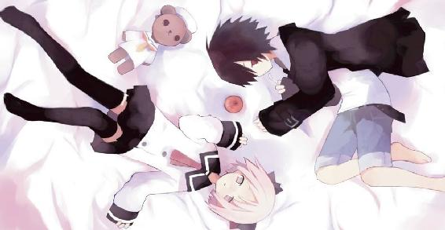
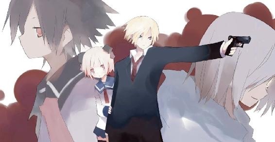
ＭＦ文庫Ｊ
蟲と眼球とテディベア
日日日
カバー・口絵・本文イラスト●三月まうす
ＦＲＯＭ ★ うさりん
ＴＯ ★ 先生
題名 ★ みことのり
内容 ★ はろー。うさりんでーす。放課後で、先生はもしかしたら忙しい時間かもしれないけれども、いつでもメールしていいって言ってたので遠慮しないでメールしてみました。悪かったら怒ってください。今、おうちです。先生は学校ですか。都合が悪いようなら無視していいですが、もし暇でしたら折り返し連絡くれるとうれしいです。
ＦＲＯＭ ★ 先生だ
ＴＯ ★ うさりん閣下
題名 ★ 職員会議中
内容 ★ 暇だ。どうしてこうも職員会議というのはかったるくて冗長なのか。あまりにも暇すぎてコーヒーばかり飲んでいるので胃を悪くしてしまいそうだ。ところで何か用なのかな閣下？ 御用とあればこの賢木愚龍、地の果てだろうがアンドロメダだろうが迷わず駆けつける所存だが。会議はフケても問題ないので気にしないで宜しい。
ＦＲＯＭ ★ うさりん
ＴＯ ★ 先生
題名 ★ みことのり２
内容 ★ ひええ、先生会議中だったんですか？ メールしてごめんなさい。迷惑をかけました。ええと、じゃあ、ちゃっちゃと用件を書きますね。先生、会議が終わってからでいいので、今日あたしの家までいらっしゃってください。先生ちゃんと覚えてますか？ 今日は十一月十一日、先生の誕生日ですよ。あたしんちだと大したパーティもできないんですが、一応、ケーキを買ってみたので、暇でしたら、本当に暇だったらでいいんです、あたしの家に来てください。ハッピーバースデイ先生。待ってまーす。
私立観音逆咲高等学校日本史教員賢木愚龍を形容する四字熟語はまさに際限なく思いつく。文武両道。才色兼備。眉目秀麗。金枝玉葉──ありとあらゆるプラスの意味を持つ四字熟語をズラリと並べたて、一つ一つ当てはめていったとしてもまるで外れることのない完璧な存在。世界で最も神に近い人間。優秀という単語の化身。それはもはや絶対個体、究極個体と表現してもなんら差し支えのない──パーフェクトかつハイエンドな人物こそが賢木愚龍だった。
若干一二才の時点で博士号を授与され、様々な分野に幅広く才能を発揮しレオナルド・ダ・ヴィンチの再来と呼ばれた。知能だけではなく身体能力もズバ抜けており、戯れに始めた柔道でオリンピックに出場した。さらに彼の膨大な才能は芸術の分野にも惜しみなく注がれ、ピアノを弾かせれば民衆はほろほろと感動し絵筆を持たせれば世界は鳴動した。最高。最大。最上。そんな言葉がよく似合う。加えて彼の背後には日本の国家予算をも上回る資本力を持つ賢木財閥という存在が控えており、彼はその次期当主、もう人生勝ったも同然というか負けるわけがないような感じだった。
さて。
そんな賢木愚龍にも唯一の欠点──というか、あからさまに言えば『問題』がある。それは彼が一九才にして地方の私立高校なんぞに就職を決めてしまった理由だし、彼が全く学術芸術文化活動に力を入れなくなった原因だし、その多大なる財力を全く利益を生まない一個存在に投資し始めてしまった動機でもある。
その理由にして原因にして動機は名を宇佐川鈴音という。
高校生の女の子である。賢木は彼女を愛している。もっと言えば溺愛している。偏愛していると表現してもあまり過言ではない。賢木愚龍はまさしく彼女のためにエリート街道をドロップ・アウトした。
彼女と一時でも多く同じ時を過ごしていたいから教師にもなったし、暇潰しで漫然とこなしていた学術芸術文化活動もすっぱりとやめた。さらに町内のアパートで一人暮らしをする彼女の光熱費やらなんやらの費用、貧乏学生の彼女を養うための生活費および学費、などなど、あらゆる負担を賢木は自分の財産から出費するようになった。そんな彼のことを口さがない連中は『足長おじさん』と呼んでいる。
特に間違った呼称でもないので、賢木はあえて黙認している。
恵まれた才能をむざむざ無駄にして何をわけわからんことをやっているのだ、教師などやめてもっと世界に役に立つことをやりなさい──などと、賢木の気持ちを知らずに世界はあれやこれやといらない忠告をくれるが、賢木にとっては既存の理論を覆す学論を作成することよりも、世界の強豪を次々と討ち果たしオリンピックでメダルを取ることよりも、斬新な手法と精緻な手腕で芸術界に革命を起こすことよりも、宇佐川鈴音と二人で毎日のんべんだらりと適当に、なんでもない日常を生きていくほうがずうっと幸せなのである。
価値観なんて人それぞれ。
幸福観もまた然り。
意味もなく立ちあがり、青少年の非行と社会の治安の関係について教務主任が熱く弁じている。悪い子供をぜんぶ駆逐すれば社会はもっと良くなるのだとか、表現を変えればそんな内容のあまり穏便ではない論調である。
彼が何に対して怒っているのか、本気で社会の治安悪化を憂いてああして憤っているのか、疑わしいし、きっとそうではないだろうと賢木愚龍は結論する。彼はなんとなく気に食わないだけなのだ。朝、教務主任の自分に生徒が誰も挨拶しないこととか、そういう生徒にかぎって彼を『ツチブタ』と陰口叩いてることとかが。その不満を吐き散らすために青少年全てに文句をつけているのである。
「下らぬ」
賢木はつぶやく。本当に下らない。全体的に──。
高校は少子化やら政治家の高齢者優先政策やらの煽りを受けてジリ貧で、電気代がもったいないと電灯もつけないので室内は暗い。子供を育てるのは金がかかるからと子供を産まない親も親だし、投票率の高い高齢者優先の政策を謳う政治家も政治家だが、学校が貧乏なのを彼らのせいにするのもなんだか違う気もする。それに貧乏は別に悪いことではない。宇佐川鈴音を見ているとそんなことを思う。
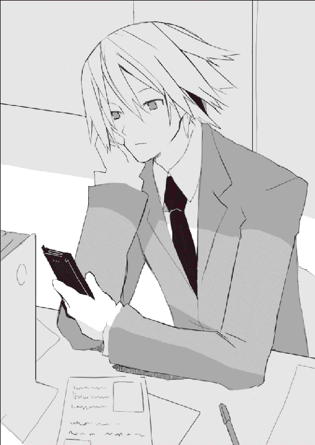
人間は結局、自己満足でしか満足できない生物である。だからどれだけ財力があろうとも彼が不幸だと思えば彼は不幸だろうし、どれだけ貧乏だろうと彼女が幸福だと思えば彼女は幸福なのだろう。彼とは宇佐川鈴音に出会う前の賢木だし、彼女とは鈴音だ。
鈴音は貧乏で、楽しみといえば料理を作ることくらいだし、その日の暮らしもやっとという状況だがそれでもたくましく生きている。彼女はきっと幸福だろう。そして彼女と出会うことができて──賢木も、幸福だった。
賢木は薄暗い会議室、そのはじっこのほうでしばらく会議を傍聴していたが、その鈴音からケイタイにメールが届いたので意識をそちらに向ける。
正面ではまだ教務主任がぎゃんぎゃんと何か喚きたてている。ご苦労さま。冬のこんな乾燥している時期にそんなに叫ぶと喉を悪くしますよ。なんとなくそんなことを考えつつ、震動するケイタイをポケットから取りだしメールをざらっと眺める。教務主任がそんな賢木を見て少し表情を変えたが無視。堂々と長机の上でメールを返信し何事もなかったような顔をする。
職務熱心な教務主任はすぐさま矢のような小言を飛ばす。
「賢木先生、会議中に携帯電話は......」
「すまない」
真面目な顔で言う。賢木はそしてやけに偉そうな態度で続けた。
「優先順位を考えたところ、貴様の話を聞くことよりもメールをチェックすることのほうが私には重要に思えてな。気に障ったのなら謝るが」
横柄な──というか、やはり偉そうな賢木の態度に教務主任は言葉をなくし、威厳を示すためにか咳払いをして話を続けようと口を開いた。
しばらくして、長机の上に置きっぱなしにしていた賢木のケイタイがガタガタと凄まじい勢いで震える。またメールが来たらしい。賢木は自然な動作でケイタイを手にした。
意味もなく唾を飛ばして教務主任がつっかかってくる。
「賢木先生──」
「──すまない。急用ができてしまった。これから会議を抜けるので──そうだな、貴様、教務主任、今日の夜までに私のパソコンにでも会議の概要をまとめて入力しておいてくれ。要点をまとめてしまえば僅かな分量で事足りるだろう」
「な──」
さすがに顔色を変える教務主任に、賢木は真面目な顔で言った。
「反論も小言も許さん。私はとても急いでいるのだ。この学校が我が賢木財閥の管理下にあることをお忘れなく。労働組合すら財閥の支配下にある現状、私の命令には黙って従っていたほうが賢明だと思うぞ」
そして賢木は立ちあがる。教務主任が憤怒か屈辱かトマトみたいな顔をする。賢木はあまり興味もないのでそんな彼から視線をそらし、唖然とする他の教師にペコリと頭を下げて会議室を去った。宇佐川鈴音が自分を呼んでいるのに下らない会議などに出席していられない。優先順位の問題だ。賢木は大股で静かな学校の廊下を歩いた。
道を歩く賢木の姿を見てある者は立ち止まり、ある者は指まで差して信じられないというような嬌声をあげる。
男も女も、彼の姿を直視した者は数秒思考能力を奪われ、ポウっと立ち尽くし彼の顔を見つめ呆然としてしまう。もちろん彼とは賢木愚龍である。宇佐川鈴音のアパートを目指しぐんぐんと歩く彼を中心に、波紋のように騒ぎが広がり、賢木はそんなざわめく群集を意にも介さずひたすらに歩く。
アメリカ人の母の遺伝で太陽に透ける金色の髪。きっちりとした目鼻だち。整いすぎた黄金率の肉体。ちゃらちゃらした服を好まない賢木はいつもスーツを着ているが、鈴音の家に行くときだけは目一杯おめかしをする。おめかしをすると何故だかいつも芸能人だと誤解され、サインをよこせサインをよこせと群衆が押し寄せてきたりする。高校教師のサインなどもらってなんの意味があるのだろうといつも思う。確かに自分は芸能人みたいな名前をしているが、芸能人ではない。
そこは田舎町なので商店街を抜けるとそんな群集もいなくなり、静かに流れる凸凹した道を賢木は徒歩で移動する。自転車かバイクを使えば早かったのだがせっかくセットした髪が崩れるのが嫌で、賢木は歩いてアパートに向かっている。どうせそんなに遠くない。新しく買った綺麗な服を何度も確認する。似合っているだろうか。どうも若者向けの服は着ていると落ちつかない。しかし『スーツでお誕生会』もアレだろうからひとまず我慢する。それにスーツを着ていると嫌でも教師な気分になってしまう。鈴音と二人でいるときくらいは教師という殻を脱いでいたい。
このあたりは駅が遠いので住宅が少ない。用途不明なだだっ広い空き地が持て余されている。建っている家もどことなく古風で、未だ瓦葺きの屋根が多い。二一世紀に突入したというのにここら近辺はまだ時が止まっている。
そんなことをとりとめもなく思考していると。
「もし。もし、おにいさん」
と、どこかから自分を呼ぶ声がした。男性の裏声のような。女性の低声のような。
声を振り返ると、小さな空き地に奇妙な出店が存在していた。
出店。と呼ぶのだろうか──あるいは露店か。釘打ちされた幕の向こうに一人の人物が座っている。紫色のビニールテント。そこでちょこんと胡座をかいて、綺麗に装飾が施されているローブのようなものをまとったそいつは静止している。表情はフードで隠れて見えない。男か女かもわからない。他にもシートには買えば高そうな大きい水晶玉が置かれていて、人物はそれを大切そうに布の切れ端で磨いている。その正面にはプラカードが設置されており、読んでみると『占い。一○○円。』と簡素な文句が書かれていた。
「占い──」
なんでこんなところで。賢木は不思議に思った。占いなら商店街かどこかで──というか、こんな田舎町でやるような商売じゃないだろう。そもそも一回一○○円で生活ができるのだろうか。様々な疑問が浮上してくる見事に胡散臭い出店だった。
奇妙な出店で謎の人物はざばりと両手を上げた。全身にローブをまとっているからかなんか人間とは違う生き物に見える。人物はそして陽気な声で告げるのだ。
「そう、占い。おにいさんもやってきませんかねぇ。よく当たりますよぅ。金運命運恋愛運などの運勢占いですとかですねぇ、当てもの失せもの探しもの、あとは四苦八苦の災難除けだとか八墨占い、亀甲占い、なんでもやりますよぅ」
「悪いが興味がない」
短く告げて、賢木はさっさと謎の占い師に背中を向ける。ちょっとお待ちよお待ちくださいとバサバサ占い師は慌てる。そして賢木の足を止めるような発言をするのだ。
「やっておいて損はありませんよぅ。おにいさん、おにいさんの未来には凶星が見えますからねぇ。災難除けをやっておかないと確実に不幸になりますよぅ。例えばあなたの目的地にいるあなたの想い人、彼女とかも、あなたの凶運に巻きこまれて不幸になるかもしれないんですよぅ。あなたはあなた自身がどうなろうと知ったこっちゃないってパワフルな人みたいですが、あなたのせいで周囲が不幸になるなんてこと望んじゃいないでしょう？ 望んじゃいないとわかっていますよぅ、賢木愚龍さん──」
「────」
がばり、と賢木は振り返った。占い師は両手を水晶玉に向けていた。
そして男でも女でもない奇妙な声で語るのだ。
「──あなたの好きな、そう、宇佐川鈴音さん？ 彼女がまず犠牲になりますねぇ。それはもう、おぞましい殺されかたをしちゃいます。ねぇ、おにいさん、恋人のそんな姿を見たくないでしょう？ 眼球を抉られて殺された死体なんて、見たくはないでしょう？」
「貴様......！」
賢木は叫んで、ずかずかと空き地に踏みこむと出店に侵入し、賢木だけでなく鈴音の名前までズバリ当ててみせた占い師の肩を押さえつけた。華奢だ。やめてくださいよ痛いじゃないですかと感情のない声で占い師は喚く。フードをめくりあげると意外にも若い少年の顔がそこにあった。ぞっとするほど表情がない。意識を持たない昆虫のような。
ざんばらに伸ばした髪。瞳は不気味に紅く光っていた。
賢木はよく響く声で怒鳴った。
「貴様──何者だ。どうして私と鈴音の名前を知っている？ それに死ぬだと？ 鈴音が死ぬと言ったのかッ！ どういう意味だ答えろ、小僧ッ！」
「だからぁ......」
彼は全く慌てていない。賢木の顔に見蕩れてもいない。飾りのように動かない瞳。
「......占ったんですよぅ。僕は占い師ですからねぇ。あなたはちょっと好ましくない種類の災厄に近々ぶち当たるでしょう。決して逃れることはできませんねぇ。えぇ、逃れることはできないでしょう。そしてその災厄は次々にあなたの周囲を不幸にし、日常を破壊し平凡を瓦解させ苦痛と絶望をあなたに与えます。そしてその災厄の狼煙、最初の被害者があなたの愛した宇佐川鈴音という彼女──」
占い師は真面目な顔で告げた。
「──彼女は悪魔に殺されます。無惨な方法でねぇ。眼窩にスプーンを突き立てられて眼球を抉られ、脳をぐちゃぐちゃにされて苦しんで死んでいくのです。あまりの苦しさに彼女はあなたまで恨むでしょうねぇ。こんな死にかたをするくらいならあのときに死んでいればよかった。あの海で。あの海で死んでおけばよかった。どうしてあたしを助けたの先生、恨んでやる、呪ってやる──」
賢木は占い師を殴った。
不愉快な発言を止めてやりたかった。
占い師は殴られても表情を変えなかった。賢木が胸倉を掴んでいるので倒れることもせず、ひたすらに男のような女のような不気味な声音で語るのみ。
「それが未来の真実ですよ。僕を殴っても仕方ありませんねぇ」
「なんだ──貴様は」
賢木は、占い師のあまりにも人間離れした態度に恐怖すら感じて叫んだ。
「何者だ。何が目的で、何故、そんなことを言うのだ。私が災厄に見舞われるだと？ その災厄とはなんだ？ どうして鈴音が死ななくてはならないのだ？」
賢木はもう、この占い師が『本物』だということを疑ってはいなかった。常人離れした雰囲気とか、次々と賢木や鈴音のことを言い当てたこと、それももちろん理由だが、最も大きな理由は彼の光る紅色の瞳だった。人間の瞳は光らない。こいつは──人間じゃない。
「僕たちは『蟲』と呼ばれています」
不気味な占い師は変わらぬ声でそう言った。
「僕──たち？」
「......僕たちです。僕たちに『個』はありません。僕たちに『自』はありません。ただ僕たちは僕たちの神の命にのみ従い、個人を捨てて行動している集合体の一部分に過ぎないのです。だから僕たちは『蟲』と呼ばれています。虫ではなく、蟲」
昆虫のように感情のない瞳で『蟲』はそれだけ告げた。
紫色の幕に包まれたテントの内部は不思議な色の光に満たされていて、どことなく現実感がなかった。なんだこれは、と賢木愚龍は思う。なんだこれは、現実か？
「『蟲』としての『僕』の使命はあなたに未来への警告を告げること。そしてその対応策を示して、避けようのない災厄を少しでも緩和し、最悪の事態を回避してもらうこと」
「最悪の事態？」
「悪魔が来ます」
『蟲』は静かにそう言った。
「いつかはわかりません。今日かもしれませんし、明日かもしれません、一○年後かもしれませんし、一○秒後かもしれません。しかしいつか。避けようもないいつか。悪魔はあなたの前に現れます。そして宇佐川鈴音を殺して最悪の事態を引き起こすのです」
「最悪の事態？」
「言えません」
二度目の賢木の質問に、『蟲』は動作不良を起こしたコンピュータのように即座に否の返答を告げた。それは『彼』の使命ではないということなのだろうか。
「言えませんがしかし──最悪の事態です」
「はっ、私にとっては鈴音が殺されるってことが何よりも最悪の事態だよ。地球の滅亡も宇宙の爆砕も比較対象にならん。天秤に乗せた瞬間に重みの違いから吹っ飛んでいくぞ」
「そうでしょう」
価値観は人それぞれですからねぇと『蟲』は淡泊な言葉を告げた。
「あなたが何を最悪と定義しようとこの場合はどうでもいいんですねぇ。結局は宇佐川鈴音が悪魔に殺されなければ何も起きないんですから。そんなわけで」
『蟲』は賢木の手を払いのけると奥のほう、ダンボールの箱をごそごそとして何かを探していた。しばらく待つと彼は両手に大きな卵を抱えて賢木を向いた。
卵。だと思う。人間の頭よりもちょっと小さい──大きな卵である。ダチョウの卵と同じくらいの大きさだろうか。基本的に真っ白で、しかし所々にイースター・エッグのようなペイントがされている。幾何学的な赤や青の模様。しかしそれは誰かが塗ったものなのではなく、卵の殻がもともとそういう色であるらしかった。
もちろんこんな卵、地球のどんな鳥類も爬虫類も両生類も虫も産みはしない。
なんの卵なのだろう。そして何ゆえ卵なのだろう。
『蟲』はその卵を慎重に持ちあげて、賢木に手渡した。
「これは夢界獣の卵です。ちなみに地球の生物ではないので図鑑で調べても無駄です。この卵を、忘れずに宇佐川鈴音に渡してあげてください。温める必要はありませんねぇ。時期がくれば──運がよければ、悪魔が現れる前に、その卵は孵化をして夢界獣が生まれるでしょう。夢界獣は原始生物なので擦りこみ現象がありまして、最初に見た生物を親と思いこみます。おそらく宇佐川鈴音が親となるでしょうねぇ。個体差はありますが夢界獣は強いので、悪魔が襲ってきてもきっと撃退してくれるでしょう」
「親だから？」
「親だから。夢界獣は義理深いんですよぅ。これが悪魔への対応策。あとは──まぁ、あなたが懐に常時携帯している銃刀法違反の兵器でも使って、夢界獣が生まれるまで宇佐川鈴音を守ってやってくださいねぇ」
『蟲』はそう結んで、賢木の胸部をつんと突いた。そこには確かにこっそり忍ばせておいた拳銃が隠されている。そんなことまで見抜いているのかと賢木は驚いた。何か自分がいつもと違う世界で呼吸をしているような気分。呼吸をしている空気にいつもと違う成分が紛れこんでいるような。奇妙な感覚。眩暈感。いきなり世界が嘘臭くなったような。
「貴様は──なんだ？」
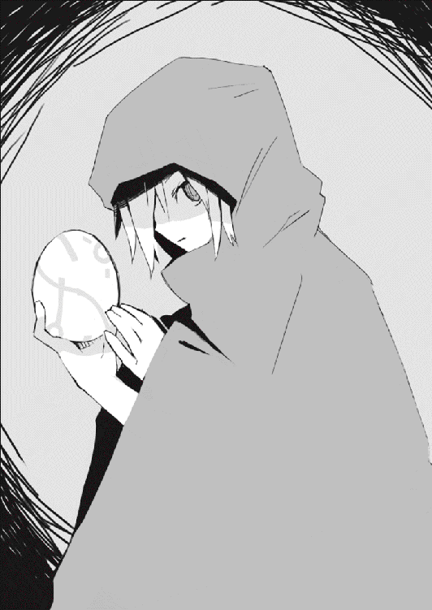
賢木は衝動的に叫んだ。三度目にもなる本質的な問い。
『蟲』は初めて微笑んだ。
「なんと答えれば納得するのです？」
どうしてだか古風な瓦葺きの家よりも古臭く見えるボロっちいアパート。そこに宇佐川鈴音は住んでいる。三階建て。全六部屋。ただし三階は全て空室。二階は怪しげな会社の事務所が占拠しており、一階のＡ室と呼ばれるのが鈴音の部屋だ。ちなみにＢ室に住んでいるのは自称音楽家の擦りきれたお姉さん。社交性がないのか人間嫌いなのか滅多に顔を見せないのだと鈴音が話していた。
どういう目的でこんな不便な場所にこんなアパートが建っているのかは知らないが、とにかく部屋が狭いので家賃は冗談のように安い。鈴音がバイトで稼ぐお金でも充分に払えるほど安い家賃なのだ。
賢木はお金のことなら心配するなもっといい部屋に住めと何度か言ったのだが、本人はガンとして聞かず、寝転べるだけの広さがあるならどこでも一緒だよと健気に笑っている。家賃のことだけではなく鈴音は賢木にお金をもらうことに抵抗があるようで、できるかぎりの範囲では自分で自分の面倒を見ている。
もちろん気づかれないよう陰ながら賢木が色々と援助をしているのだが。バイト先の店長に鈴音をクビにしたら社会的に殺しますと脅してみたり、病気になったら大変なので水道に流れる水を完璧な地下システムで浄化したり。
まぁそれはいいとして、そんな宇佐川鈴音のアパートに賢木愚龍が辿りついたのは午後六時のことだった。古茶けたコンクリの床を歩いて『１Ａ』と記された扉の前で立ち止まる。深呼吸。賢木は外見からは意外だがあまり女の子に免疫がなく、それが鈴音相手でもけっこう緊張してしまうのだった。扉の前で深呼吸するのはもはや通過儀礼となっている。
こんなアパートにもついているインターフォンをぽちりと押し、待つ。
すぐに鈴を転がすように軽やかな、鈴音の声が返ってくる。
『はい？』
「閣下、私だ」
『はーい』
名乗らなくても誰だかわかったようで──というか、鈴音のことを『閣下』などと呼ぶのは賢木だけなのだけど──鈴音はすぐに嬉しそうな声をあげ、通話を切った。
部屋が狭いので鈴音が扉に辿りつくのも早い。二秒と待たずに彼女は現れる。
扉を開けて姿を見せたのは可憐な女の子だった。どことなく野暮ったく見えるのは服装が地味なせいで、それさえ抜きにすれば本当に可愛らしい姿をしている。清潔そうな癖のない髪。顔には柔らかな笑顔。腕も足も雪のように白い。それだけでも充分に魅力的なのだが、賢木が最も素晴らしいと思うのは彼女の澄んだ声だった。
賢木の胸ほどの位置にある顔を花のように咲かせて、鈴音は笑った。
「先生、本当にすぐ来てくれたんだ」
鈴のような、ちょっとだけ金属質な、透き通った声音。
「嬉しいな。はい上がって。寒いでしょ」
手を引いて賢木を家に上げる。賢木は本当に靴を置くスペースしかない玄関（というか靴置き場）でブーツを脱ぎ、促されるままに室内に歩を進めた。
鈴音の部屋の構成は四畳半が一つとトイレに台所である。ちなみに台所といっても四畳半に直接ガステーブルと調理台が設置されているだけで、実質は四畳半とトイレだけがこの部屋の全てである。ちなみに風呂はない。鈴音は近場の銭湯に毎日かよっている。
賢木は着てきたコートを脱いで卵と一緒にそのへんに置いた。
この部屋で料理をするからかもんやりと匂いがこもっている。小さい窓は一つだけあるが、寒いからか閉めている。換気扇は回転しているが焼け石に水のようだった。賢木は鈴音と何気ない会話をこなして中央に鎮座するコタツに潜り込んだ。
鈴音は調理台の上に置いてある小型の冷蔵庫から何かの箱と麦茶を取りだす。流しに置いてあったコップに麦茶を注ぎ、皿とともに盆に乗せてコタツまで運んでくる。それからまた往復し箱を手に戻ってくる。置くと彼女は賢木の隣に座った。
「用意できたよ」
「ご苦労さま。......って、なんで私の隣に座るのだ。狭いだろうに。コタツはちゃんと四角形なのだから一辺に二人集まる必要はないだろう」
「わかんないかな」
笑って、鈴音は賢木にもたれかかってきた。
「そばにいたいんだよ。一センチでもいい、近くにいたいんだよ」
ハッピーバースデイ先生。つぶやいて、宇佐川鈴音は賢木を見上げた。
賢木は何かを堪えるような珍妙な顔をしている。
「......閣下、そういう可愛いことを言われると我慢できなくなってしまいそうだ。やめてくれ。私は閣下が高校を卒業するまでは手をつなぐ以上のことをしないと心に決めているのだ。私に誓いを破らせないでくれ。頼むから」
「そんなの、破ってもいいのに。我慢なんてしなくてもいいのにな」
すねるようにつぶやいて、それでも動かずに鈴音は賢木に体重を預けた。
やばい、と賢木は思う。可愛い。今すぐにでも抱きしめてしまいたいくらいだ。しかし それはまずい。教師が生徒にそんなことをすれば間違いなく犯罪である。
賢木は鉄の自制心で衝動を圧殺し、無難な方向に話題をそらすことにした。
「それにしても閣下、また知らないうちに物が増えてないか、この部屋」
「そうかな」
「ほらテレビとか。前に来たときはなかったぞ。どうした？ 買ったのか？」
「買えないよ。高いもの。あれはね──ほら、商店街でたまに福引やってるじゃない、一○周年記念とかお客様感謝祭とかのね、その福引の二等賞の賞品だったんだよ」
「当てたのか？」
「当ててないよ。ただなんか誰も当てなくて商品が余っちゃったみたいで、福引係のおじさんが『残っててもしょうがねぇから鈴音ちゃんにやるよ』とか言って、くれたの」
「なんて露骨な職権濫用だ。下心が見え見えだぞその親爺」
「わかってるよ。でもくれるって言ってるのを断る理由もないし、というかテレビは欲しかったから、もらったの。あとインスタントラーメンもたくさんもらったね」
確かに、部屋の隅っこには『観音逆咲商店街』と印刷されたダンボールがでんと置かれている。あれの中身がぜんぶラーメンだとしたらさぞかし大量だろう。賢木はそんなことを考えながら鈴音を戒めるように言う。
「でもあまり知らない人から物をもらうなよ。なんもわからないで教材とかもらって、あとで高額の請求をされたって生徒、うちの学校にもけっこういるんだぞ」
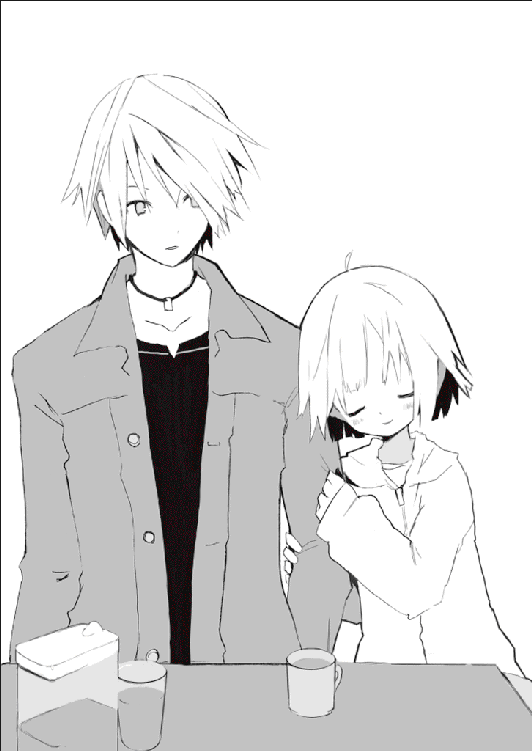
「うん──」
鈴音は困ったように笑って、それからコタツに置かれた箱を開いた。中からは二切れのショートケーキが姿を見せる。さすがに丸ごとケーキを買えるほどのお金はなかったか。
鈴音はそれらを皿に盛りつけて、フォークがなかったねと言って立ちあがった。それからちょっとだけ迷うような動作をして、フォークを掴むとまた立ち尽くし、しばらく何かしら考えていたがやがて部屋の隅っこに置かれた紙袋を持って戻ってきた。
少し彼女は紅潮していた。
照れているような、困っているような顔。
「ええっと......」
賢木はなんとなく鈴音の持つ紙袋の意味を理解し、彼女の思考も推測した。
きっとあの紙袋は賢木へのプレゼントで、鈴音はそれを渡そうかどうしようかと迷っている。こんなプレゼントでいいのだろうか。賢木は呆れて受けとってくれないんじゃないだろうか──そんなことを心配して、どうしようもなく先へ進めないのだ。
賢木は理解して、他の誰にも見せない優しい顔で告げた。
「大丈夫。私はな、閣下からのプレゼントならばどんなものでも嬉しいぞ」
「そう──かな。でも先生、お金持ちだから、今までの誕生日ってもっと豪華で、プレゼントとかもすごかったんじゃ。あたし、申し訳ないというか、情けないというか」
「そんなことはない」
賢木は本心から言う。
「どれだけ値段が高いかでプレゼントの値打ちが決まるわけがない。どれだけ規模が大きいかで誕生日の価値が決まるわけもない。私にとってはな、閣下、閣下と今日こうしてコタツで隣り合って、ケーキを食べて、麦茶で乾杯できるってことが何よりも素晴らしい幸せに思えるのだ。生涯最高の誕生日だ。だからそんな顔をしないでくれ」
「でも──」
「『でも』はなしだ。約束だっただろう──私は閣下に同情しているんじゃない、心から愛しているからここにいるのだ。それを信じてくれ。自分に価値がないなんて思わないでくれ。私は高嶺の花なんかじゃない、閣下も不相応な女の子なんかじゃない、私にとって閣下は、特別な女の子なのだと信じてくれ。そういう約束だったろう」
「うん......」
約束。
宇佐川鈴音は何も恥じることはない。お金なんてなくていい。彼女は彼女のありのままで、賢木にとっては世界で最も愛おしい存在に思えるのだから。賢木は鈴音にそう言った。二人が出会った最初のころである。あのころ鈴音はうまく笑えなかった。喋るのもあまり得意じゃなかった。それが今ではこんなに明るくなった。
「じゃあ、今日くらい」
鈴音はうつむいたままつぶやく。
「『閣下』って──呼ばないで」
すねたような、そのくせ、面白がっているような声だった。
冗談めかした本音の言葉。
賢木は誠実に応える。
「宇佐川」
「名前で呼んで」
「鈴音」
「ん......」
鈴音は満足したのかこくりと頷いて、顔を上げずに紙袋からマフラーを取りだした。鈴音は手先が器用なのでそれは見事なものだった。
「これ、プレゼントね。本当はクリスマスのために編んでたんだけど──早く終わったから、今、あげる。クリスマスにはまた違うものを用意するから」
「ありがとう。へぇ、うまいもんだ、誰かに習ったのか？」
「クラスのお友達に。三日くらい泊まりこんでコツを教えてもらったの。基本的に編物って一つやり方を覚えたらあとは繰り返しだから、慣れたらけっこう簡単だよ。毛糸は安物だけど、精一杯、愛をこめたから」
「なるほど温かそうだ！」
賢木は上機嫌に笑った。愛──それは最高の温かさを与えてくれるだろう。
鈴音は両手でマフラーを持って、座ったまま賢木に向き直った。
「巻いてあげるね、頭を下げて」
「うむ」
言われた通りに頭を下げる。するとしゅるっとマフラーが巻かれ。
鈴音が賢木にキスをした。
時間が凍る。驚いた顔の賢木。鈴音は彼の耳のあたりに手をやって、静かにその唇を重ねていた。巻かれたマフラーがしゅるりと落ちる。賢木は予想もしていなかったので思考することもできず、ただ鈴音の温かな手とか、唇とか、心臓の音とかを無為に感じていた。
「............」
ふと、その唇がゆっくりと離れた。
鈴音はその綺麗な眉をちょっとだけ下げて、ごめんなさいとつぶやいた。
「......ごめんね。先生、誓いを破らせて」
「............」
賢木は呆然としている。うつむいた鈴音の表情を、前髪がざらりと覆い隠した。
「でも、つらいんだ。先生にとってあたしはなんなのか、わかんなくって、時々すごくつらいんだ。あたしは先生が好き。愚龍さんが好きだよ。だけど先生は──先生と生徒だからって、手をつなぐ以上のことはしてくれないし、あたしを名前で呼んでくれない──あたしは、怖いんだ」
鈴音はうつむいたまま首を振った。
「......わがままだね。こんなに良くしてもらってるのに、それより上を求めるなんて。先生にとってあたしはなんなのかな。本当に先生はあたしが好き？ 信じてる。信じたいけど──怖いんだ、怖かった。だから絆が欲しかった」
鈴音は泣いているような声で言った。しかし泣いてはいなかった。言葉は震えて途切れ途切れだったが、それでも泣いてはいなかった。泣いていないからこそ、それが鈴音の本心なのだと理解できた。一時の衝動で口にされた言葉なのではなく、ずっと心に沈殿していた深い悩みなのだと理解できた。
賢木は自分を痛罵したい気分だった。鈴音はずっと思い悩んでいたのだ。彼女はつらいのだと言った。彼女は怖かったのだと言った。彼女は賢木に嫌われること、見捨てられることを恐れている。そんなに愛してくれていたのか。
だが宇佐川鈴音、賢木愚龍も同じくらいにおまえのことを愛しているんだ。
愛し合っている二人は互いを大切に想っているからこそ、その「大切」を失いたくないという途方もない恐怖を心に抱いている。それはコインの裏と表の関係──全然違うけど、どっちも本当で、全く関係がないけど、密接に関係している。
賢木は鈴音の髪を撫でた。そして泣きそうな顔の彼女に小さく、触れているだけのキスをした。さらりと鈴音の髪が動いた。閉じた鈴音の両目から、今度こそ涙が零れた。
人間は弱い生き物だから。
時々こうして確かめたくなる。
愛を。想いを。気持ちを。確かめたくなる。
それは決して悪いことではない。
だから鈴音、泣かなくてもいい。
賢木愚龍の二○才の誕生日を祝う会はそうして印象深い思い出を残して終了し、時計も一○時を回ったので帰ることにした。鈴音は何やらまだ一緒にいて欲しそうだったが、さすがに一○時をすぎてそばにいて何か起こったら大変なので、撤退。
鈴音は抗いがたい可愛さを持つ女の子なのでそばにいると色々アブないのだ。賢木も二○才の男性。まぁ、なんだ、そんなんなので。最後の第一線だけはなんとしてでも越えないようにしなくてはならない。
そうして彼女と別れを告げて、プレゼントのマフラーを首に巻き卵を手にしてとことこと歩く。結局、『蟲』にもらったこの奇妙な卵は鈴音に手渡すことができなかった。そのような雰囲気ではなかったし、だいたい冷静になって考えてみればあの『蟲』というやつもはなはだ怪しかった。
未来が見える道理はない。賢木のことや鈴音のことは調べればすぐに知れるだろうし、目の光だってトリックを使えばどうにでもなりそうだった。最悪の事態だとか、鈴音が殺されるだとか、馬鹿馬鹿しい。鈴音の部屋に行ってしばらくは『蟲』の不穏な言葉について考えていたのだが、鈴音の朗らかな態度に触れるにつれなんかどうでもよくなっていた。鈴音が殺される？ 馬鹿を言ってはいけない。彼女が殺されなきゃいけない理由なんて地獄の果てにも存在しない。とんだ与太話だ。
しかし──。
賢木は一抹の不安を拭い去れない。本当にあの『蟲』という少年が語ったことは嘘八百だったのだろうか。嘘だったとして、そんな嘘をつく必要がどこにある？ そして本当だったとして、どうしてそんな未来が予想できる？
賢木はしばらくその優秀な脳髄でうらうらと思考していたが、どうしても結論があまり歓迎したくない方向に傾くのでやがて考えることをやめた。しかし不安はどろどろと吹き溜まり、ヘドロのごとく沈殿する。
すっかり暗い夜の道。街灯の下。賢木は立ち止まる。
凸凹した田舎道の途中、もうじき商店街だというような微妙な位置である。民家もちょっとはあるので水銀灯がぽつぽつと立っている。曇っているので月も星もない。賢木はでたらめな配色の卵をしっかりと掴みながら立ち尽くす。
本当に、『蟲』の言ったことは、嘘だったのだろうか。
もしかしたら本当なんじゃないか。自分は取り返しのつかない失敗をしてしまったんじゃないか。恐ろしかった。その『もしかしたら』が死ぬほど恐ろしかった。
戻ろう。賢木は決めた。騙されてもいい。笑われてもいい。この卵だけでも鈴音に渡そう。それで警備会社に依頼してこっそり鈴音を警護させて。あるいは卵が孵化するまで彼女を賢木の屋敷に招待して。できるかぎり危険を遠ざけて。
鈴音を守りたい。
賢木は心からそう思っている。
彼女が殺されるなんてこと考えたくもなかった。だから彼女に迫る危険があるのなら徹底的に排除する。それがどれだけあやふやな危険でも。嘘でも悪戯でもなんでも。
そう決断した賢木が来た道を振り返るのと。
右手にスプーンを握りしめた少女が真横を通りすぎるのは。
同時だった。
「────」
びくりと、全身が心臓になって大きく波打った。
賢木は幽霊のような足取りで歩く少女の後ろ姿を見つめる。浮浪者が着るようなボロボロの服。足は裸足で靴下も履いていない。髪は特徴的な漆黒のオオカミヘア。洗髪していないのか変に癖がついている。右手にはこれだけいやに綺麗なスプーン。
──スプーン。
『蟲』の言葉が蘇る。
『──彼女は悪魔に殺されます。無惨な方法でねぇ。眼窩にスプーンを突き立てられて眼球を抉られ、脳をぐちゃぐちゃにされて苦しんで死んでいくのです──』
嫌な予感──嫌な予感！
こんな時間にこんな場所をこんな少女が歩いていて。その手には街灯を反射しきらりと光るスプーンが握られていて。奇妙な占い師は賢木の世界で最も大切な人がスプーンで殺されると予言していて。それだけで、賢木が行動するには充分な理由だった。
「貴様ッ！」
賢木は叫んで、普通の速度でゆらゆらと歩く少女を止めようと走り寄り。
手を伸ばして。
「邪魔をするのか？」
感情という不純物が全く含まれていない純真な声。その声が背後から聞こえてきたので賢木は背筋を緊張させる。手を伸ばした先に──少女の姿はなかった。
振り返る。
「グリコの邪魔をするのなら、おまえの眼球えぐっちゃうぞ。おまえは『蟲』か？ 目が紅くないのに『蟲』なのか？ それとも関係がないのか？」
あどけない、少女の声。見たところ少女は高校生かそれくらいなので、その声でも別におかしなことはないのだが──何か、違和感。凍りついた太陽みたいな。
少女の瞳は漆黒だった。周囲に渦巻く暗闇を吸いとっぷりと暗い穴のような瞳。幼い顔。短い手足。しかしそこには少女らしからぬ邪悪さだけがあった。こちらに向けられた少女の瞳はまるで銃口の暗い穴。なんの感情もない。ただ危険な死の匂いだけがある。
いつのまに、背後に──。賢木は身構える。
少女は不思議そうな顔をした。
「『蟲』じゃ──ないのか？ なのにどうしてグリコの邪魔をする？ それとも邪魔をする気はないのか？ ないのだったらそこをどけ」
「貴様は──」
「眼球抉子」
がんきゅう......えぐりこ？
他人の眼球を抉って殺してしまいそうな禍々しい名前だった。
「名前などどうでもいい。貴様は──何をするつもりだ」
賢木は目の前にいる少女がマトモな人間ではないとすでに気づいていた。普通の少女が賢木に感知できないほどの速度で動けるわけもない。
それに──こいつは、『蟲』の名前を知っていた。
ならば。
「何をするつもりじゃなければ、おまえはそこをどいてくれる」
「たとえ何をするつもりでも、貴様を通してはいけない気がする」
賢木は静かにそう言った。そして油断なく少女を見据える。
「じゃあ、いい」
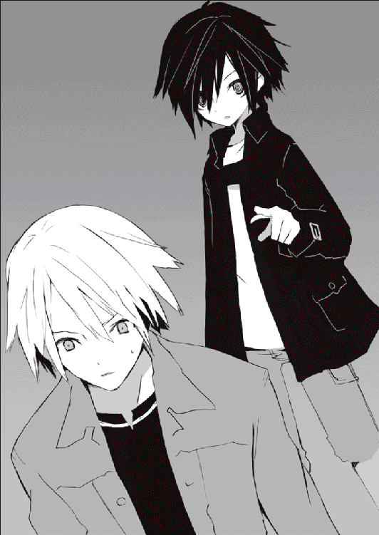
少女の声が。
「おまえがどいてくれないなら」
背後から、聞こえたかと思うと──。
「自分でどかす」
首筋に鮮烈な一撃が炸裂した。何をされたのかもわからない。反応すらできなかった。それでも賢木は踏みとどまった。こんな程度で──賢木愚龍を倒せると思うな。
歪んだ視界で少女はつぶやく。
「しぶとい。だけど──おまえじゃ止められない」
そして続けざまに少女の拳が賢木の腹にぶちこまれる。容赦のないその攻撃に賢木は反撃することもできず、くるりと踊った少女の掌底に顎をガンと打たれて。
何もできずに、気絶した。
賢木の手から卵が転げた。
鈴音。宇佐川鈴音。宇佐川鈴音という名前だけが脳内を延々と走りまわり、その洪水のような宇佐川鈴音に飲みこまれないように頼りない意識はもがいていた。そうして半ば宇佐川鈴音の波に押されるように賢木愚龍は意識を回復し、凸凹道の街灯の下でぱちりと目を見開いた。最初に視界に飛びこんできたのは水晶を抱えた少年の姿だった。
「お。目が覚めましたかねぇ」
「............」
ほとんど夢の世界の住人だと思っていた『蟲』がそこにはいた。賢木は体の痛みをまるで無視した動作で起きあがり、のほほんとした顔で立つ『蟲』の胸倉を掴んだ。
「鈴音はッ？」
「慌てないでくださいよぅ。それに叫ぶと殴られた顎によくないです」
「私のことなどどうでもいい。それより鈴音は？ それとあの餓鬼──」
必死の形相の賢木に、飄々とした顔で『蟲』は微笑した。
「知りませんよぅ。僕はたまたまここを歩いていてあなたを発見しただけでしてねぇ」
「たまたま歩いてたやつがどうして私が顎を殴られたと知っているのだ。どうせ最初から物陰かどこかで私のことを見ていたのだろう」
『蟲』は感心したように目を丸くした。
「おや頭の回転が速いですねぇ。すみませんねぇ、僕が助けに入ってもしょうがないと思ったので助けられませんでしたが。......怪我はよろしいんですかぁ？」
「だから私のことなどどうでもいいと言っているだろう！ 鈴音は？ あの餓鬼は？」
「だから知りませんと言っているでしょうに。そんなこと、僕に訊くよりも直接行って確かめてくればいいじゃないですかぁ。悪魔の目的地、宇佐川鈴音の家に、ね」
「鈴音の──家、だと」
蒼白になる賢木に、『蟲』は冷淡な口調で言った。
「あの悪魔の目的地はそこに決まっているでしょう。そうですねぇ、今から走れば凶行を止められるかもしれませんよぅ。僕なんかと喋ってないで走ったほうがいいのではぁ」
「くっ──」
賢木は『蟲』を苛立ち紛れに突き飛ばし、鈴音の家の方向を振り返った。
「おっと、これをお忘れなく」
『蟲』は大して痛がりもせず落ちていた卵を賢木に放り渡す。賢木は無意識に受けとって、無我夢中で足を動かし走りにくいダートを駆けた。
『蟲』の姿は幻のように背後から消えていた。
しかし賢木はそんなことに構わない。走れ。走れ。走れ。脳から送られる遠慮のない命令に従い凄まじい速さで道を行く。誰もいない道。地獄の道に思えた。賢木は吐きそうな嫌な予感を必死で押し殺して、ありもしない希望にすがって全速力で走った。
宇佐川鈴音。宇佐川鈴音。宇佐川鈴音。
彼女の名前が脳に木霊する。だからなんにも考えられない。
なんなんだこの状況は。いったいなんの罰なのか。世界はいつから壊れていたのか。いつから狂っていたのか。おかしい。理不尽だ。泣きたくなる。不条理だ。
でも──現実だ。
鈴音が高校を卒業したら、結婚しようと思っていた。それまでは手をつなぐだけで我慢しようと自らを戒めていた。だって自分は教師で、鈴音は生徒だったから。たかが三年。たった、それだけの時間だ。そんな時間は目蓋を閉じてちょいと開ければ経過している──そう、思っていた。三年後の未来なんてものが確実にあると信仰していた。確実な未来なんてどこにもないのに。いつでも神様は意地悪なのに。いつでも運命は残酷なのに。
「鈴音ッ！」
古ぼけたアパート。貧相な扉を壊れそうなほど強く叩く。そして鈴音の名前を呼ぶ。鈴音。鈴音。鈴音。返事はない。返事はない。おかしいな。銭湯にでも行っているのだろうか。そんなわけがないだろう。わかっているくせに。
「────」
賢木は躊躇いもなく懐から拳銃を取りだし、扉の鍵を一撃で破壊した。そして思いっきり壊れてもいいというように扉を蹴り開ける。銃声が誰かに聞こえたかもしれない。知ったことかと思う。優先順位の問題だ。警察沙汰になろうが構わない。
鈴音が危ないのだ。宇佐川鈴音が危ないのだ。
ならば手段は選ばない。
「.........！」
扉の向こうでは地獄が展開されていた。
予想通りの最悪だった。
血まみれの少女。
鈴音の亡骸。
賢木の思考が爆滅した。
「......そうか、わかった、神様、あなたは私が嫌いなんですね？」
多くを理解する必要はない。鍵の閉まった部屋で鈴音が死んでいる。そして鈴音のそばには血まみれの少女が立っている。ならばこいつが犯人だ。鈴音を殺した犯人だ。
ならば──死ね。
死にさらせ。
賢木愚龍は続けざまに、なんの躊躇もなく少女に弾丸を解き放った。少女は驚いたような顔をしていたがすぐにその腹部に弾丸が炸裂し、続いて頭に、足に、合計三発の弾丸をめりこませて吹っ飛んだ。薄暗い室内。ぴしゃ、と鮮血が舞う。壁にぱたぱたと赤色が降り注ぐ。少女は声もあげずに頭から壁にぶち当たり、完全に沈黙した。死んだ。
人を──殺した。
いや、あいつは人じゃない。宇佐川鈴音を殺した──外道だ。
死んで当然だったのだ。
賢木はそんなようなことをぶつぶつと口内でつぶやきながら、無惨な死に様を晒している鈴音に歩み寄った。コタツにもたれかかるような姿勢で足を投げだして座っている。彼女の頭はコタツの上にだらりと垂れている。その顔。綺麗な心を映していつも輝いていた瞳に、スプーンが突き立てられている。もう片方の目は何も見ることもなく虚ろに濁っている。宇佐川鈴音が死んでいる。『蟲』の──予言通りに。
賢木はなんの迷いもなく銃を自分のこめかみに押し当てた。膝から崩れ、涙を流し、宇佐川鈴音の亡骸を見つめて最後の言葉を考えている。自殺。鈴音のいない世界に生きていても何も幸せなことはない。生きていく気力がありません。下らない人生でした。賢木愚龍は鈴音を追って自殺しようと決めた。神や運命を呪いながら。
宇佐川鈴音に謝りながら。
「すまない。鈴音。苦しかったろう、こんな殺されかた、こんな死にかたをするくらいだったら──あの海で死んでおけばよかったかもな。すまない──」
すまない、と、つぶやいて、賢木はゆっくり引き金に指をかけた。
「愛していた。鈴音──」
鈴音がむくりと起きあがった。
まるで眠りから覚めたかのように、ゆらりと体勢を起こし、呆然とした顔であたりを見渡して賢木に視線を止める。右目にスプーンを生やしたまま。眼漿を頬にたらたらと流れるままにさせて。宇佐川鈴音は賢木を見た。そして普通につぶやくのだ。
「あれ、先生だ」
不思議そうな表情をする。
「あれれ、右目が見えない」
おっかしいなと右目を擦って、そこに何かが刺さっていることに気づいて、なんだこれという顔をすると鈴音はスプーンをあっさりと抜いた。どろりと奇妙な液体が流れる。賢木は言葉を口にすることができない。なんだこれは。ふざけている。地球の摂理が狂っていた。それともこれは夢か。夢なのか。夢であって欲しい。
奇妙な現象が起きた。
「う......」
鈴音は瞬間、表情を歪めて右目を手で押さえる。苦しそうな顔だった。
「熱い......目、目が熱い。熱いよ」
「り、鈴音──」
賢木は動くことができない。大切な人が苦しんでいるというのに。
「先生。目が熱い。どうしちゃったのかな。熱い。痛い。先生──」
呼んでいる。宇佐川鈴音が呼んでいる。
ならば助けなくてはならない。
賢木は立ちあがり、目を押さえてうつむいている鈴音に駆け寄った。
肩を揺さぶって叫ぶ。
「鈴音、大丈夫か、鈴音？」
「先生──」
安堵したような声でつぶやいて、目を押さえていた手をどける鈴音。
その顔を見て賢木は戦慄した。
「どうやら遅すぎた」
宇佐川鈴音の右眼球は元通りになっていた。スプーンが突っ込まれていたはずなのに。そんな形跡はなく、ただ頬に残された眼漿の流れた跡だけが彼女の傷の名残だった。賢木の思考は麻痺していた。どんどんと崩壊してく現実に頭がついていかなかった。
鈴音の肩を抱いたまま、部屋の隅っこに視線を投げる。
「眼球えぐっても殺せなかった。手遅れ。ご愁傷さま──」
血まみれの服。銃口の瞳。無表情。あどけない声。
鈴音を一度殺した少女は頭部の銃痕に指を突っ込み、見た目おぞましい淡々とした動作で銃弾を摘出した。続いて腹も。足も。痛みを感じていないのか。というか、即死だろう──普通、頭に銃弾が埋まったんだぞ。賢木は床に転がされた血まみれの弾丸を見て、それから鈴音と同じくすぐに再生する少女の傷を見た。なんだこれ。もう嫌だ。理解できない。やめてくれ。日常を返してください。平和な日常を返してください。
少女は賢木を無視してただ宇佐川鈴音を見つめ、事態を何も理解していない彼女にどこか哀しそうな──同病相憐れむというような、儚げな表情で告げた。
「おまえは林檎を手に入れた。それはすでに手放すのが不可能なくらいにおまえの中に根を張っている。林檎がおまえの死を許さないくらいに、深く、根を張っている──」
意味のわからないことをつぶやいて、少女は音もなく扉に向かった。
「──おまえはもう、人間として生きていくことはできないだろう」
ふと、振り返って。
「せいぜい蟲に食われないように──守るがいい、その林檎」
そして彼女は静かに扉から姿を消した。彼女が何がしたかったのか。いったい何が起きているのか。わからないままに少女は姿を消し、二人だけが残された。
血まみれの世界。荒らされた部屋。蟲。不死身の少女。
何がなんだかわからなかった。
賢木は無性に何かにすがりつきたい不安な気持ちになって、鈴音を抱きしめた。鈴音はちょっと驚いた顔をしたが、すぐに眼を閉じて、彼に体重を任せた。
そんなに安心して、何もわからないけど賢木に任せていれば大丈夫という顔をして、全てを賢木に託して、幸せそうな顔をしてくれる。宇佐川鈴音。大切な人。
「先生──」
「うん？」
鈴音のつぶやきに、賢木は優しく答える。
彼女は静かに言った。
「忘れてた、海で死にかけたときのことを思いだしたよ。あたしはあのとき死にかけて──夢の中で、林檎を食べたんだ。食べた瞬間に生き返った。その林檎を食べたおかげで──あたしは、生きているんだと思う。なんとなくそう思うの」
鈴音は右目を手で押さえた。
「あの子はそれを取り返しに来たのかもね」
世界が狂っても摂理が壊れても日常はしぶとく現状を維持していて、今日が終われば明日は来るし明日が来ればそれはもう朝。朝といったらＨＲで一年Ｂ組担当教師の賢木愚龍も、出席簿をつけ伝達事項を生徒に述べるなどの責務をこなさなければならない。宇佐川鈴音も昨日──つまりは彼女が少女に眼球を抉られた夜、念のため病院へつれていったのだがどこにも異常はありませんと医者は宣って、今日も元気にいつものように登校していた。ところで賢木愚龍が気になるのは出席簿の内容で、そこにズラッと並ぶ四十余りの名前に昨日まではなかったはずの名前が追加されていて、その名前も全く見たことも聞いたこともない名前ではなくつい最近に耳にした名前で。
その名前は眼球抉子といった。
「......んん？」
嫌な予感。
一応、目の錯覚という奇跡を信じて目薬をさし出席簿をまた眺める。眼球抉子。うん、見間違いようのないふざけた名前だ。出席番号は一一番。昨日まではそのポジションを確かに違う名前の人物が占めていたはずで、しかしその人物の名前は一二番の位置にいつのまにやらスライドされている。どういうことだと賢木は思う。なんかめちゃくちゃ嫌な予感がするのだが。そうして一人硬直しているといきなりクラスの前扉が開いた。
「────」
特徴的なオオカミヘア。制服であるセーラー服。白い上靴。銃口の瞳。昨日とほとんど同じ外見をしているその女の子は、高校生に紛れても違和感がないような格好で当然のように現れて、すたすたと教壇に進んだ。
教壇には硬直している賢木愚龍が立っている。
生徒たちが何事だ何者だと奇異の視線を少女に向ける。
賢木は少女にかける言葉を探していたがそんなものは見つからず、そうしているうちにも彼女は勝手にチョークを手にして黒板に乱暴な文字を書いた。
転校生。眼球抉子。
そんな話は聞いていない。生徒たちもどよめいている。眼球抉子は淡々としている。
騒ぐ生徒たちに彼女は、刺すような口調でおよそ転校生らしからぬことを言った。
「転校生。眼球抉子。ただ呼ぶときはグリコと呼べ。呼びたくなければ呼ぶな。むしろ話しかけるな。何もちょっかい出さずに放置してもらえれば別に危害は加えないから、そのつもりでグリコにはなるべく話しかけたりちょっかい出したりするな。グリコを不愉快にさせた人間は無差別で眼球えぐっちゃうぞ。おまえら目玉が大切だったらグリコの機嫌を損ねぬように。お喋りは死ね。野次馬も死ね。おせっかい焼きも死んでしまえ。以上」
それだけ一気に言い放ち、満足したように腕を組んで賢木を見上げるグリコ。
エグリコだからグリコなのですか。可愛いネーミングセンスしてるじゃないですか。
賢木は表情を引きつらせながら、どういうつもりだと目線で問いつめた。
グリコはニコリともせずに、賢木にだけは聞こえるような声で囁いた。
「そう構えるな。もう殺さない」
不純物のない純真な声。
「というか殺せない。林檎はすでに根を張っていた。あらゆる物理的攻撃はあの女に効果がない。寿命もないから絶対に死なない。死なないからには林檎は奪えん。ならば殺す必要はない。ただ──『蟲』が多いから」
眼球抉子は世界を振り仰いだ。
「嫌な予感がする。だからこの地に残った。おまえに迷惑はかけない」
そして彼女は都合よく空席になっていた鈴音の隣の席に座る。
どんな魔法を使ったものか、彼女はこの学校に自分の居場所を作りあげていた。
睨みつけている賢木の視線をまるっきり黙殺して、グリコは隣に座る宇佐川鈴音にくるりと向き直った。鈴音はちょっと背筋を緊張させる。当然だ。賢木に説明されて、鈴音は自分が目の前の少女に一度殺されたという事実を知っているのだ。それもスプーンを眼球に突き刺され脳味噌を掻き回されるというえげつない方法で。
何も言葉を紡げぬ鈴音に、グリコはあどけない声でつぶやいた。
「......すまなかった」
「え？」
「他に方法がなかったとはいえ、グリコはおまえを殺そうとした」
それだけ口にして、グリコはまさに教師を馬鹿にした態度をとった。いきなり机に突っ伏して寝息をたて始めたのである。クラスの全員がこの奇妙な転校生の行動に仰天し度肝を抜かれていた。そして平凡なクラスをしばし本当に珍しい騒がしさが支配したのである。
だけど騒ぐにはまだ早い。
クラスのみんなはそのことに気づいていなかった。
十一月十五日事件
大切なものなんてない。
あったかもしれないけれど──もう、忘れてしまった。
千年という時間は、生きるには長すぎて、壊れるには短すぎた。楽しいこと、嬉しいこと、幸せなこと、希望、奇跡、愛──それらのどこかふんわりと温かな概念を、長い年月はちょっとずつ奪ってやがて自分は空洞になった。空洞。肉でできた空洞に仲間たちの林檎を保存して、なんで生きているのかもわからないまま、ただ漫然と化け物のように生きている自分はすでに人間ではないだろう。
だって、笑えないもの。
だって、楽しみや幸せ、大切なものが一つもないもの。
笑えない、大切なものもない、そんな生き物を人間と呼べるだろうか。
だから──。
「貴様は何者だ。何が目的で、何をしようとしているのだ」
──こんなふうに、根本的な質問を投げかけられると、はたと口ごもってしまう。
靴紐がうまく結べない。そんな細かい動作はしばらくやっていなかったので当然なのだが、そんなわけで眼球抉子は私立観音逆咲高等学校の薄暗い下駄箱の前、板で作られた足場の上で蝶々結びを失敗していた。さっきから一○分ほど試行錯誤しているのだがどうにもうまくいかない。昔はうまく結べた気がするが、結びかたなど忘れてしまった。
過去の記憶には、耐えられないほどの哀しみと、押し潰されそうな虚無だけがぎっしりとつまっている。だからグリコは努めて過去を忘れようとしている。
昇降口には誰もいなかった。まだ登校時間にはほど早い。蝶々結びを練習しようとグリコは早めに登校したのだ。しかしいくら試しても紐は蝶々にならず、潰れて奇妙な団子になるのでグリコはサジを投げかけていた。
そんな彼女に気配すら察知させず、いつのまにやら前方に『彼』が立っていた。
下を向いてどったんばったんしていたグリコは自分が濃い影に包まれたので、ようやく、前方に誰かが立っていることを理解して顔を上げた。
長身の男性である。綺麗な顔をしている。ここまで整った顔をした人間をグリコは見たことがない。しかしそんな彼に見つめられてもグリコは何も感じない。異性に対する興味とか恋愛感情とか、そういうものは無限を生きる自分には必要がないから、グリコのそういう感情はすでに修復不可能なまでに摩滅している。
しかし、どきり、とした。
なんでかはわからない。
「......待ち伏せしていたのか」
静かにつぶやく。自分はこういう可愛くない反応しかできない。
宇佐川鈴音のような可憐さは、無邪気さは、遠い昔に置き忘れてしまった。
「こんなに早く現れるとは思っていなかったけどな。ん、紐か」
男──賢木愚龍はぐちゃぐちゃになっているグリコの靴紐に視線を移し、何気ない動作で近づいてくるとさっさと団子を解して、器用にも逆方向からの蝶々結びを完成させた。
そして硬直しているグリコに、いとも情けなさそうな顔で言うのだ。
「こんなこともできないのか、貴様は」
「う、うるさいな。用件はなんだ」
くそう。とグリコは思う。こんなやつに助けられてしまった。しかもそれをちょっと嬉しく思ってる自分が何より腹立たしい。こいつと仲良くしてもしょうがないのに。
仲良くなんてできるわけないのに。
どれだけ仲良くしても、どれだけ恋焦がれても、想いは絶対に叶わないのに。
そんなことはわかっている。
グリコは近くにある賢木の顔から視線をそらして、うつむいた。賢木もすぐに立ちあがると、なんだか偉そうなふんぞりかえった姿勢になってグリコを見下ろしてきた。
「用件は最初に言った通り、貴様の正体と行動理由、行動目的を尋ねることだ」
静かに響く、美しい声だ。他人を圧倒する支配者の声。
しかしグリコは怯まない。
「おまえに話す必要はない」
「必要がなくても話してもらう。......力ずくでも」
「グリコに勝てると思っているのか」
ああ。本当に。
どうしてこういう態度をとってしまうのだろう。
グリコはセーラー服のスカートをさらりと舞わせ立ちあがり、ちょっと高い位置にある賢木の顔を睨みつけた。賢木は力強い輝きを灯した蒼眼でこちらを見返す。
目玉が綺麗な人間は、きっと綺麗な人間だ。
グリコは彼から視線を外し、通学鞄を床板から拾い上げた。
「......おまえはどうして知りたがる？ 好奇心か、興味か」
「好奇心も興味もない。私を動かすのは愛情と使命感のみだ」
「......宇佐川鈴音が心配か」
「そうだ」
「............」
きっぱりと、そうまできっぱりと、答えられるものなのか。
そこまで、愛しているのか。
グリコは幽かに微笑んだ。
「......羨ましいな。宇佐川も、おまえも」
「うん？」
「独り言だ」
つぶやき、そして再び賢木に向き直りあどけない声でこう告げた。
「それならグリコなんかより、『蟲』のやつらを警戒していろ。グリコは宇佐川を殺すことはできないし、もはやそんなつもりもないが、やつらはきっと林檎を諦めない」
「『蟲』......」
「そうだ」
蟲。敵の名前。
グリコはそして真剣な顔で、賢木の瞳を射抜くように睨んだ。
「やつらは『蟲』──。どこにでもいるし、目的のためなら手段を選ばない」
ゆめゆめ警戒を怠るな──と、グリコは本音からの気持ちで告げた。
一年Ｂ組担当教師に賢木愚龍という名物教師がいる。容姿端麗。天香国色。天下無敵のスペシャル教師。どのへんがスペシャルかというと彼は日本史教師なのになんか全ての教科を担当し、俺たちは小学生かよと生徒たちに微妙な目で見られていること。どうして彼がそんな奇行にはしっているかというとその原因は宇佐川鈴音で、彼女と一時でも多くの時間を共有したいと彼が願っているからだった。だから彼は生物だろうが体育だろうが音楽だろうが無差別で教鞭をとり、しかも教えかたは非の打ちどころがなく一年Ｂ組の生徒たちの成績は誰の目からも明らかなほど鰻登りしている。さらにその高校教師にしておくには惜しい美貌と溢れんばかりの才能、人格も多少ドライだが基本的には善良なので生徒たちには人気が高く、ゆえに賢木はスペシャルなのだ。口さがない教師連中はそんな彼のことを嫉妬をこめて『ネプチューン・キング』と呼んでいる。完璧超人の王様のことである。しかし世代が違うので生徒たちにはなんのことだかわからない。
この賢木愚龍という教師、しかしその優秀さからは想像もつかない妙な性癖を持っていて、その性癖とはすなわち『宇佐川鈴音至上主義』というか『世界はうさりん閣下を中心に回っている』というか、なんかそんな感じの、一年Ｂ組構成生徒の一人に異常に愛情を傾けているということだった。というか実際のところ、賢木愚龍はその生徒──宇佐川鈴音のそばにいたいという理由から教員資格をゲットしたという男で、彼の鈴音への愛情は観音逆咲高校ではすでに公然の事実となっていた。ちなみに彼は目的のために手段を選ばない人間なので、教員資格も権力と金と実力をフルに利用して得た。
そんな彼のこと、昼休みも当然のごとく一年Ｂ組の教室に現れて、宇佐川鈴音と一緒に弁当を食べるという見事な骨の抜かれっぷり。宇佐川鈴音の何がこの完璧な男をここまで狂わせたのか、古代中国の楊貴妃とはなんか関連があるのかとか様々な学説が生徒の間では飛びかっている。とにもかくにもいつでも話題の中心にいるような男なのである。
そんな男が担当している、一年Ｂ組の平凡な昼休みに──。
後々にまで語り継がれる、空前絶後の通称『十一月十五日事件』は発生した。
早く。
早く先生こないかな、と、宇佐川鈴音は考えていた。
十一月十五日月曜日、週明けのぽかぽかとした陽気の教室である。今日は暖かくてよかったなぁと和みながら微笑み、鈴音は机に二つの弁当箱を置いて賢木愚龍を待っている。
昼休み、教師に支給される弁当を蹴散らして賢木はいつでもこの教室に現れる。そして鈴音の作った弁当を食べながら談笑する。鈴音は料理が好きなので弁当を二人分作るのも特に大変じゃないのだが、なんか普通の教師と生徒の関係としてはおかしいんじゃないのかなともたまに思う。賢木は大切に大切に育てられた金持ちのお坊ちゃんだからわりと世間知らずなのだ。なので時々とっぴな行動をして周囲に騒乱を振りまいている。
鈴音はしかしそんな賢木も可愛いんじゃないかな、なんて、こっそり心の中では思ったりしている。完璧な賢木がたまに見せる人間らしい失敗、そういうのを見ると、いけないかもしれないけれど安心してしまう。賢木愚龍も人間だ。自分と同じ人間だ。そう思えるから、鈴音は賢木のお茶目な失敗がとても好きなのだ。
好き。鈴音は賢木が好きである。賢木は教師で、鈴音は生徒。そういう身分の違いというかちょっとした壁はあるけれど、しかし賢木は自分を愛してくれるし、鈴音も彼を愛している。それは信頼で、約束だ。その信頼と約束は幸福につながっている。
宇佐川鈴音は幸福だった。
たまに不安になるけれど。
それでも幸福なのだった。
ざわざわと、わりと大人しい人間が集まってしまう観音逆咲高等学校の教室も、昼休みになると俄に騒がしくなる。あまり新しくない高校なので壁も床も汚れていて、誰のか知らない過去の生徒のメッセージなんかが多く残されている。綺麗好きの人間が見たら眉を吊り上げて怒りそうな教室だが、それでも鈴音は好きだった。歴史の重み、この教室で生きてきたたくさんの人間たちの息吹を感じることができるような気がするから。
カーテンがざわりと膨れて、冷たい風が侵入してきた。暖かそうに見えてももう冬なんだなと鈴音は思う。そんなことを思っていると賢木愚龍が姿を見せた。
相当に急いで来たのだろう、髪の毛がちょっと崩れている。
賢木は扉を開けたそのままの体勢で叫んだ。
「すまない遅れてしまった！」
「ううん、大丈夫、気にしてないよ」
笑って、のんびりとした対応を見せる鈴音。本当は賢木がなかなか来ないので心配していたのだが、そんなことはおくびにも出さない。賢木はそれでも申し訳なさそうな顔で、騒々しい担任教師の登場にちょっと静まりかえった生徒たちをかき分け、鈴音の机まで真っ直ぐに歩いてくると前の椅子を拝借して座った。
「本当にすまない、うさりん閣下。ろくでもないタイミングで来客があったのでな。教育委員会のなんたらとかいう今にも死にそうなおじいちゃんだ。耳が遠いのか話が進まなかったので教務主任に押しつけてきた」
何気に酷いことを言いながら賢木は嘆息する。
「ふう、しかしなんだ、考えてみればどうして私が来客の相手などせねばならんのだ。しかも貴重な昼休みに。どうも職員室の他の連中からの嫌がらせだとしか思えんのだが」
鈴音は口元に手を当てて苦笑する。
困ったような顔の賢木がたまらなく可愛かった。
「先生、あんまり他のひとが自分に嫌がらせしてるとか悪口を言ってるとか思わないほうがいいよ。たいていは被害妄想だから。考えるだけ気分悪いよ」
「そうだな。うさりん閣下の言う通りだ。はは。これではどっちが教師だかわからんな」
うさりん閣下。なんでだか賢木は自分のことをそう呼んでいる。根拠は不明である。ちなみにどうして『うさりん』なのかというと自分の名前が宇佐川鈴音──ウサガワリンネで、その苗字と名前の最初の二文字をピックアップするとウサリンになるから、らしい。どうして日本人というのはなんでもかんでも固有名詞を省略したがるのか。ポケベルとかパソコンとかセクハラとかコンビニとか。グリコってのも──そうか。
鈴音はグリコと名乗った不思議な転校生のことを考えている。自分を殺した（？）のだという女の子。しかし鈴音はその夜のことをあまり覚えていない。一人でテレビを見ているといきなり扉が開いて、振り返ると同時に右目に何かを突っ込まれて、意識を失って、気がついたら賢木がいて、部屋が血まみれで、あとは──よく覚えていない。
自分はいったい何に巻きこまれているのだろう。あのグリコという女の子は何者なのだろう。よくわからないし、特に追及したいとは思えない。ただ平和な賢木との生活を脅かされるのはあまり嬉しくない。彼女が自分を殺そうと狙っているのだとしたら、それはとても恐ろしい。鈴音は死ぬということがどれだけ恐ろしいかを知っている。
しかし恐ろしい恐ろしいと怯えているだけではけっこう間抜けだし、別にグリコも何も──といっても、まだ彼女が転校してきてから二日（休日を含めると四日）しか経過していないのだけど──行動をする気配はないし、鈴音はあまり警戒していなかった。
それに、何があろうときっと賢木が守ってくれる。それは信頼と約束。
鈴音はぽわぽわと幸福感に包まれながら、賢木と適当な会話をしつつ弁当を広げた。鈴音は貧乏なのであまり豪勢な弁当は作れない。それでも賢木は喜んでくれる。子供のように手を合わせてイタダキマスと食べ始める。微笑ましくなって、鈴音は笑う。
しばらく穏やかな時間が流れた。
賢木はインゲンマメをもりもりと食べながら楽しそうに喋る。
「そういえば閣下、血とかで汚れた壁どうなった？ ちゃんと綺麗になったか？」
「うーん」
鈴音は水筒のコップに麦茶を注ぎ、こくりと飲んでから答える。
「あれね、血って脂質が混じってるから水じゃ洗い落とせないんだ。雑巾で拭いてもどうにもならなかったから壁紙ごと張りかえちゃった」
「高かっただろ」
「高かったよ。貯金がぜんぶ吹っ飛んじゃった。畳も真っ赤になっちゃったから交換したんだけど、これがまた高いんだ。貧乏学生にとっては充分に死ねる金額」
「そうか、許せんなグリコのやつ。ていうかあいつに金を払わせれば良かったんじゃ」
本気で怒っているらしい賢木に鈴音は肩をすくめる。
「銃を撃ったのは先生じゃない。それに──グリコちゃん多分あたしより貧乏だよ。ホームレスみたいだし、お金がないから筆記用具も買えないって言ってた」
「......よく喋るのか」
「隣の席だし。休み時間に暇そうにしてたから話しかけたんだけど」
のほほんとする鈴音。賢木はがっくりと肩を落とした。
「うさりん閣下のその警戒心のなさにはいつも驚かされるよ。ていうかあいつ話しかけるなって言ってなかったか。話しかけたら眼球えぐっちゃうぞとかほざいてただろ」
グリコが眼球えぐっちゃうぞ。
それは事実上の死刑宣告。
しかし鈴音は怖がらない。
「そんなの、冗談に決まってるじゃない。あの子はきっと寂しがり屋さんだよ。あたしにはわかるの。他人を遠ざけようとするのは他人に傷つけられるのが怖いから。昔のあたしもそうだった。きっとグリコちゃんだって、みんなと仲良くしたいんだと思う」
心からそう思う。しかし賢木の反応は微妙だった。
嘆息混じりに天井を見上げる。
「閣下の評価は甘すぎる気がするなぁ......。ていうかあいつの言ったことは冗談でもなんでもないと思うぞ、現に閣下は一回あいつに眼球抉られてるだろ」
「そうだけどさ」
困ったように笑って、鈴音はコトリと水筒のコップを置いた。賢木は思いっきりグリコを敵視しているようだが、鈴音は彼女についてあまり悪い印象を持っていなかった。自分の眼球を抉ったのにも何かどうしようもない理由があったからなんだと思う。
「それより閣下、弁当食べないのか。さっきから麦茶ばっかり飲んで」
賢木が不思議そうな顔をする。鈴音の前に置かれた弁当は手をつけられず蓋も開けられていなかった。賢木が訝しがるのも当然である。
鈴音はちょっと口ごもった。
「......な、なんだかね、グリコちゃんに殺されかけた日から食欲がないの。本当は喉も渇いていないんだ。実を言うと、もう四日くらいほとんど何も食べてない」
「な──」
自分の声がいやに嘘臭い。
「それでもお腹はすかないの。これって──おかしいよね」
鈴音は賢木を見つめた。賢木は蒼白な顔をしていた。
賢木が語ってくれた。自分はグリコに抉られた眼球をすぐに再生したのだという。そして空腹感も自分からは失われた。これは。これは大変なことなんじゃないかと思う。それはつまり、自分は人間ではなくなってしまったということ。
自分に空腹感がなくなったと気づいたとき、鈴音は怖くなって家のトイレにある鏡を何度も確認した。自分は人間の姿をしているか。怪物の姿にはなっていないか。
もし怪物になっていたら、賢木はきっと自分を嫌う。それは死ぬことよりも、他のどんなことよりも恐ろしいことだった。だから鈴音は今まで黙っていた。
「先生......」
鈴音は賢木を見つめる。賢木は何も答えてくれなかった。
賢木にだってわからないことはある。そんなことは理解している。だけどこのとき賢木には、何もわかっていなくても『大丈夫』とか『心配するな』とか、そういう言葉をかけて欲しかった。それだけで自分はがんばれたと思うから。
だけど。
ガラリ、と扉が開いた。
そこにグリコが立っていた。台風が直撃したかのようなオオカミヘア。全てのことが下らないというような仏頂面。銃口の瞳。奇妙な転校生──眼球抉子。
そして彼女は教室の中心で向かい合う二人──賢木愚龍と宇佐川鈴音に目線を留めて、瞬間、信じられないものを見たというような驚愕の表情をした。ほとんど無表情で眉すら動かさない彼女にしてみれば珍しい、素直な感情の発露。驚愕。
最近クラスの話題を独り占めにしているこの奇妙な転校生は、校内で最も有名なカップルである賢木と鈴音を発見すると大股で近づき、ぎろりと賢木に視線を向けて、まるで重要事件の参考人を詰問する警察官のように激しい勢いで問いかけた。
「食べたか？」
「......は？」
「この弁当を食べたかと訊いている」
グリコは真剣な表情をしている。声も大きかったので、なんだなんだまたあの転校生なにやらかしてんだとクラスメイトたちの視線も集中する。しん、と急激に静まりかえった教室で、賢木愚龍は戸惑いながらも答えた。
「食べたが」
「そうか」
つぶやいて。
グリコはいきなり賢木愚龍の唇を奪った。
「.........！」「.........！」
目を見開く愚龍。呆然とする鈴音。爆発するクラスメイトたち。
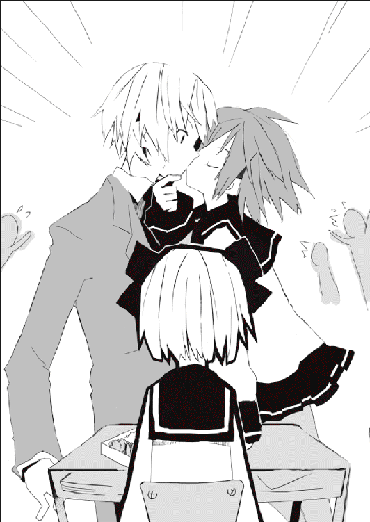
...............。
...........................？
グリコは賢木の頭を両手で固定してその唇を奪っている。ありていに言うとキスしている。昼休みの教室の中心で。クラスの全員が注目する中。何を考えているのか、この眼球抉子という奇妙な転校生は転校二日目にして担当教師の唇を奪ったのである。しかもその担当教師の最愛の人──宇佐川鈴音の目の前で。これはもう彼女の目的がなんであれ、クラスメイトたちの目には鈴音に宣戦布告をする転校生の姿に見えただろう。というか確実にクラスメイトたちはそういう解釈をした。そもそもグリコの次の行動がまずかった。
がしゃん。
あろうことか。
グリコは賢木の食べかけの、鈴音の愛情がいっぱいつまった弁当を引っくり返し、その中身をぶちまけてしまったのである。続いて鈴音の目の前の鈴音の弁当も引っくり返し、なお悪いことに弁当の中身をその上靴でぐちゃぐちゃと踏み潰した。
そしてトドメがこの発言である。
「二度とこいつの弁当を食うな！」
これはもう。
なんですね、別の解釈をしろというほうが無理というものでしょう。グリコはそのまま踵を返して教室から颯爽と去り、残された賢木は呆然。鈴音は蒼白。そして携帯電話という最強の情報伝達媒体を持つ我らが高校生どもは、あるいは電話で、あるいはメールでその事件を即座に学校中に広めた。すなわち宇佐川鈴音にライバル登場！ 眼球抉子という名前のその女の子は転校二日目に賢木愚龍の唇を奪い、鈴音が作った賢木の弁当を引っくり返して「二度とこいつの弁当を食うな」発言。楽しいことになりそうだ。
これが──後々にまで語り継がれる『十一月十五日事件』の全てである。
静かな高校が前代未聞の騒々しさにしばし満たされた。
「──なかなか楽しい余興でしたねぇ」
男の裏声のような、女の低声のような、奇妙な魔性を漂わす声。
「なんのつもりだ──『蟲』」
不純物のない純真な声が、その奇妙な声を貫くように響く。
私立観音逆咲高等学校、一年Ｂ組その教室の前。叫び声やなんやらの騒々しさが少しだけ遮断された、しかしそれでも耳に煩わしい生徒たちの声が木霊する廊下。そこには二人の人物が立っている。どちらも人間の姿をしているが、どちらも人間ではなかった。一人は人間のようなカタチに作られた『蟲』。一人は過去に人間だった人間らしきもの──眼球抉子。二人の人外はざわざわと騒がしい廊下でなんの感情もなく向かい合っている。
『蟲』はセーラー服を着ていた。ボブカットの髪。人の好さそうな顔。どこにでもいるような、ありふれた外見の女の子である。しかしその目は紅く光っていた。
『蟲』は昆虫のように感情のない顔で奇妙な声を出す。
「確認ですねぇ。ただの確認。『あたしたち』には失敗が許されませんからねぇ。本当に宇佐川鈴音の林檎は彼女の魂に根を張っているのか、そこを確認しておく必要があると思ったのですよぅ。あたしたちが手段を選ばないのはあなたも知っているでしょう？」
「......死ねば魂は肉体を離れる。林檎は魂に宿るから──死んだら魂ごと奪ってやろう、か？ 残念ながら宇佐川鈴音の林檎はすでに魂の奥深くまで根を張っている。何をしようが殺せない。殺せないから魂も奪えない。それはすでにグリコが確認した」
「でも『我々』は確認してませんからねぇ。あたしたちは、自分たちのこと以外は信用しないんですよぅ。そもそもあなたの発言なんか信じられませんしねぇ」
『蟲』は不気味な音声で淡々と語る。彼らに個体はない。個体はないから感情もない。
群れをなす端末。それが蟲だ。
グリコは怒りを全身に充満させてキッと『蟲』を睨んだ。
「手段を選ばないにも程がある──おまえは、賢木愚龍まで殺そうとしただろう？」
「どちらの弁当を宇佐川鈴音が食べるかわかりませんでしたからねぇ。ひとまずどちらの弁当箱にも『毒』を混入しておきました。まぁ、仕方のない犠牲というものですよぅ。我々『蟲』は手段を選ばない。ロマンチストのあなたとは違いますからねぇ。林檎を奪うことができれば、誰が泣こうが誰が死のうが知ったことではありません」
ギリ、とグリコは歯軋りをして吐き捨てる。
「だからグリコはおまえらが嫌いなんだ」
「ええ、好かれたいとは思っておりません」
二人の人外は一触即発の緊張感を放つ。その余波で廊下の窓ガラスがびりびりと震えた。
グリコは腕を組んで、『蟲』を真っ直ぐに睨みつけた。
「しかし失敗だったな。宇佐川鈴音はすでに食欲を失っている。弁当に毒を仕込んでもまるで意味はないぞ。賢木愚龍が死ぬだけだ。その賢木にしても──グリコがいるかぎり、決して死なせはしない。おまえらの思う通りにさせてたまるものか」
くく、と『蟲』は笑った。
感情のない『蟲』が笑う理由は唯一──挑発。
「あなたが賢木の口から直接毒素を排除したときは驚きましたねぇ。だんだんと芸達者になっていくじゃないですかぁ。いったいどこで覚えたのです？」
「うるさいな。おかげでクラスの連中に不必要に騒がれてしまった。他に方法がなかったとはいえ──どうしてこう、グリコばかりがいつでも貧乏クジなんだ」
「日頃の行いが悪いからですよぅ」
「そうだろうな」
グリコは瞑目して、どこか儚そうに、虚空を見つめてつぶやいた。
「グリコは神様に嫌われているからな」
そしてスカートのポケットからスプーンを取りだし、目にも止まらぬ敏捷な動作でそれを『蟲』に投擲した。女子高性の姿をした『蟲』の眼球にスプーンが深々と突き刺さる。スプーンは勢いを殺されず凄まじい破壊力で彼女の眼球に脳味噌に潜り込み、なんと頭蓋骨を貫通して後頭部にまで達した。人間の所業ではない。『蟲』は最後に小さく笑ってぐらりと背後に傾く。そして廊下に倒れる直前に、空気に分解されて消えた。
血まみれのスプーンがコトリと落ちる。
「......報われないことはわかっている。嫌われることにも慣れている」
グリコはそして午後の授業をサボることに決めて昼寝をしようと屋上に向かった。
その日の放課後のことである。どことなく呆然としながら、ふらりふらりと頼りない歩調で宇佐川鈴音は帰路についていた。考えるのは昼のこと。グリコが賢木愚龍にキスをして、彼にもう鈴音の弁当を食べるなと言い放ったあの事件。なんだろう、胸がざわざわとした。なんだろうこの不安な気分は。なんで気持ち悪いんだろう。
「なんで......」
なんで、グリコは賢木にキスをしたのだろう。何か理由があったのか。どんな理由があればそんなことをするのだろうと笑う。なんで、自分は不愉快な気持ちなんだろう。賢木が他の人とキスをした、その光景を見ただけで、どうしてこんなに嫌な気持ちになるのか。
「嫌だな......」
自分がグリコに嫉妬していることに気づいて、鈴音は軽く自己嫌悪した。大切なものを傷つけられたような感じ、というのか、初体験の感情なので、うまく言葉に表せない。いちばん近い表現はだから『嫉妬』なのだと思う。鈴音は賢木が好きである。好きな人が他の女の子とキスをしている場面を見るのは、つらい、つらかった。ショックで、しばらく賢木と口もきけないくらいだった。
別に賢木が心変わりをしたわけじゃない、自分が嫌われたわけでもない、だけどこんなにも心は落ちこんだ。理不尽に怒っている自分を自覚して鈴音は鬱々と思い悩む。色々と考えたけど、結局、今の自分の嫌な気持ちは『自分が楽しみにとっておいたお菓子を誰かに食べられちゃった気分』みたいな、そんなようなものなのだろうと思う。鈴音は賢木と一度しかキスをしていない。賢木の誕生日に一度だけ。それが二人の絆になると思っていた。他の誰にも許されていないこと、自分だけが、賢木とキスをしたのだという事実。だけど絆は複製された。グリコは鈴音の目の前で、賢木にキスをした。
「駄目だな......」
泣きそうだった。泣いてしまいそうだった。自分はとても弱い存在なのだと自覚する。こんなことで、こんなことだけで、揺れてしまうほど弱い人間なのだ。体は不死身になったのかもしれないけれど、心は依然へろへろで、弱いまま。情けない。
あんまり深く思い悩むと潰れてしまいそうだったので、鈴音は考えることをやめた。今日は微妙に顔を合わせづらくて賢木を避けてしまったけど、帰ったらメールでもして、明日は笑顔で会おう。そう決めた。決めるとちょっとだけ楽な気分になった。
騒がしい商店街を抜けて凸凹した道を歩く。畑でもない駐車場でもない微妙な空き地がそこここにある。雑草ばかり生えていて、いつでも人気がない。鈴音は慣れるまでは迷いっぱなしだった変わらない風景をぼんやりと眺めながら、とりとめもなく昔のこととか、未来のこととかを考えていた。
「もし。もし、そこのお嬢さん」
声。声を振り返ると、この間まで何もなかったはずの空き地に奇妙な出店があった。出店というか露店というかビニールシートに幕を張っただけの、テントみたいなものである。紫色の奇妙なテントの中にはこれまた怪しげな、水晶玉を前にしたローブをまとった人物が座っていた。人物の正面には『占い。一○○円。』とプラカードが立てかけてある。
「占い......」
思わず立ち止まり、鈴音はその不気味な出店に視線を釘づけにした。
朝、学校へ行くときはこんな怪しげな出店、なかったと思ったけど。
謎の占い師はザバリと手を広げ男女の判別がしにくい声で喋った。
「そう、占い。天運凶運命運占いから相性占いまで、なんでも占っちゃいますよぅ。お嬢さんくらいの年齢だと一二星宮や血液型占いなんかがわかりやすいでしょうかねぇ。他にもタロット占いトランプ占い花占い、変わったところで水流占いとか、人相手相服相家相も見ます。名前の画数なんかも教えてくだされば運勢を占っちゃいますよぅ」
いかがいたしましょう──と、不思議な占い師は一方的にまくしたてた。よっぽど暇だったのだろうか、いやに饒舌である。鈴音は一○○円ならいいか、無視するのも可哀想だしと思って、警戒心もなく中に入った。幕の中は奇妙な光でぼんやりと満たされていた。
占い師は鈴音をまず注視し、それから大きな水晶玉を覗きこんで言った。
「おやおや、これはいけませんねぇ」
「.........？」
まだ何も言っていないのに、と鈴音は不思議に思う。占い師はいけませんねぇいけませんねぇと楽しそうに言って、水晶玉にザバリと手をかざした。
「これは大変ですねぇ、大変ですねぇ。宇佐川鈴音さん、あなたの運勢は本当に救いようがありません。地獄のような凶運ですねぇ。星の巡りが──悪い」
「名前──」
名乗ったか。いや、名乗っていない。
占い師は鈴音の動揺に気づかぬように淡々と言葉を続ける。
「人生なんざ星のようなものでしょう。くすんだり光ったり。大きかったり小さかったり。色々ですねぇ。そこで不幸なのは、大きな星の重力に引きつけられてその星に衝突してしまう小さな星。衝突すれば砕けますねぇ。あとには欠片が残るばかり」
占い師はフードに隠れた瞳をこちらに向けた。奇妙に──紅い。
「近づいちゃいけない大きな存在ってのはあるんですねぇ。そのあまりの大きさに小さな星は押し潰されて、砕けてしまう。星の巡りが悪いんですねぇ。大きな存在になんか近づかなければ良かったのに。重力というのは恐ろしいですねぇ、そうして砕けていく星はことのほか多い。ちゃんと寿命まで生きれば──綺麗に輝き死んでいけるのに」
「そ」
鈴音は立ったまま、胡座をかいている占い師を見つめてつぶやいた。
「それは──」
「そう、例え話なんかじゃない。あなたの話なんですねぇ」
紫色のローブをまとった奇妙な占い師は、男のような女のような不気味な声で言った。
「近づかなければ。手を触れなければ。もっと綺麗に死ねたのにねぇ」
鈴音は目の前にいるこの占い師がとてもやばい存在だと気づいていたが、しかし、訊いておきたかった。全てを見透かしたようなこの人物に確かめておきたかった。
「大きな星って、先生のこと？ 小さな星って、あたしのこと？ あたしは──先生に近づいちゃいけなかったの？」
泣くような声で問いかける鈴音に、占い師は口を半月の形にして笑った。
「ちょっと勘違いがあるようですねぇ」
大きな存在というのは──。
「エデンの林檎に決まってるでしょう」
声は背後から聞こえた。
ゆっくりと振り返ると、紅い目をした人物がおよそ一○人ほど立っていた。
それは異様な光景だった。感情の欠けた昆虫のような顔で立つ人物が一○人ほど、出店の幕の向こう、鈴音の背後にいつのまにやら並んでいたのだ。その人物たちに共通点はほとんどなかった。子供も、大人もいた。腰の曲がったおばあちゃんもいた。買い物帰りのお母さんとか、制服姿の高校生とか、まるで節操がなく、彼らの全てが紅い瞳をしていなければとても同じ目的を持つ集団だとは思えなかっただろう。
鈴音は小さく悲鳴をあげて、後ずさった。怖い。なんだこの人たち。鈴音は賢木に『蟲』と名乗る奇妙な占い師との邂逅を聞かされていなかったし、彼女にとってこれは初めて出合う怪異だった。鈴音もそして自分の日常が狂っていることを知った。ここは昨日まで自分が生きていたあの平穏な世界ではない。不可思議な論理がまかり通った、理解不能の異世界なのだ。そんな世界で果たして自分が何をできるだろう。
震える鈴音の背後で、占い師が淡々とした声をあげた。
「抵抗しても無駄だと思いますねぇ。僕たち『蟲』は人間以上の力を持っちゃいませんが、決して人間以下というわけでもありません。多勢に無勢ですねぇ」
「あたしを──どうする気？」
「ひとまず死んでみてください」
全く同じ声で──正面の、サラリーマンの姿をした『蟲』が答えた。その返答の残酷な内容に鈴音は愕然とする。殺される。殺される。恐怖が加速する。
「考え得るかぎりの方法でこれからあなた、宇佐川鈴音を殺害します。絞殺。撲殺。毒殺。刺殺銃殺失血死、溺死に焼死なんかも試してみましょうねぇ。それでもあなたが死ななければ──他の方法を考えましょう。まずは確認作業からというわけです」
宇佐川鈴音が最初に考えたのは、賢木に助けを求めよう、ということだった。賢木の電話番号は登録してあるので連絡するまで三○秒もいらない。
しかし、三○秒も目の前の連中が自分を見逃してくれるとは思えなかった。
鈴音の思考を読んだかのように、占い師の『蟲』が酷薄な声をあげた。
「助けなんてものは呼ばせませんよ。それに──賢木愚龍、彼がこっそりつけていたあなたへの警護、彼らもすでに他の『蟲』たちが始末しているはずです。完全に、ありとあらゆる意味で、あなたに助けは、救いはありません。可哀想な話ですが──」
圧倒的な恐怖。絶望。鈴音は悲鳴をあげた。
そうして叫ぶ彼女の、華奢な首筋にサラリーマンの『蟲』が手をかける。足はすくんで動かなかった。怖い。鈴音の白い肌に武骨な指が食いこんで。圧迫、圧迫、苦しい。
「まずは絞殺です。おや、痛覚はまだあるようですね。運が悪いことです......」
どれかの『蟲』がそう言った。
「たくさん苦しむことになりますねぇ」
ぎりぎりぎり、と、信じられない強さで首が絞められる。苦しい、なんてものじゃない──痛い。苦痛。首が千切れそうだ。鈴音は抵抗もできずただ苦しんだ。何も考えられない。ぐう、ぐう、と喉から空気が漏れて嫌な音を出した。
「......それもまた良し。罪を悔やんで死んでください」
罪？
罪を──犯したのだろうか。
だからこんなに苦しんで、こんなに理不尽に、殺されなくてはいけないのだろうか。
ならば──その罪とは、何？
明滅する。眩暈がする。意識もあるのかないのか。首が軋む音。苦痛。苦しい。
賢木、愚龍。
宇佐川鈴音はなんとなく、賢木愚龍のことを考えている。彼のことを最後に思い浮かべてそれで死んでいこうと思った。鈴音の命は彼のためにある。だから彼に想いを捧げて──それで最後は死んでいこうとそれだけを決めていた。だから。
閃光。
ちかり。と、煌く閃光が鈴音の首を絞めていた『蟲』の後頭部に突き刺さる。その閃光は『蟲』の生命活動を停止させるには充分な深さまでめりこんで、紫色の奇妙なテントに鮮血を撒き散らした。瞬間、木っ端微塵になるように『蟲』の存在が消滅する。唐突に解放されて、ふらりと揺らめくと鈴音はその場にへたりこんで激しく咳こんだ。ごふりごふりという自分の喉から出ているとはとても思えない酷い咳の音。涎を拭い、涙を流したまま、鈴音は何が起きたのだと顔を上げて周囲を見る。そんな彼女の眼前。
ころりと。
血まみれのスプーンが、落ちた。
『蟲』を抹殺し鈴音を救った閃光の正体が、落ちた。
──スプーン。
「......下衆どもが。宇佐川鈴音を殺すことに意味はないと何度言わせる？」
『蟲』が一斉に声の方向を振り返った。鈴音も見た。空き地の入り口。
眼球抉子が立っていた。
何か物凄く不機嫌そうな仏頂面。寝癖がついてさらにめちゃくちゃなオオカミヘア。セーラー服が汚れているところを見るとどこかで昼寝でもしていたものか。銃口の瞳。手にはスプーン。一年Ｂ組出席番号一一番眼球抉子は純真な声で威風堂々と言って放った。
「油断も隙もないな。おちおち昼寝もできやしない。せっかくいい気分で眠っていたのに──これだ、おまえら、覚悟はできてるんだろうな。まとめて眼球えぐっちゃうぞ」
言葉と同時に。
しゅぱっ。
と。
グリコの右手がブレた──と思ったら、彼女の右手に握られていた三本のスプーンは全て立ち尽くす『蟲』の眼球に潜り込み、瞬間、さきほどと同じく絶命した『蟲』たちは爆散して消えた。風船に針を突き刺したみたいだと鈴音はぼんやりと思った。
思っているうちにも鈴音の首に残された痣とか、痛みとか、そういったものがするすると巻き戻すように再生していく。『蟲』はそれを確認すると同時に舌打ちした。
「本当に──死にませんねぇ。これはまた面倒臭い」
「スプーンがなくなった」
『蟲』の言葉を無視して、グリコは小さくつぶやき、とても冷酷な顔をした。
「......というわけで、ここからは肉弾戦だ。スプーンと違って拳じゃ一撃で死ねないからな、けっこう苦しいし、痛いぞ、それが嫌ならとっとと尻尾を巻いて去れ、『蟲』ども」
グリコの言葉にはたっぷりと他者を震撼させる威圧感が含まれていた。絶対的な自信と、それを裏付ける強烈な殺気。鈴音は思わずびくりと背筋を緊張させた。
「残念ながら──」
しかし『蟲』たちは全く怯まない。
「──痛みも、苦しみも、我々を止める理由にはならないんですねぇ」
「理解している。では──殲滅だ」
そしてグリコは地を駆けた。
鈴音は怖くなって、ぎゅっと目を瞑った。
銭湯から帰って、ほかほかした体のままアパートの自室に帰りついた宇佐川鈴音は、タオルと脱いだ衣服を部屋の前に置いてある洗濯機に放りこんだ。前にこの部屋を使っていた人が置いていったもので、時々壊れるけれどもまだまだ現役で働いている。その洗濯機の下に隠しておいた鍵で扉を開ける。きい、と扉が軋んで開く。室内は真っ暗で、もちろん誰もいない。鈴音は部屋の照明を点けてほうと嘆息した。銭湯の行き帰りでまた襲われたらどうしようと思っていたのだ。無意識に首筋をなぞる。痛みはすでになかった。
「............」
鈴音はしばらく途方もない儚さを感じて立ち尽くしていたが、首を振り、コタツを部屋の隅にどかすと押し入れから布団を引っぱりだした。そして敷く。マクラも置く。それからコタツの上に置きっぱなしだったケイタイを手に取り、現在時刻確認。ＰＭ一○時二分。ちなみにこのケイタイは賢木が買ってくれたもので、鈴音は電話料金を払っていない。だからなるべく使わないようにしているのだが、今日みたいに儚い気分のときは賢木に電話をかけたくなる。鈴音はしばらく電話をしようかやめとこうかとケイタイを見つめたまま迷っていた。あまり遅い時間に電話をするのは気がひけてしまう。
そうこうしていると、こんな時間にインターフォンが鳴った。ゴウン、という音。鈴音はびくりとして扉を見つめる。ちなみにこのインターフォンも前の住人が設置したもので、他の部屋にはついていない。というか必要がない。ノックをすれば聞こえる。
誰だろう、と思った。
昼間の惨劇を思いだして鈴音は震える。不気味な占い師。首を絞めてくる男。無表情のまま彼らを殺した眼球抉子。死んだ瞬間に破裂して消えた『蟲』と呼ばれる紅い目の人間たち。何がなんだかわからなかったし、あまりわかりたくないとも思う。占い師の言葉が奇妙に木霊する。触れてはいけないものはある。近づいてはいけないものはある。
ゴンゴン、とノックの音。鈴音はそろりと立ちあがって、誰ですかと呼びかけた。もしかしたら隣の部屋の自称音楽家がまた米をもらいにきたのかもしれない。
するとカチャリと扉が開いた。そういえば鍵はかけていなかった。
扉を開いて、そこに無言で立っていたのは。
「グリコ......ちゃん」
「『ちゃん』はいらない」
刺すような口調で言って、眼球抉子は不機嫌そうな渋面を作った。
鈴音はちょっと予想していなかった相手の登場に戸惑いながらも、今日、彼女に助けてもらったことを思いだし、警戒することはないかと表情を和らげた。
「どうしたの、こんな時間に」
「外は寒い」
「え」
「泊まらせてくれ」
「......え、え？」
一方的かつ理不尽な台詞に鈴音が返答できないのをいいことに、グリコはずかずかと部屋に入りこむと汚れた靴を脱いだ。そして扉を閉めて畳にちょこんと座る。
鈴音は状況が理解できていない。
「......えーと。あの。グリコちゃん、どういうこと？」
「............」
グリコはしばらく考えるような顔をしていたが、やがて嘆息し、無表情のままコリコリと頬をかいて純真な声で説明した。
「うん、グリコは嘘をつくのが苦手だから本当のことを言う。おまえを守りにきた、宇佐川鈴音。『蟲』はどうやらおまえの林檎を狙っている。それに──よくわからないが、他の目的もあるようだ。数が多い。あんまり不穏なので心配になった。だからおまえを監視する意味と守る意味、両方の意味でこの家に泊まることが賢いように思えた。だから泊まる。目障りなようなら無視してくれて構わない。勝手に泊まる」
本当に勝手だ。
鈴音はこちらを見つめてくるグリコになんだか毒気を抜かれた気分になって、曖昧に微笑んだ。よくわからないが、何を言っても無駄そうだ。
「最初の『外は寒い』っていうのは？」
「それを口実に泊まろうと思った。でも駄目だな、嘘は苦手だ。本当はちっとも寒くない。グリコはすでに感覚が麻痺している。南極で寝ても多分死なないし寒さも感じない。本当のことを喋るのは──ちょっと、照れくさかったから」
確かに、『あなたを守るためにここに来ました』というのはグリコのキャラじゃないだろう。鈴音はなんとなくそう思う。思って、微笑ましくなってしまった。
くすくすと笑う鈴音に、きょとんとした顔をするグリコ。
「何を笑っている......まぁいい、迷惑だと思うが我慢してくれ。『蟲』の目的を看破してそれを撲滅したら出ていく。......ん？」
グリコはそこまで一気に語って、不意に、部屋の隅っこに視線を投げる。そこには柔らかな毛布に包まれた大きな卵が置いてあった。幾何学的な模様のはしった、造りものめいた卵である。
鈴音は黙りこんでしまったグリコに恐る恐る問いかける。
「あの、どうしたのグリコちゃん」
「......いや」
グリコは特徴的なオオカミヘアをぐしぐしと混ぜた。
「珍しいな。夢界獣の卵か。まぁ──危険はないだろうな、害獣ではないし」
よくわからないことを言って、勝手に部屋を歩きまわる。
「とにかく──『蟲』の連中はしつこいからな、解決には時間がかかるだろう、その間はこの押し入れにでも居候させてもらう」
よいしょ、と押し入れの襖を開いて中で横になってしまうグリコ。そんな猫型ロボットじゃあるまいし。いくらなんでもそんな場所に女の子を寝かせるわけにはいかない。
鈴音はがんばって説得して、遠慮するグリコを押し入れから引きずりだして二人で一緒に布団で寝ようと主張した。この部屋には布団が一組しかない。鈴音はグリコにマクラを譲って自分はクッションを頭にして眠ることにした。グリコも最初は渋っていたが、やがて頑固な鈴音に諦めた顔をして布団に潜り込み、すぐにすうすうと穏やかな寝息をたて始めてしまった。
まだ、何がなんだかわからないし、彼女は一度、自分を殺したのだという。それに今日の昼間には鈴音の最も大切な人の唇を奪った。それでも、なんとなく、鈴音は彼女が悪い存在ではないのだろうと思った。子供のようにすやすやと眠るグリコの髪を優しく撫でて、鈴音もどこか安心した気持ちになった。
それからちょっと思いついて、マクラのそばに置いてあったケイタイをいじくり鈴音は賢木にメールを送った。送ると今度こそ目蓋を閉じて、グリコの温かさを感じながら静かに眠りに落ちた。
ＦＲＯＭ ★ うさりん
ＴＯ ★ 先生
題名 ★ みことのり
内容 ★ こんな時間にすみません。うさりんです。先生、今日はとても怖いことがありました。ムシというよくわからない紅い目の人たちが襲ってきたのです。あたしは首を絞められて、殺されそうになりました。これで死にそうになったのも三回目です。運がいいのか悪いのか、こんなにたくさん死にかけているのにまだ生きています。生きているからには生きていかなきゃいけません、先生、あたし、がんばって生きますね。
昼休みのこと、グリコちゃんは多分なにか考えがあってしたことだと思うんです。クラスのみんなはどう思ってるか知りませんが、グリコちゃんは悪意があってあんなことをするような子じゃないと思うんです。だから明日にでもグリコちゃんに本当のことを尋ねてみたいと思います。先生はあまりグリコちゃんには話しかけるなと言ってましたが、あたしは話しかけたいのです。昔のあたしに似ている彼女に。
先生、何があたしたちのまわりで起きているのかはわかりません。何かとんでもないインボーの香りがするような気もします。だけど、あたしは絶望しません。先生がいるからです。先生がいるかぎりあたしは希望を持ち続けます。信頼と約束。好きです。
ついしん。うちに家族が増えました。猫とか犬ではありません。家族です。誰だと思いますか、先生。明日にでも教えますが、きっと聞けば驚くと思いますよ。
それでは。
千年前に死んだ女の子
原罪。人類が犯した最初の罪。神への背徳。原始の人類であるアダムとイヴが犯してしまったその罪は未だ神から許されず、子孫である我々も罪を背負い苦難の人生を生きている。苦しむことこそ人類の贖罪。ぜんぶ先祖が悪いのだ。その苦しみは誰であろうが、男であろうが女であろうが、老人であろうが子供であろうが、健康であろうが病気であろうが、もちろん富んでいようが貧していようが無差別に与えられるらしいので、『その苦しみから救われるためには宗教を信じなさい』と宗教家は続けるんだな。他人の不安を煽って宗教を無理強いするのは立派な悪徳商法だ。ネガティブオプションという。別に宗教を信じようが救われるのは死んだあとなので生きているうちに信じる必要はない。
「先生、その原罪っていうのは具体的にはどういうものだったんですか？」
うむ。ちゃんとわからないことは質問して偉いぞ閣下。みんなも見習うように。──そうだな、簡単に説明するとだ、神様がいたんだな、人類を始め数多の生物を創造した偉大なる存在が。その神様が最後に創造したのが人間、ちなみに原材料は泥と肋骨だ。神様はその人間──アダムとイヴに仕事を与えた。すなわちエデンの園と名づけられた土地を耕し、畑から作物を収穫し侵入者は排除せよとな。そしてさらに彼らを戒めた、エデンの園に生えているどの果物も食べていいが、中央に生えている林檎だけは口にしてはならない、食えば死ぬ、と。
「毒だったの？」
毒じゃなかったんだな。ほら『付子』っていう狂言を知っているか？ 寺の和尚さんが小坊主どもに何かが入った瓶を見せて、このなかには付子という毒が入ってるから絶対に食べてはならないと戒めるアレだ。実際に瓶の中には付子なんかじゃなく和尚さんとっておきの甘い飴が入っていたんだな。小坊主どもはトンチきかせてその飴を食べてしまい、それを知った和尚さんはチクショーと臍を噛んで悔しがる──という。
「笑い話？」
笑い話だ。狂言ってのは笑い話だからな。原罪の話も笑い話と言ったら怒られるかもしれないが、ストーリーの基本は同じで、エデンの園の中央に生えていた林檎は毒なんかじゃなかった。それは神にしか食べることを許されない禁断の果実だったのだ。善悪の区別をつける果実だとか知恵を授ける果実だとか不老不死を与えてくれる果実だとか色々と諸説あるが......まぁ、とにかく、その神にしか食べることを許されない果実をな、アダムとイヴは食べてしまった。それで怒った神様によりエデンの園を追放されてしまう──。これがまさに原罪だ。窃盗だな。約束を破ったんだから偽証罪かもしれない。とにかくアダムとイヴは神への裏切りという究極の罪を犯し、その罪は今でも許されていない、と──。そこまで神様が大切にしてた『林檎』ってのはいったいなんだったのかな。興味は尽きないが、それを考えていると授業が進まないので今日は割愛してしまうぞ。
一年Ｂ組の四時間目の授業は倫理だということで、あらゆる教科の担当をしている賢木愚龍もユダヤ教の成立について適当に弁じていた。賢木は宇佐川鈴音と一時でも多く同じ時間を過ごしたいと願っており、国語だろうが数学だろうが一年Ｂ組の全ての教科の担当をこなしていた。賢木がそういう無茶な横車を押せるのは偏に家柄が理由で、平等主義だが資本主義の現代日本、家柄によって差別はされないがもちろん経済力による格差はあるので、賢木財閥に楯突いてまで平等を叫ぶ人間などいないのだった。日本の国家予算を軽く超える資本力を持つ賢木財閥──賢木愚龍はその次期当主、しかも権力を行使することにまるで躊躇いのない人格をしていた。さらにこの高校、私立観音逆咲高等学校の経営者は賢木財閥。つまり企業で考えると賢木は社長の息子で、建前はなんであれ、実際問題そんな存在に逆らおうとするような馬鹿はこの学校にいなかった。
教師でも、生徒でも、それは同じである。
しかし。
「......おい、寝るな、そこの残虐な名前をした女子」
賢木は教科書を教壇にどさりと置くと、教室の中央で賢木を挑発するかのように寝息までたてて眠りこけている人物に声をかけた。腕を枕にぐっすり寝ている。ちなみに一時間目からずっとこんな感じだった。授業中に生徒に眠られたことなどない賢木のプライドは刺激されており、あまり忍耐力が強くない賢木の我慢はすでに限界だった。
教室がちょっと静かになる。例の十一月十五日事件から生徒たちにとって、賢木愚龍と現在睡眠中のその人物──眼球抉子の関係は興味の的だった。事件のない平凡な学校の、平穏な時間に紛れこんだ騒動の種、眼球抉子。彼女は、この超絶無比の究極教師に次はいったいどんなことをするのか？
眼球抉子──グリコの、隣席である宇佐川鈴音が彼女の頭をつんつんと突く。でたらめに伸ばしたオオカミヘア。机に突っ伏したグリコの姿は得体の知れない髪の毛のカタマリだった。彼女と好対象にさっぱりとした鈴音。肩にも届かぬショートカット。二人はなんでだか最近仲がいいらしく、グリコも鈴音の言うことならば多少は聞く耳を持った。
「グリコちゃん、グリコちゃん、起きて」
鈴のような、ちょっとだけ金属質な、透き通った声音。
宇佐川鈴音の綺麗な声音。
「起きたほうがいいよ、先生ちょっと怒ってるみたいだから」
「うるさいな」
動かず、グリコはそのままの姿勢で突き放すように応えた。
「グリコは眠りたいときに眠る。教師が怒ろうが地球が滅ぼうが関係ない。眠ることだけがグリコに許された至福の瞬間なんだ。大丈夫。グリコは眠っていても周囲の状況を把握できるという技術を会得している。この前グリコが昼寝中だったにも拘わらず、『蟲』に襲われているおまえに気づけたのはその技術を会得していたからだ」
「............」
「......だから、グリコは授業中に眠っていてもなんら問題はない。というかあの四字熟語みたいな名前をした教師は嫌いだ。......グリコの名前を馬鹿にしやがって。顔も見たくない。だからグリコはずっと眠っているんだ。文句でもあるのか」
「文句はあるぞ。教師の話を聞かずに眠るのはとても失礼だ」
がつん、といつのまにやらそばにいた賢木は容赦なくグリコの脳天に拳を落とした。手加減も何もしていない。グリコもさすがに頭を押さえて起きると賢木を睨みつけた。
「何をする。殴ったな。グリコは痛みを感じないけど殴られると脳が揺れるんだ。眠気が飛んでしまったじゃないか。どうしてくれる、教師」
「賢木だ。とにかく、私の授業中に眠ることは許さん」
淡々とした調子で賢木は言い放った。グリコはむっすりと仏頂面になる。
「謝りもしない──グリコは怒ったぞ、覚えていろよ、サカキ」
いつか眼球えぐっちゃうぞとグリコは小さくつぶやいた。
十一月二十六日金曜日の昼休み、鈴音が作ってくれた弁当を食べていた賢木は、目の前に座り何かそわそわとしている鈴音に気づいて声をかけた。
「閣下、どうした、腹の調子でも悪いのか」
言われて、鈴音はうつむいていた顔を上げると賢木をじっと見つめた。ちなみに彼女は食欲がないとかで弁当を食べていない。なんでももう一○日間ほど何も食べていないらしく、医者にも診せたが異常はありませんと斬って捨てられてしまった。それに、何も食べないでも鈴音はまるで痩せないし、賢木の心配をよそにいつもと変わらぬ元気な生活を続けている。完全に理解不能な現象だが、現代医学にも解明できないことが賢木にわかるわけもない。超常現象だと割りきって思考を放棄するしかない。
「............」
鈴音はふっと視線をそらし、珍しくちょっと言いにくそうな素振りを見せた。
賢木は不思議になる。
「どうした？」
「あのっ」
鈴音は、賢木が好きな綺麗な声音で恐る恐る告げた。
「先生、グリコちゃんのこと嫌い？」
「.........？」
どういう意味の質問だろう。どうとでも解釈できそうな質問だった。しかし賢木は鈴音の質問には正直に答えることにしているので、特に迷いもなく本音を彼女に告げた。
「好きでも嫌いでもないが......事実、警戒はしているな。未だに正体不明だし、あらゆる意味で人間から遠すぎる。目的もはっきりしないし、一度うさりん閣下に危害を加えたことから考えて気を許すことはできない。人格的にも自己中心的で私を馬鹿にしているとしか思えんし、正直なところむかつく。絶対に仲良くはできそうにもないと思う」
「そう......」
鈴音は、ちょっと困ったような顔をした。
「じゃあ先生は、グリコちゃんがあたしを騙そうとして、この学校に来たと言うんだね。目的のために演技をしてあたしをたぶらかそうとしてる、って──」
「そこまで言ってはいないが」
「そこまで言ってるよ、先生」
鈴音は珍しく、本当に珍しく声を荒げた。
「グリコちゃんは不器用なだけだよ。本当は先生とだって仲良くしたいと思ってるよ。あたしを殺したことにも、お弁当を引っくり返したことにも、きっとあたしたちにはわかんないどうしようもない理由があったんだ。グリコちゃんはあたしたちを不幸にしようだなんて思っていないよ。一緒に暮らすとわかるんだ。グリコちゃんは悪い子じゃないよ」
「随分と肩を持つな、閣下」
「先生が疑いすぎなんだよ！」
鈴音は大声をあげた。究極的に珍しいことだった。彼女はどうやら怒っている。賢木に怒鳴りつけるくらい、怒っているのだ。賢木は動揺する。自分の何が彼女を怒らせているのかまるでわからない。自分はただ鈴音の安全を願っているだけなのに。それが彼女には伝わっていないのだろうか。いや、伝わっている、鈴音はそれほど愚かな女の子ではない。賢木の思考が正確に伝わっていてなお、彼女はこうして怒っているのだ。
鈴音はうつむいたままつぶやき続けた。
「先生があたしのことを心配してくれているのはわかる。とても嬉しいよ。申し訳ないくらい。だけど、それでも、そういうふうに──」
鈴音はそこで唐突に冷めたか、語気を緩めて額に手をやった。
「──あぁ、駄目だ、わけがわからない、あたし。......でも先生、お願いだから、グリコちゃんのことは疑わないで。あの子はきっともう、あたしに危害は加えないよ」
「どうして、そんなことが」
どうしてそんなことが断言できるというのだろう。どうしてそんなことが信用できるというのだろう。あいつは一度鈴音を殺したのだ。眼球を抉って殺したのだ。そんなおぞましい化け物を、どうして信じることができるだろう。
鈴音はしばらくうつむいたまま、何も言葉を口にしなかった。
やがてやはり顔を上げずに、小さな声でつぶやくのだ。
「先生、グリコちゃんは──」
とても哀しい声だった。
「──夜、泣くんだよ。悪夢にうなされて。生きていてごめんなさい殺して殺して、死にたいよもう嫌だよ殺して殺して殺して、って、物凄い声で叫んで、泣いて、朝まで苦しむんだ。グリコちゃんはそれに気づいていないみたいだけど、夜、そうして安らかに眠れないから、昼、太陽に守られて、グリコちゃんは眠っているんだと思う。......ねぇ先生、そんな可哀想な子が、あたしを殺そうと狙ってる悪魔だと思う？」
鈴音の肩は震えていた。泣いてはいなかったが、心はどうやら泣いていた。
賢木は沈痛な表情になり、それでも、グリコを信じることができずに言う。
「それすらも──演技だったら」
「あんな演技はできないよ」
あんな演技はできない、と鈴音は虚空に語りかけるように二度、つぶやいた。
「......喧嘩をするな、『蟲』が湧く」
凛、と、空気を貫くような、ざわめきを駆逐するような、混ざりもののない純真な声が教室に響いた。鈴音は声を振り向いた。賢木も鈴音の視線を追った。今までどこへ行っていたのか、グリコは教室の扉をガラリと開けて二人のところへ歩いてきた。
意味のわからないことをつぶやきながら。
「『蟲』はどこにでもいる。この教室にも──いる。あいつらは目的のためには手段を選ばない。だから隙など見せればすぐにそこを突いてくるぞ。喧嘩をするな。仲がいいのがおまえらの長所だろう、長所は長所のままにしておけ」
「喧嘩の原因は貴様なのだが」
「なに」
グリコが意外そうな顔をする。そして長い前髪を押しのけてその不思議な色の瞳で賢木をじっと見つめる。どうでもいいがこの女の子、セーラー服がまるで似合っていない。
「グリコが──だと。......あぁ、まだ弁当のことを気にしているのか。あれはおまえらの命を守るためには仕方がなかったことだ、許せ。というかこいつはあのとき死んでもよかったかもしれない。なんでこんなの助けたんだか。役に立たないのに」
ちなみに『こいつ』とか『こんなの』というのは賢木のことである。グリコは指まで差しているのでまず間違いはない。どうしてこうも賢木の神経を逆撫でするような発言しかできないのか。『役に立たない』などと言われたのは生まれて初めてである。
不機嫌になった賢木に気づいて鈴音が困ったような顔をする。
「グリコちゃん、なんでそういうこと言うかな。素直になればいいのに。グリコちゃんは先生とも仲良くしたいんでしょう。だったらそういうこと言っちゃ駄目だよ」
「ば──」
馬鹿を言うな、とグリコは反論しようとしたのだろう、しかしそれよりも早く、鈴音は聖母のような笑顔でグリコの発言を封殺してしまう。
「あたしはグリコちゃんが好きだよ」
自然な口調で言うのだ。
「仲良くしたいと思ってる。だから怖がらないで。あたしはあなたを傷つけたりしないよ。先生だってきっと同じ、グリコちゃんと仲良くしたいんだよ」
賢木は眉をしかめてぼやく。
「閣下、さすがにその発言は否定しておきたいんだが」
「先生の意地っぱり。似ているね、グリコちゃんと先生。どっちもすごく『いいひと』なのに、素直になれずに他人を遠ざける。それってとても哀しいよ。本当は二人とも仲良くできるはずなのに、意地をはって遠ざけて、互いが嫌い。哀しいね......」
やはり困ったような顔で、全てを見透かしたような口調で、鈴音は笑った。
「............」「............」
そんな彼女の発言に口をぱくぱくさせて、どのようにしてこの極楽な小娘に反論してやろうかという顔をする二人。その二人がそっくりな顔をしていることに気づいて、やっぱり似たもの同士だねと無敵の鈴音は和やかに笑った。
それは記憶。哀しい記憶。
......不幸になるのは、あんただけでいい。何度言われたかしれない。そうやお母ちゃん、不幸になるのはあたいだけで充分じゃ。疫病神も貧乏神もみんなあたいに取り憑けや。あたいの家族に手ぇ出すな。食らうならこのあたいを食らえ。どうせあたいは拾われっ子じゃ。食うに困りゃあすぐに捨てられる。
どうせいつしか死ぬ身なら、家族を守って死なせてや。
流行病がたいそう酷ぅ広がっとった年じゃけん、みんながみんなやつれてな、目とか窪ンなって暗ぅ顔しとった。ただでさえ食うのもやっとの田舎村じゃ、流行病は困る、あれは台風のように現れて、人間どもをすぐに倒して死後の世界につれていく。人が倒れりゃ畑も荒れる。貧しい村には死活問題じゃ。うちは健康なだけが取り柄の家族ばかりだったから、まるで他人事のように流行病の被害を見とったけど、悪い病に取り憑かれやすいあたいは狭い岩屋ン中放りこまれたわ。外に出るな。病気がうつる。もちろん優しさから出た言葉とは違う。お母ちゃんはあたいが病気に取り憑かれて、その病気が自分の家族に広がるのを恐れとったんじゃ。不幸になるのは、あんただけでいい。お母ちゃんはそう言った。あんただけ不幸になるのはいいけど、私らを巻きこんでくれるなや。
わかってる。お母ちゃん。あたいはそんなの承知しとう。家族はみんなあたいには優しくしてくれなかったけど、ちゃんと飯とか食わせてくれるし、寝床もあたいにくれたけん、それ以上を求めるのは罰当たりやとわかっとう。あたいは家族が好き。あたいのせいで家族が不幸になるならとても哀しいわ。卑屈なようやけど、それがあたいの本心じゃ。
岩屋はじめじめとしていた。黴だの腐った板の匂いだのがした。あたいは氷みたいな岩に座ってひたすら寒さと戦っとった。暗くて、自分の手すらもよう見えん。寒さを誤魔化すように膝を抱えて泣いた。心細かった。単純に暗闇が恐ろしかった。
どれだけそうしていたやろう。あたいは異変に気づいた。外が何やら騒々しくて馬鹿みたいに浮わついていた。叫ぶ声。怒鳴り声。壊れる音。なんやこれ。あたいは怖くなって板ン出入り口を叩いたわ。お父ちゃん。お母ちゃん。兄。みんな。どないしたん？
答えたのは不気味な、今まで聞いたこともなかった声やった。
──おやおや、どこにいるかと思ったら、こんな岩屋に幽閉されていたんですねぇ。
男のものとは違う、女のものでもない、他人を不安にさせるような声やった。
ガタンと、立てかけられた板があっさりと破られて、外の光で影になった誰かの立つ姿が見えた。あたいは身を強ばらせてちょっと後退したわ。そいでなんかに蹴躓いて体勢を崩した。するとそいつはあたいを両手で支えて笑ったんじゃ。
──さぁ、返してもらいましょうか。
と。そいつの瞳は紅く光った。どうやら人間じゃなかった。そいであたいはその化け物の肩越しに最悪の光景を見た。首を捻じ切られたお父ちゃん。腹に穴のあいたお母ちゃん。折り重なるようにして倒れている兄たち。みんな、死んでいた。あたいは叫んだ。
叫ぶあたいの声を無視して、そいつは不気味に黙っていた。
どうやらこいつはあたいを探していた。そいであたいを見つけるために、岩屋の前にたまたまいたんじゃろう家族をあっさりと殺しやった。探すのに邪魔だと言わんばかりに、なんて──外道。なんて──最悪な。最悪の外道はあたいを無表情のまま見つめていた。
──まずは確認といきましょうかねぇ。
と、意味のわからぬ言葉が響いた。
そいで泣き喚くあたいの喉を、そいつは押し潰したんじゃ。
視界が、暗くなった。
不幸になるのはあたいだけでいいのに。お父ちゃん、お母ちゃん、兄、ごめんな。
ぱちりと、目蓋を開く。視界いっぱいに大空が広がっていた。眩しくなって目を細め、無意識に首筋を撫でる。潰されたはずの喉。傷痕すらも残っていない。そんなもの、ずっと昔に消えてなくなってしまった。
「......夢、か」
つぶやいて、眼球抉子は私立観音逆咲高等学校の屋上で一人、ごろりと寝転んで、上空を通過する鳥とか飛行機を見ていた。ちょっと微睡んでいるうちに昔の夢を見ていたらしい。気が狂うほど遥か昔のまだグリコが人間だった時代の記憶。母がいて、父がいて、平凡な生活があった、千年も昔の記憶だ。ほとんど忘れて霞んでしまった記憶──。
つう、と視界を三羽の鳥が通過した。太陽を背にして黒い影にしか見えない。
グリコは過去の感傷に浸りながら、静かな口調でつぶやいた。
「鳥は、変わらない。今も昔も鳥のまま。人間はとても変わったけど、グリコは果たしてどうだろう──。何かあのころと変わったか。......それは変わったのだろう。昔は素直に笑えていた、大切なもの、幸せもたくさんあった。いつからグリコは置き忘れた。いつからグリコは喪っていたのか」
グリコはいつまで生きればいいのか──鳥を目で追いながらつぶやく。
三羽の鳥。蟲をついばみ生きる影の鳥たち。あの鳥こそが今のグリコだ。千年前からずっとそう。自分はすでに人間じゃないのだ。
「三羽の鳥も二羽まで落ちて、今ではグリコも一人ッきりだ。一人でもいいと思っていたし、できることなら鈴音は巻きこみたくない。だけど林檎は根を張っていた。グリコと同じ──手遅れだ。どう転んでも不幸になる。鳥になろうが、人と死のうが」
グリコはふらりと立ちあがり、遠くへ消えゆく鳥を見送った。
「......不幸になるのは、グリコだけでいいのに」
いつもの台詞をつぶやいて。
「あいつの泣き顔を見るのは──つらい、な」
グリコは胸に手をやった。
しかし自分は真実を告げなければならない。
報われないのはわかっている。嫌われるのにも慣れている。
郵便局で手紙の分別作業とか、倉庫の整理とかをしているうちにバイトの時間は終わって、宇佐川鈴音は他のみんなに挨拶し郵便局から去った。このバイトは単純作業だが慣れればとても楽しいし、他のみんなもわりと優しいので鈴音は気にいっていた。携帯電話で時刻を確認。午後の八時。空はもう暗い。鈴音は郵便局の裏に停めていた自転車にまたがって、白い息を吐きながら凸凹した道を走った。半端な時刻なので人の姿は少ない。商店街の店もほとんど営業を終えていた。それでもちらほらと人はいて、会社帰りなのだろうとても疲れた顔をしてよたよたと歩いていた。
以前は、バイトを終えた鈴音も彼らのように疲れ果てていた。だけど今の鈴音に疲労感は全くない。食欲はなく怪我は再生し疲労感すら失っている自分は、果たして人間なのだろうか。考えて、憂鬱になる。
賢木はどう思っているか知らないが、鈴音だってけっこう思い悩んでいるのだ。自分が何に巻きこまれているのか。自分はどうなってしまったのか。グリコはいったい何者なのか。考えているし、知りたいと思っている。決して諦めているわけではない。気楽に構えているわけでもない。鈴音は鈴音なりの真剣さで真相を突き止めようとしている。
しかしわからない。考えても考えても答えはでない。グリコや『蟲』の発言からできるかぎりで推測しようと思ったが、自分は想像力が欠けているのか、それとも単純に頭が悪いのか、まるでコレダと思う答えは浮かばず、鈴音はけっこう途方に暮れていた。
移動時間の一○分というのは考えごとをするには短すぎて、もやもやとした疑問をまとめることもできず鈴音は我が家に辿りついた。グリコはもう帰っているだろう。誰かが家で待っているというのはなんだか幸せなことである。
「ただいまー」
言いながら、扉を開いて玄関で靴を脱ぐ。ちゃらちゃらとしたファンシーな音楽が流れていると思ったら、不相応にでかいＴＶの前でグリコがファミコンをしていた。ゲームショップの処分品として売られていた三○○円のハードと、一つ一○○円のソフト、合計で四○○円程度の旧世代ゲームをグリコは真剣にやっていた。
ちなみにソフトは『オバケのＱ太郎』。
画面では可愛いオバＱがよたよたと歩いていた。やがて犬にぶつかって倒れ、ＧＡＭＥＯＶＥＲと表示される。グリコはどうやらゲームが下手なようだった。この前までゲームの存在自体を知らなかったんだからそれも当然なのだが。
グリコはすぐにコンティニューをして、鈴音を振り返りもせずに言った。
「今日も仕事か」
「うん、バイト」
鈴音は着ていたコートをハンガーにかけグリコの隣に座り、またもＴＶ画面で犬に殺されているオバＱを眺めた。いまいちグリコは操作方法をわかっていないらしい。
グリコは不機嫌そうだった。
「......全然つまらんぞ。犬に勝てない。だいたいこっちに一つも攻撃手段がないというのは間違っているだろう。どうやって先へ進めというんだ。鈴音、わかるか」
「......説明書だとＡボタンを二回押せば空を飛べて、Ｂボタンで透明になれるから、その二つを上手に使えば、あ、そうそう、それで避けて、あー、惜しい」
「............」
グリコはしばらく真剣な顔でがんばっていたが、どうにも下手なのでまるでうまくいかず、やがて諦めたか、ファミコンの電源を落として隣に座った鈴音を見つめた。
「鈴音、グリコは考えた」
「......何を？」
「もう、黙っているのも限界だろう」
グリコは純真な口調で言った。
「おまえは真実を知る勇気があるか？」
鈴音は押し黙っている。
「......真実を知れば、おそらくおまえは絶望する。哀しみ苦しみ自分の運命を呪うことになるだろう。それでもいいなら、語る。グリコはどうやら臆病だった。おまえの幸せを壊したくなかった。賢木との幸せをグリコの言葉で失わせたくなかった。しかしそんなのただの甘えだ、おまえは林檎を手に入れた、真実を知る権利がある。義務も──ある」
「............」
鈴音はグリコが真剣な表情をしているのを知った。おそらく彼女は自分を騙さない。本当のことを知りたいと言えばきっと教えてくれるだろう。しかし──怖い。理屈ではない恐ろしさがある。グリコの言葉で世界の平穏が崩れてしまうような──。
そんな気が、した。
鈴音は。
「教えて」
しかし迷いもせずに、答えた。
「どんなに残酷な真実でもいいよ。もうわけがわからないのは嫌なんだ。教えてグリコちゃん、真実ってのは、知らないで怖がるよりも知って哀しむほうがいいもの」
「おまえは──強いな」
グリコは小さく微笑んだ。極めて自然に、微笑んだ。
「グリコを信じてくれるか。どんなに酷い運命を告げようと、嘘をつけ騙すんじゃないなどと罵らず、信じて聞いてくれるか、鈴音」
「信じるよ」
「ありがとう──」
グリコは真剣な顔をした。
「──ならばグリコも信じよう。おまえが運命に打ち勝つことを」
人間は死ねば旅に出るのだという。花畑に行く者もいるという、船で川を渡る者もいるという、一本道をずっと歩いていく者もいるのだとか。その光景は脳が見せる幻影、大して神秘的でもない夢みたいなものだが、決まって、その夢には一本の大樹が現れる。
眼球抉子がまだヨノという名を名乗っていた時代（グリコは千年前、村を捨てたときにヨノという名前も捨てたのだとか）、川の魚を獲ろうとして苔むした岩に足を滑らせ、川に落下して滝壷に飲まれ、頭を強かにぶつけて死にかけたのだとか。そしてゴツゴツと岩ばかりがある道を歩く夢を見て、最後に彼女は果実の生った大樹を発見したらしい。
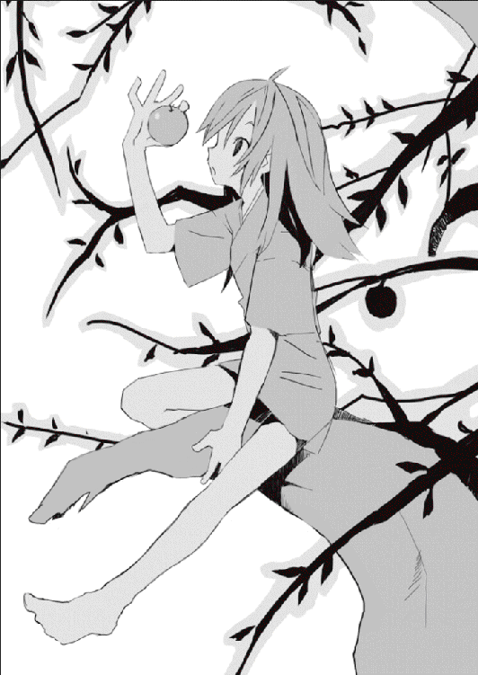
「はぁ、美味そうな果物じゃこと」
暗く荒んだ光景に馴染まないそれは美味しそうな林檎だったそうだ。
「誰のか知らんけど、もいでいっても怒られんやろ。お父ちゃん最近暑ぅてバテとるけんのぉ、果物でも食べて元気になってもらわんと」
そう決めて、魚の代わりに果物とは風流じゃとヨノは、猿のように大樹にのぼって低い場所にある林檎をもいだ。彼女はまだ自分が夢を見ていると気づいていなかった。現実の彼女は血まみれで滝壷に浮かび生と死の境を彷徨っているというに。
「うーん、見たこともない果物やのう、これ食えるんかな。ちょいと試しに食うてみよか、一個くらい構わへんやろ。ちょうどお腹は減っとったんじゃ」
がぶり、とヨノは、その紅く熟した禁断の果実にかぶりついた。美味しい。気づくとヨノは貪るようにその果実をたいらげていた。甘く、冷たく、今まで食べたどんな果物よりも美味しく思えたそうだ。これは大発見だ、家族みんなに持って帰ろとヨノは大いに喜んだ。そして手を伸ばし、もう四つほど林檎をもぎ取ろうとして──。
夢から覚めて、生き返った。
目を開けると、ざあざあと落下する滝が眼前で暴れていたそうだ。そして彼女は滝壷に木片のように浮かんでいた。ぷかり、ぷかり、揺れていた。
「夢......か」
ヨノはつぶやいて、激しい頭の痛みに目を白黒させた。幸い滝壷は足がつくほどの浅さだったので、特に苦労もせずヨノは陸に戻ることができた。
「そっか──あたい、魚獲ろうとして滑っちゃったのなぁ」
けっこうな量の血に驚きながら、ヨノは涙目でずぶ濡れの服をしぼった。
「それにしても──妙な夢を見たもんや。なんやったんやろか、あれ」
ヨノはしばらく考えていたが、やがて家へ帰り、いつもの日常へ戻ることにより不思議な夢もすぐに忘れた。彼女がその夢を思いだすのはもう五年も先のことになる。
その禁断の果実は『エデンの林檎』または単純に『林檎』と呼ばれている。正確には林檎ではないようだが似ているのでそう呼ばれている。その林檎を食べた者には不老不死が与えられ、頭が潰れようが心臓がなくなろうが決して死ぬことはない。食事をしないでも呼吸をしないでももちろん死ぬことはない。老いることもなく、林檎を食べた人間は永久的に生き続けなければならない。百年だろうが千年だろうがどれだけ時間が流れても、林檎を食べた人間は生の呪縛から逃れられない。そのことはグリコが千年も成長せず生き続けているという事実が証明している。
グリコ──ヨノは、幼いころに林檎を食べた。林檎はしかししばらくの間は人間に不老不死を与えず、完全に根を張るまでは林檎を食べた人間でも殺されれば死ぬらしい。実際、グリコはその可能性に賭けて宇佐川鈴音を殺そうとしたのだとか。無限に生きるということは死ぬよりもよほど苦しい。そんな苦しみを味わうくらいならせめて一瞬で殺してやろう。残酷な優しさ。やはりグリコはそういう悪くない理由があって鈴音を襲ったようだった。しかし彼女の目論みは失敗し、鈴音にはすでに手遅れなほど深く根が張られていた。 さすがのグリコにも殺すことができないほどに。
林檎が根を張るのは体ではなく魂である。だから体をどれだけ傷つけたとしても林檎を奪うことはできない。グリコは鈴音を殺し、彼女の林檎を奪うつもりだったと語った。林檎には因果を捻じ曲げ奇跡を起こす力がある。それは例えばグリコの戦闘能力だし、彼女がなんの問題もなく高校に紛れこむことができた理由だ。数が増えれば増えるほどその力も増すようで、グリコが超常の能力を持っているのは三つの林檎を持っているからだとか。
三つ。つまりグリコは過去に二人から林檎を奪った計算になる。正確には奪ったのではなく『譲り受けた』らしいが。グリコはしばらく二人の人間と一緒に旅をしていた。二人はそれぞれ林檎を持っていて、遠い昔から二人っきりで世界を放浪していたらしい。彼らに『蟲』から助けられたヨノはともに旅へ出ることに決めた。家族はみんな『蟲』に殺されたし、自分がどんなとんでもないことに巻きこまれているか知りたかったから。
しかし七○○年ほど旅をして、二人のうちの女性のほうが精神を壊して生きることを放棄した。彼女はグリコに林檎を託して虚無へと消えていった。彼女のことを愛していたらしい男性も生きる希望を失った。彼もグリコに林檎を渡して無限の旅にピリオドを打った。それから三○○年ほどをグリコは一人で生きていた。
グリコは林檎を渡す相手もいなかったから、ひたすらに『蟲』と戦いながら各地を放浪した。家族の仇。そして林檎を持つ人間の共通の敵、『蟲』──グリコはひたすらに『蟲』を殺戮しながら林檎の新たな持ち主を探した。手遅れにならないうちに殺してしまうために。不幸になるのは自分だけでいい。不老不死というのは究極の不幸だ。林檎なんて食べてはいけなかったのだ。グリコはそう思っている。
千年前に死んだ女の子は、そうして今も生きている。大切なものを見失い、生きる目的も何もないまま、無限の時を彷徨し、『蟲』と戦い続けているのだ。
宇佐川鈴音は途方もない真実に顔をちょっとだけ蒼くしたまま、ずっと気になっていたある大きな疑問を口にした。
「『蟲』って──なに？」
「わからない」
グリコは正直な声音で答えた。意外な答えだった。
絶句する鈴音に、グリコは申し訳なさそうな顔をする。
「わからないんだ。あいつらのことは。グリコを導いてくれた二人の旅人もはっきりとしたことは知らないようだった。ただあいつらはどこにでもいて、唯一、人間から林檎を奪うために行動をしている。おまえのこともずっと前から監視していたようだった。この町にだけ『蟲』が多かったからな、もしやと思ってグリコも調査を開始した。そして見つけたのがおまえだったというわけだ。それが今回の事件の発端──」
グリコはオオカミヘアをがりがりと掻いて、真剣な顔のまま言った。
「ただ、あいつらは紛れもなく我々、林檎を持っている人間の敵だ。あらゆる手段を使って林檎を奪いにくるぞ。グリコも過去に二度ほど林檎を持っている人間を発見したが、一人は『蟲』に殺されて、一人はどんな手段を使ったものか──魂を抜かれて屍となっていた。林檎は魂に根を張るからな、魂を奪われれば全ては終わりだ」
「魂って──奪えるものなの？」
「わからない。しかし方法はあるんだと思う。『蟲』は過去、その方法で何人もの人間から林檎を奪っているものと考えて間違いない」
何に使うかは知らないが──グリコは投げやりに言った。
宇佐川鈴音は目の前に座る女の子について考えている。千年もの昔から、ずっと旅を続けている孤独な戦士、眼球抉子。可哀想だと思う。つらかったろう、苦しかったろう。
鈴音はグリコを抱きしめた。
グリコは文句を言ったが、鈴音が泣いていることに気づいて抵抗をやめた。
「グリコちゃん......」
「うん」
「寂しかっただろうね。苦しかっただろうね」
「うん──」
グリコは、へちゃっと潰れたように鈴音に頭を預けた。千年前に死んだ女の子は家族をみんな殺され、誰とも触れ合えず大切な仲間とも別れ、それでも生きることを諦めずに今日まで生きてきたのだ。すごいことだと思う。尊敬できると思う。
そして──可哀想だ。
どうしてグリコがそんなにも苦しまなくてはいけないのか。
鈴音はしゃくりあげて泣いた。この心優しい一六才の少女は、一○世紀も戦い続けていた孤独な女の子に精一杯の涙を捧げていた。可哀想だと思う。優しくしてあげたいと思う。せめてグリコの傷だらけの心が少しでも癒えるように、抱きしめてあげたいと思う。
一年前に賢木がそうしてくれたように、彼女に生きる希望をあげたいと鈴音は思った。
グリコも理解したのだろう、静かにされるがままになっていた。
「......鈴音」
やがて、小さな声でグリコがつぶやく。押し殺したような、どうしようもなく苦しいというような、掠れてしまった囁き声。
「おまえも、もう死ぬことはできない」
「うん──」
鈴音はつぶやく。まだその重すぎる事実を受けとめることはできないけど、理解することはできた。もう鈴音は昨日までのように平穏に生きることはできない。
世界の姿が変わっていた。
グリコは鈴音に抱かれたまま、震える声でこう告げた。
「だからおまえには二つの選択肢がある。一つはグリコとともに永遠に生きること。もう一つは『蟲』に魂を譲り渡して消えること。どちらも救いようがなく、グリコはどちらが幸せか判断することはできない。おまえが決めてくれ......」
グリコは、鈴音からちょっと離れて純真な瞳で彼女を見つめた。
「どちらを選んでも、おまえは賢木と別れなくてはならない。おまえの寿命は永遠で、あ いつの寿命は有限だ。いつしか賢木は年老いて、おまえを置いて死んでいく」
鈴音はこくりと頷いた。また涙が目から溢れて、頬を伝って顎から落ちた。
グリコはそこで真面目な顔をした。
「もしもおまえが望むなら、賢木が死ぬまでグリコはおまえらを守ろう。どちらの選択肢を選んでもそれは変わらない。賢木と幸せな記憶を作り、あいつが寿命で死ぬまでそばにいてもいい。そこから先はどちらでも、グリコと一緒に旅をしてもいい、『蟲』に魂を譲ってもいい。おまえが決めてくれ。できるかぎりでグリコは協力しよう」
「少し──考えさせて」
鈴音はつぶやいた。まだ自分の考えをまとめることができなかった。
グリコは頷いた。
「好きなだけ考えるといい。......それこそ時間は腐るほどある」
孤独←KODOKU→蟲毒
深夜の学校である。すでに季節も冬なので廊下に滞った空気も冷たく、暗闇に薄ぼんやりと浮かぶ光景もどこか冷たいものに思えた。誉められることはあまりなく、責められることもあまりない──平々凡々な学び舎こそがここ、私立観音逆咲高等学校だが、現在、その平凡な景観には不釣り合いに異様な光景が顕れていた。窓の外から覗く月により廊下は鏡のようにゆらと光っている。その光る廊下を何人もの人影がふらふらと歩いている。
まだ若い、一○人ほどの人間である。観音逆咲高校の制服を着ているということはこの学校の生徒たちなのだろう──男子も、女子もいた、一様に虚ろな表情をして蘇った亡者のように頼りなく歩いている。彼らの顔は死んでいた。そこに人の知性などなかった。
先頭を歩くのは制服の生徒たちの中で唯一、異様な服装をした人物である。紫色のオーバーローブ。手には大きな水晶玉。暗闇でも幽かに煌いている瞳は紅い色をしていた。
賢木愚龍に夢界獣の卵を渡し、宇佐川鈴音を殺そうとし、グリコの攻撃を逃れ生き延びた謎の占い師である。フードをかぶっていないのでその少年の無表情は夜の学校に晒されている。
占い師を先頭にして不気味な行列は進む。やがて彼らは三階、普段は誰も近づくことのない開かずの教室の前で止まった。これだけ人数がいるのに誰も喋らず、恐ろしいほどの沈黙が周囲には満ちている。その沈黙を破るようにして占い師はつぶやいた。
「......なるほど、確かに凶悪なモノがおりますねぇ」
彼のつぶやきに答える声はない。占い師は目配せをして、生徒の中でもとびきり体格に恵まれた少年を前に促す。少年の手には武骨な斧が握られていた。開かずの教室には板が打ちつけられ誰も入れないようになっている。少年はでたらめに斧を振るってその教室の扉を破壊する。しばし耳が壊れるような騒音が静寂の学校に響きわたった。
ガガン、とひときわ大きな音がして、扉は完全に抉られてしまった。酷い埃が舞っている。占い師はしかし気にすることなく後ろに控える生徒たちに言った。
「さぁ、扉は開かれました。どうぞ、中へ──」
占い師の言葉に無言で従い、ガランとした廃教室に入っていく表情の死んだ生徒たち。もちろん教室の中には何もない。少なくとも何かあるようには見えない。
しかしこの開かずの教室に過去、遊び心から侵入した生徒の全てが神隠しに遭っているという奇妙な噂は──占い師の見たところ、間違いがないようだった。この教室には『よくないもの』がいる。本来、こっちの世界にはいてはいけない怪物と呼ばれる存在が。
占い師と同じ存在が、いる。
「......さぁ、生贄は捧げました。存分に食べてくださいねぇ。あなたのために用意したんですから。魂が抜けているのは──勘弁して欲しいですが、手際よく人間を操るためには魂を抜いて屍にするのがいちばんなんですよぅ。それにどうせ、あなたは魂なんて食べるような種類じゃないでしょう。レギオン・バンダナ。血と肉の魔獣──」
占い師は教室に渦巻く暗闇に話しかけている。見ると、教室で立ち尽くしている生徒たちが次々と、暗闇に飲まれてその姿を消していた。よっぽど飢えていたらしい。餌を与えずに閉じこめるなんて人間も酷いことをする。暗い教室の中で、レギオン・バンダナの飢えと憎しみは最大限まで高まっている。
占い師は満足そうに、さも美味しそうに生徒たちを食らう魔獣の姿を『見て』いた。
そんな彼の背後にいつのまにか誰かが立っている。
「......何を、しているんですかねぇ」
「おやおや」
占い師は振り返る。紅い目をした二十代の女性が立っていた。
『蟲』である。学校の異変に気づいて事実確認に来たものか。
占い師はバサリと片手を上げて女性のカタチをした『蟲』に声をかけた。
「どうしたんですかぁ。この学校に何か御用でも？」
「とぼけないでくださいねぇ、あなたは何をしているのかと尋ねているんです」
『蟲』は動かない。表情も変えない。
「あなたは、肉食獣にどんな目的で餌を与えているんですかねぇ。それの危険さは承知しているでしょう。意味のない遊びならば『蟲』として粛正を──」
そこで、『蟲』は僅かに表情を強ばらせた。
「あなた──、だ」
気づいたか。
「誰です？ 誰ですかあなたは？『蟲』じゃ──あたしたちじゃ、ない」
しゅん、と占い師は目にも止まらぬ速度で動いた。人間以上の運動能力を備えているはずもない『蟲』にはありえないほどの、速度。水晶玉がその場に大きな音をたてて落ちた。
『蟲』は驚愕に紅い目を見開いた。
「な──」
「ここで邪魔されるわけにはいかないんですよぅ」
声は『蟲』の背後から聞こえた。
「──『僕』の目的のためにはねぇ」
そして占い師はその獰猛な『牙』で、華奢な『蟲』の首筋に深々と食らいついた。断末魔の叫び声。『蟲』の手足がばたばたと暴れた。しかし抵抗も虚しく──。
すぐに、『蟲』は空気に分解されて消えた。
「......あ、気にしないでくださいよぅ」
占い師は漆黒の教室に不気味な声音で言って。
「あなたはあなたの食事を続けてください。お腹が満たされるまでねぇ」
そしてくつくつと笑った。とても邪悪に。ただ邪悪に。
景色が変わり始めていた。以前、賢木愚龍に出会う前までは、町もこんな感じに色あせて魅力のないものだったように思う。また逆戻りか、と宇佐川鈴音は嘆息し、無意識に流れていた涙を手で拭った。
時刻は七時五○分。ほぼ八時である。ファーストフード店でのバイトを終えた鈴音は、もう何年も使っているからかギシギシと音がする自転車をこいでいた。太陽の沈んだ冬の町はどれだけ防寒しても意味はなく、蝕むような冷気に鈴音は身を縮ませて耐えていた。まだ自分には『痛覚』そして寒さや暑さを感じる『感覚』は残っているようだった。グリコの話ではそれらが消えるのはよっぽどあとのことらしい。
心の痛みは消えないのだとか。
「どう......すればいいのかなぁ、あたし」
他人事のようにつぶやく。どうすればいいのだろう。賢木に会うまで、自分は何か特別な存在なんだと思っていた。良い意味での特別ではなく悪い意味での特別。欠陥品、失敗作、故障個体、できそこない──だけど、賢木と会って、自分は決して特別な存在なんかじゃないことを知った。良い意味でも悪い意味でも、この世に特別な存在なんかいやしない。みんな呼吸をして食事をして寝てそれで生きている。貧富とか、性格とか、社会的地位、思想なんかで、人間を区別したのは人間だったのだ。人間が勝手に作った区別で自分を勝手に特別扱いして、生きている価値はない自分は生きていてもしょうがないと死を望んだ一五才のころ、あれから賢木と出会って、自分は普通に生きるということを楽しめるようになった。もう特別なんかじゃない。自分は普通の人間だと思った。
だけどもう──自分は普通の人間じゃない。永遠の命を持つ人間が普通の人間なわけもない。自分は食事もしていない。それでも動いて言葉を喋る。こんなイキモノが人間なのだろうか。そんなわけはない。そんなわけはないのだ。
「先生......」
賢木について考える。自分が愛した存在について。
人間は、出会えば必ず別れなくてはならない。何もしないでも死というカタチでいつか別れはくるものだろう。鈴音だって理解していた。だけどこれまで考えたこともなかった。高校を卒業したら先生と生徒じゃなく、普通の恋人関係になって、いつかは結婚して──ずっと、一緒にいる。そんな曖昧な夢物語のような考えだけを持って、いつかくるだろう別れのことを考えないで生きていた。だけど──今は、考えなくてはならない。死ぬこともできなくなった自分は、賢木とどのようにして別れるかを考えなくてはならない。いつしか賢木は死んでしまう。だけど自分は死ぬことができない。ならば別れるタイミングは自分が決めなくてはならない。鈴音はぼろぼろと涙を零した。
「嫌だ......」
嫌だ嫌だ嫌だ。鈴音はつぶやいた。商店街を抜けて凸凹道を自転車で走る。月が美しく輝いていた。雑草がざわざわと揺れていた。鈴音はそれどころではなかった。
「そんなのって、そんなのってないよぉ......！」
鈴音は久々に弱音を吐いた。
無性に賢木に会いたくなった。
テディベアが欲しかったんだ、と鈴音はつぶやいた。テディベアとはなんだ、とグリコは鈴音を見もしないで答えた。彼女の視線は正面のＴＶに釘づけになっている。ＴＶ画面では星のカービィがふわふわと愛らしい動きで飛び跳ねている。昨日のオバＱに引きつづき、今日もアクションゲームに挑戦しているグリコなのだった。ゲームにも慣れてきたのか、コントローラを操る手の動きにもぎこちなさがなくなっている。
昨日、グリコに真実を告げられて、まだ、鈴音は自分の未来について決断ができずにいた。選択肢はいくらでもある。賢木が死ぬまでそばにいて、彼が死んだらグリコとともに旅に出るか、あるいは『蟲』に魂を渡す。グリコと一緒に行かなくてもいい。それか、まだそれほど親密な関係になっていない──別れても傷が浅くて済む今のうちに、明日にでも、賢木のもとを去るか。しかし、それは選択肢として思いつくことができても実際、選ぶことなどできそうになかった。鈴音は賢木をとても愛していた。
鈴音の命の恩人。憧れの存在。世界で最も大切な人。
「テディベアっていうのはね......」
鈴音は昔のことを語っていた。語りたい気分だったのだ。グリコはほとんど相槌すら入れてくれなかったけど、ちゃんと聞いているようで、疑問があったらすぐに口にした。
「ぬいぐるみのこと。熊のね。かなり抽象化されているから熊に見えないかもしれないけど──あたし、すごく欲しかったの。なんでだったかな。理由は思いだせないけど」
「幼いころなどみんなそんなもんだ」
パジャマ姿のグリコはカービィを操りながら、年月の重みを感じさせる発言をした。
「子供の世界は小さいよ。だから大人にとって下らない、ちっぽけなものでも、無視できないほどに大きな存在に思えるんだ。そんなもんだろう」
「そうだろうね」
鈴音は微笑んで、敷いておいた布団にごろりと寝そべった。コタツはすでに部屋の隅っこに追いやられている。もう眠る準備は万端といったところ。
「そうだったんだと思う。だけどお父さんは──うちはお母さんいなかったんだけど、それをわかってくんなくて、そんなもの欲しがるんじゃないってあたしをきつく叱ったんだ。あたしは納得できなくて、すねてしまった。多分──それが最初」
時刻は午後八時三○分。グリコは学校から帰って今までずっとゲームをしていたのだとか。目が悪くなるよと言ったら悪くなっても治るからと答えられた。なるほど。
「そっからはもう、駄目だった。あたしは年を経るうちに捻くれて、随分とつまんないやつになっていった。世界の全てがあたしを認めてくれないって、誰もあたしの言葉なんか聞いちゃくれないって、そんな疑心暗鬼に取り憑かれて、怯えて、他人を遠ざけて──」
今の鈴音からは想像もつかないだろう、だが、確かに鈴音にはそういう時代があったのだ。他人のことが嫌いだった。自分のことが嫌いだった。世界のことが嫌いだった。
生きていくのが嫌になるほどに。
「学校には居場所がなくて、家庭でも癒されなくて、特別好きなこと、打ちこめることもなかったから、あたしにはストレスばかりが溜まっていた。ストレスってのは怖いよ、グリコちゃん、あれって絶対バケモノだよ。ストレスというバケモノはどんどんあたしの心を食い荒らし、綺麗な心を虫食いにした。そしてあたしは嫌なやつになった」
不良になる勇気もなかったから、ただ部屋に閉じこもり消極的な反抗をした。部屋にいてもつまらなかったが、痛みもないのでただ閉じこもった。父はそんな自分の気持ちを理解してくれずただ怒り、馬鹿野郎と殴り、学校へ行けと蹴りつけた。
鈴音はそして完全に壊れたのだ。
生きていてもいいことなんかないんだって、わかった。
ならば終わらせよう。そう──思った。
「賢木先生に会わなければ本当にあたしは死んでいたと思う。海だった。冬だった。誰もいなかった。あたしは誰もいない波止場を歩いて死ぬ場所を考えていた。自殺。死のうと思っていた。今から考えると恐ろしいよ。あたしは本当に壊れていたんだな」
あるいは狂っていたのかな。鈴音はうっすらと笑った。ＴＶ画面ではカービィが落とし穴に落ちて死んでいた。コンティニュー。人生に、そんなものはないのに。
「......飛びこんだ。入水自殺。岬まで歩いて、海が深くなっているとこを狙って落っこちた。助かるつもりはなかったし、助けなんてものはないと思った。水が冷たくてそれだけで死にそうだった。ただ、冷たかった、鮮烈に覚えている」
死というのは温かくないよねと鈴音はつぶやいた。
そんなのは当たり前だろうとグリコは突き放すように言った。
「だけど一部の人間には温かく、幸せなことのように思えるんだ。生きていくよりも死んだほうが幸せだと、思えるくらいに狂った人間には」
「わかるよ」
グリコは静かな声で言った。鈴音はちょっと驚いた顔をした。
「グリコも何度も死を思った。今でも死にたいと思っている。大切なものがなく、なんで生きているのかもわからないような人間は、死という概念に強烈に憧れる」
生き返ったカービィは元気よく歩いている。
グリコは無意識にか微笑んだ。
「グリコはだからおまえが少し羨ましい。おまえには大切なものがある、その大切なもの──賢木愚龍を支えにそうして幸せに生きている。羨ましく、懐かしい、グリコが遠い遠い昔に置き忘れてきた素晴らしい当たり前だ。今のグリコには──」
ふと、寂しそうな顔になる。
「──大切なものなんて、ないから」
ならば、どうしてグリコは生きているのだろう。鈴音は考える。おそらく、グリコが生きている理由は『生きたい』ではなく『死ねない』だ。後ろ向きだ。林檎を手に入れた人間を『蟲』の脅威から守るため、そして家族を殺した『蟲』に復讐をするため、義務感、使命感、怨恨のようなものでこの女の子は生きている。彼女はとても強いのだと思う。そしてとても優しいのだと思う。グリコは死ぬことに逃避しなかった。そして自分の不幸を繰り返さないために孤独な戦いを続けているのだ。
「グリコちゃん」
「うん？」
「グリコちゃん、あたしは──」
鈴音は本心から言った。
「──あたしは、グリコちゃんの『大切』になれないかな」
「............」
グリコはちろりと鈴音を見た。拾われてきた子猫みたいな顔をしていた。甘えたいけど警戒している。すがりたいけど怖がっている。不器用な表情だった。
「どうだろう......」
グリコはまたＴＶに視線を戻した。
「おまえのことは好きだ。好きな人間に会えたのは久しぶりだ。だけどしばらくそうした感情とは無縁だったから──おまえを『大切』に思えるか、グリコにもわからない。わからなくなってしまった、千年前には当たり前だった感覚が」
すう──と、ずっと昔に死んだ女の子は虚空を凝視してつぶやく。
「結論が出たらそのときに話すよ。優しい言葉をありがとう、鈴音」
グリコはやっぱり不器用に、横顔だけで微笑していた。
鈴音はしばらく泣きそうな顔をしていたが、やがて話の軌道を元に戻すことにした。
「話を戻すね。えぇっと......どこまで話したんだっけ」
「おまえが海に飛びこんだというところまでだ」
中ボスのゴリラと戦いながら、グリコがすぐに答えをくれる。
鈴音は頷いた。
「そうそう、あたしは死ぬつもりで海に身を投げたの。なんで海かっていうと近かったからなんだけど......あと、線路で自殺すると色んな人に迷惑だからね」
「その当時からすでにおまえはは他人に気配りをしていたんだな。おまえらしいといえばおまえらしい。......ふふ」
珍しくグリコは笑った。鈴音は遠い目をしている。
「そこを──先生に助けられたんだ」
「賢木はどうして？」
「うん？」
きょとん、と鈴音は目を丸くする。
そして考えるように首を傾げる。
「──うぅん、あれ、そういえばどうしてだろ。冬の海に海水浴もないだろうし、どうして先生あんなとこいたんだろ。わかんないけど、なんかの用事で先生も海にいたんだと思う。それであたしが飛びこんだのを見て助けてくれたってわけ」
「案外、賢木も自殺しようとしてたんじゃ」
「まっさかぁ」
鈴音はグリコの発言に笑った。冗談にもならない。
「とにかくね、先生は必死になってあたしのことを助けてくれて、死にかけてたあたしに人工呼吸とか──きゃっ、もう、グリコちゃんなんてこと言わせるのさっ」
ばしん、と鈴音は理不尽にグリコの頭を叩いた。
びっくりした顔で鈴音を見るグリコ。
鈴音はなんかでれでれとしていた。
「......それからね、先生はあたしに自殺はいけないとかそういう説教をして、そして──あはは、先生ずぶ濡れのままなんて言ったと思う？ 私はあなたに一目惚れしました、結婚してください、だよ。あたしはわけがわからなかった。だっていきなりシンデレラだもの。先生みたいに格好いい人が、いきなり、あたしに......」
カァ、と真っ赤になってしまう鈴音。グリコは目をぱちくりとさせている。鈴音がなんで紅潮しているのかわからないのだろう。鈴音にもわかっていないかもしれない。
「それがちょうど──去年の今ごろ、かな、もうちょっとあとかな、で、あたしは賢木先生に出会って、生きる希望を取り戻して、自殺もやめて、観音逆咲高等学校に進学を決めたの。まさか先生が教員として追いかけてくるなんて思わなかったけど......」
「あいつもあいつで行動がめちゃくちゃだな」
「でも嬉しかったよ。あたし、そのころから先生のことが好きだったんだ。今でも夢みたいだと思うよ......あの海で、先生に出会えたこと」
鈴音は夢を見るようなとろける表情で、胸に手をそえて柔らかく言った。
本当に──奇跡のようだった。運命と呼んでもいいかもしれない。
宇佐川鈴音の人生を変えた賢木愚龍との出会い。
そしてそれは同時に、宇佐川鈴音が現在直面している最悪の発端でもあった。
グリコは着々とステージをクリアしながら、鈴音に純真な声で言った。
「......鈴音、まさかそのときに」
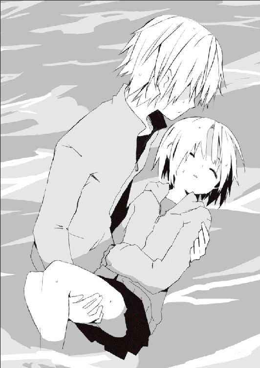
「うん、林檎を食べたよ」
鈴音は静かに応えた。もちろん店で売っている林檎の話ではない。
それは人間に永遠を与えてくれる禁断の果実。死後の世界の入り口、選ばれた者しか辿りつけない大樹にその林檎は生っている。どういう基準でその大樹に辿りつける人間が選ばれるのか、そんなことは誰にもわからないが、確かなことは、その林檎を食べた人間が決して死ななくなること。そして生きているかぎり『蟲』に狙われ続けること。
「あの海で宇佐川鈴音は一度死んだんだと思う。だけど林檎を食べて蘇り、賢木先生に希望をもらってあたしは生まれ変わったんだ。そうして今も生きている」
「............」
グリコはどこか優しげな顔で鈴音の話を聞いていた。
彼女と鈴音が一緒に暮らし始めてもう一ヶ月が経過しようとしているが、それだけの期間でこの女の子も随分と人間らしくなったものだと鈴音は思う。自覚していないようだけど、グリコはよく笑うようになった。表情もかなり柔らかなものになったように思う。
自分も賢木のように、グリコの心をちょっとでも癒せたかな、と鈴音は笑った。鈴音は彼女を救いたいと理屈ではなく思っている。それは過去、世界に大切なものなんてなく、漠然と死を望んでいた自分の姿を彼女に投影しているからなのかもしれない。というかそんなことは関係なく、鈴音はグリコの人柄それそのものに好意を抱いていた。ぶっきらぼうで感情がわかりにくいけど、悪い人間じゃない、とわかる。ならばそんな人間が苦しんでいるのはおかしい。助けてあげたいと鈴音は切に感じるのだ。
「......賢木愚龍......か」
グリコは手を休めもせずゲームを続けながら、つぶやいた。
「あいつはそんなに魅力的な人間なのか？」
「うん。とても」
即答する鈴音。グリコは真面目な顔のまま答えた。
「そうだろうな。おまえが好きになったんだから」
なんだか嬉しい発言だった。
「グリコもちょっとだけ、あいつと仲良くしてみる気になったぞ。おまえはグリコとあいつが喧嘩してるのを好まないようだし、こっちから妥協してやろう。どうもあいつは未だにグリコを警戒しているようだから──仲良しこよしとはいかないだろうが」
「うん。それはとてもいいことだよ、グリコちゃん」
鈴音は素直に喜んだ。グリコと賢木が仲良くしてくれるなら、それはとても嬉しい。素晴らしいことだ。鈴音はそれならさと満面の笑顔で提案した。
「来週にでも、三人でどこかへ遊びに行こうよ。親睦を深めよう。来週にはもう期末テストも終わってるし、先生は知らないけど、あたしもバイトがなくて暇だしさ」
「別に構わないが......グリコなどつれていってもつまらんぞ」
「そんなことはないよ」
鈴音は笑った。グリコも横顔だけで微笑して──。
「────」
刹那。グリコの表情が一気に険しくなる。
「.........な」
グリコは動きを完全に止めて、ひたすらに部屋の天井付近を見つめている。どうしたのグリコちゃんと鈴音が驚いた顔をする。画面の中でカービィが死んでいた。
「......なんだこれは。なんだこの気配は。獣──じゃないな、なんだ？」
「グリコちゃん......？」
「まさか『蟲』。いや──こんなに強力な、鈴音！」
鋭い声で呼びかけられて、鈴音はびくりと反応した。
グリコは真剣な表情で告げた。
「ちょっと外の様子を見てくる。おまえはこの部屋にいてくれ。誰が尋ねてこようが絶対に扉を開けるな。グリコが帰るまで電気を消してできるだけ静かにしていろ」
「グリコちゃん......？」
「説明はあとだ。胸騒ぎがする──」
グリコは扉を蹴破るように開けて、夜の町に飛び出していった。
どれだけ恵まれた家庭に生まれても、どれだけ才能の神に愛されても、どれだけ美しい容姿を手に入れても賢木の心は満たされなかった。ありとあらゆる分野に才能を発揮し、世間から賞賛されようとも虚しさだけが体を蝕んだ。自分はおそらく永遠に幸せにはなれないだろうと賢木は思った。どれだけ栄誉を掴もうが満足できなかったのだから。
幸福は手繰りよせても手繰りよせても終わりが見えないメビウスの輪。そんなものに拘泥して一生を無駄にするのは賢くない。これが幸せだ、ここまで辿りつけば幸せだなんていう規範はないし、どれだけ高みにのぼろうが必ず不満はついてまわる。ならば高みを目指すことになんの意味があろうか。ちょっと落ちついて考えてみれば幸せはどこにでもあるというのに。賢木は勘違いをして若い時代を無駄にしていた。
宇佐川鈴音に出会ったのはまるで偶然だった。海が、見たかったのだ。忙しく働いていた賢木はもっと素晴らしい学論を、もっと新しい芸術をと求められ使い潰される生活にうんざりとしていた。だからもしかしたら、鈴音を発見しなければ自分は海に身を投げていたかもしれない。そのくらいの精神状態には追いつめられていたように思う。
一年前、冬の海、鈴音は賢木の見ている先で迷わず冷たい水に飛びこんだ。周囲には賢木の他に誰もいなかった。賢木がいなくてもその学論は誰かがいつか発表したろう、賢木がいなくても誰かがきっとオリンピックには出場したろう、賢木がいなくてもきっと変わらず芸術は進歩したのだろう、しかし、あのとき、賢木の他には誰も鈴音を助けることはできなかったのだ。生まれて初めて見つけた、自分にしかできないことがそれだった。
賢木は迷わず鈴音を追って海中に飛びこんだ。自殺するためではない。鈴音を助けるためだった。無我夢中で泳いだ。海は氷のようだった。救助者が賢木でなければきっとその冷たさに動けず沈んでしまったろう。賢木はしかし完成されたフォームで鈴音を颯爽と助け、すぐに陸まで引きずりあげて意識のなかった彼女を蘇生させた。
純粋な感動があった。そのとき賢木は幸せの意味を知った。
宇佐川鈴音が答えだった。
あとは知っての通りである。
賢木は宇佐川鈴音のために生きることを決めた。それが彼にとっての唯一の幸せなのだから。他人が何と言おうとも、自分で見つけた幸せなのだから。
賢木愚龍は宇佐川鈴音に生きる希望を与えられた。一年前のことである。
「............」
ぱちりと、賢木愚龍は私立観音逆咲高等学校宿直室で、昔の記憶が色濃く反映された夢からゆっくりと目覚めた。低く唸って頭を上げ、首を振って周囲の状況を確認する。明るい──そのくせどこか嘘臭い感じの照明の下、コーヒーポット以外は何も置かれていない宿直室の机に賢木は座っていた。うっかり居眠りしていたようだった。最近鈴音のことで悩みすぎて夜にあまり眠れず、睡眠不足気味だったのでそれも仕方ない。
寝ぼけ眼を指で擦り、乱れた前髪を整えると賢木は顔を洗おうと立ちあがった。宿直室には狭いわりにベッドと洗面所が完備されている。じゃばじゃばと洗顔し、眠気を散らすと賢木はタオルで顔を拭いて大きく伸びをした。
「......くう」
いったいどれほどの時間を眠っていたものか。いつ眠りに落ちたのかもはっきりしないのでわかるわけもなかった。今日は宿直当番──夜のうちに教師が学校に泊まりこんで校内の見まわりや消灯、施錠をする日──だったので、賢木は夜だというのにまだ学校にいた。観音逆咲高校の生徒は大人しいのでそんな、夜中に学校に忍びこむようなこともないだろうにと思うのだが、忍びこむのは生徒だけでもないだろうと賢木はこの役目を甘んじて受けいれていた。これも仕事のうちだと考える。
時計を見るともう九時で、晩御飯を食べていなかったので無闇に空腹だった。コンビニかなんかで食料を調達してそれから校内の見まわりをしようか──と決断し、そこらに無用心に放置していた小銭入れを手に宿直室を出る。静かな廊下の窓からは淡い月光が零れていた。
ふと、耳を澄ませる。
「.........？」
賢木は不穏な気配を感じて表情を険しくさせた。息遣い。獣のような荒いそれがどこかから聞こえてきている。気のせいだろうか。しかし──。
宿直室の扉を閉め、賢木は不審に思って音の方向に向かった。変質者でも忍びこんでいるのかもしれない。あるいは野犬とか──、この町も田舎なのでたびたびそういうことが起こるのだ。ならば追いださなくてはいけない。それが宿直である自分の仕事だ。
使命感の強い賢木はそう決断し、廊下の角を何気なく曲がった。
──ぎ。
ぎおおおおおお。
と、聞こえた。
この世のものとはとても思えない禍々しい叫び。鳴き声。空気を震撼させ衝撃波のようにぶつけられたその咆哮は賢木の判断力を一瞬奪い、彼をその場に棒立ちにさせた。立ちすくむ彼にもちろん『それ』は絶好の機会とばかりに。
爪を。
「う──おッ？」
賢木はとっさの対応で体勢を低くしてその一撃をかわした。賢木の代わりに空気がずたずたに切り裂かれる。爪。野獣の爪だった。それは賢木の頭頂をかすめ凄まじい勢いで壁に直撃し、その恐ろしい破壊力によりコンクリートの壁を砕いた。
「な──」
──なんだ？
賢木は加害者の姿を確認することもできないまま危機回避本能だけでそいつから遠ざかる。脚力を目一杯使って後方に跳躍、着地。冷や汗がどっと吹きだした。心臓がすぐに動悸を早める。血生臭いどろりとした空気が周囲に立ちこめている。
その匂いは今までも漂っていたはずだが、感じとれなかった。しかし改めて意識してしまうととんでもない悪臭だった。血。それも夥しい量の。なんでこんな匂いが──静かな夜の学校に。賢木は状況を理解しようとして頭脳をフル回転させた。
思い浮かんだ単語は『グリコ』。そして『蟲』。
連中は絶対に無関係ではないだろう。しかし賢木にはそれ以上考えている余裕などなかった。現在進行形で自分が危険の渦中にいることを知る。
ぎおおおおお。
と、『それ』は叫んだ。知性なんてどこにもない野獣そのものの雄叫び。賢木は懐から常時携帯している拳銃を抜き放つ。最近グリコも『蟲』もナリを静めていると思ったらとんでもない、こんな恐ろしい化け物を学校に用意していたなんて。
それは賢木がかつて見たことのないおぞましい怪物だった。
背丈は廊下の天井につっかえそうなほど大きい。しかしその大きさのわりにどっしりとした感じがしないのはその怪物が妙な形をしているからで、まず中央に胴体がある、そこから蜘蛛のように細長い足が何本も伸びている。胴体からはさらに上に向かって一本の突起が伸びていて、その突起にはぎょろりとした巨大な眼球が生えていた。悪趣味な外見である。体毛はなくぬらぬらと湿っていて、酷く生臭い。もちろんこんな生物が地球上の生物であるわけがないが、どうしてだか深夜の学校にそれは違和感なく存在していた。
怪物はぎょろりとした眼球を賢木に向ける。その何本もある足にはそれぞれ鋭い爪が尖っており、怪物はどうやらその爪で賢木を切り裂いて食べるつもりらしかった。
「......いったい、なんなのだ、こいつは」
賢木は愚痴るようにつぶやく。
「私たちの日常をどこまで壊せば気が済むのだ、『蟲』も、グリコも......」
そうして彼は先手必勝とばかりに銃を構え、放つ。ガアンガアンガアンと三発連続。暗闇に火花。静寂に銃声。学び舎に怪物。どこまでも壊れていた。
空薬莢が細かな音をたてて廊下に落ちていく。
瞬間。
──ぎおおおおお。
ふっ、と。
怪物の姿がかき消える。
「────」
賢木は瞠目し、銃の連射を中止する。目標を失った弾丸は壁に床に埋まっていった。
そして溶けるように消えた怪物はすぐに溶けるように現れて。
──ぎおおおおお。
何事もなかったかのように吠え、賢木に向かって突進してくる。
賢木は迫りくる怪物に銃を構えることも忘れて呆けた。
爪。二本。必殺の勢いで繰りだされた攻撃を賢木は地面を滑ることで回避する。怪物は細かい動きが苦手なのかそのままの勢いで壁に激突し、窓ガラスを残らず粉砕して止まった。ばらばらと落ちてくるガラスの破片を振り払いながら賢木は蒼くなる。
「......頼むから、物理法則を無視した動きをしないでくれないか......」
消えた。怪物は確かに消えた。そして銃弾を避けて真っ直ぐに賢木に襲いかかってきたのである。人間の体くらいならぺちゃりと潰せる程度の破壊力とともに。なんとも戦闘するために生まれてきたようなでたらめな存在だった。そもそもなんで自分が襲われているのかが賢木には理解できない。理由なんてないのかもしれない。そんな気もする。
しかし。
諦めるわけにはいかない。殺されるわけにはいかない。
宇佐川鈴音が生きているかぎり。
賢木は──死ぬわけにいかないのだ。
「信頼と約束。全く──難儀な女の子を好きになってしまったものだな。『蟲』だのグリコだの怪物だの、次々と現れては私たちの恋路を邪魔しよって。しかしどんな障害があろうとも、誰も私を止めることはできない。おい怪物、私を誰だと思っている──」
愚鈍な動きでこちらを狙う怪物に賢木は叫んだ。
「──世界最強の足長おじさんだぞ！」
早撃ち。怪物が消える暇もない。撃つと同時に賢木は走っている。胴体に被弾した銃弾に怪物が驚いた声をあげた刹那、すでに賢木は廊下を脱兎の勢いで逃亡していた。あんな怪物とは戦っていられない。優先順位の問題だ。ゲームじゃないんだから、あんな怪物を倒しても経験値は増えないしアイテムをもらえるわけでもない。ならば戦う理由などない。さっさと逃げて警察でも自衛隊でも呼び寄せて戦わせよう。
効率主義者な賢木愚龍は二○才。世界平和のために怪物と戦えるほど夢見がちな年齢ではなかった。自分が逃げている間に誰か他の人間が襲われるかもしれないが、戦ってもまず勝てないと思うので結局は同じこと。ならば一刻も早く怪物に勝てる存在を呼ばなくてはならない。陸上自衛隊一個師団でも召喚すれば充分だろう。いくら強くても賢木は人間、ウルトラマンじゃないんだから怪物と戦う義務なんかない。
しかし素直に賢木を逃がしてくれるほど怪物は優しくなかった。
──ぎおおおおお。
賢木の背後で怪物の足が一本だけ消える。そして次の瞬間──。
──しゅぴッ。
「うおッ？」
暗闇から空間を突き破り怪物の足が『生えて』きた。とっさに体を捻って直撃を避けるも、完全に避けることはできず服ごと皮膚が切り裂かれた。痛み。ゴリ、とした感覚からいって多分傷は骨まで達している。賢木は痛みに呻きながら体勢を崩した。
がしゃん、と銃が廊下に落ちる。
──ぎおおおおお。
可笑しそうな声音で怪物が吠えた。見ると、怪物の足が一本中途から暗闇に飲まれている。理屈はさっぱりわからないが、どうやら空間を越えてあの足が賢木の正面に生えてきたらしい。すぐに足は引っこんだが、怪物の本体が賢木に迫ってくる。
「ちっ......反則だろう、そんなの」
吐き捨てながら、痛みを堪えて賢木は銃を拾おうと手を伸ばす。しかし瞬時に空間から怪物の足が生えてガツン、と銃が弾き飛ばされてしまった。ついでその足が賢木の顎に強かな一撃を食らわせる。賢木は吹っ飛んで壁に叩きつけられた。替えの弾丸が懐から零れて景気のいい音をたてて落ちる。
──万事休す。
「くっ......」
だが最後まで諦めるわけにはいかない。鈴音が一度グリコに殺された日から、賢木は自分が死ぬのは鈴音の安全を確保してからだと決めていた。それが賢木の生きる理由。こんなところで──こんな理不尽に殺されるわけにはいかないのだ。
賢木は根性で体を起こしてキッと怪物を見据えた。
「......無理をするな。死ぬぞ」
その視界の中心に。
──ひゅん。
と。銀色の閃光が深々と怪物に突き刺さる。銃弾を受けてもさほど怯まなかった怪物がその一撃で揺れる。ぎおおおお。悲鳴。紫色の体液が迸る。怪物の強靭な胴体に突き刺さり痛みを与える凶器はスプーン。そして賢木を守るように立つ黒衣の少女が一人。
ざわざわと、特徴的なオオカミヘアが破れた窓から吹き込む風に揺れていた。枯葉がちろりと廊下に落ちる。少女の白い指先に握られているのも真新しいスプーン。
「おまえが死ねば鈴音が哀しむ。それはグリコの望むところじゃない」
グリコは。
眼球抉子という残虐な名前を持つ少女は肩越しに賢木を見て。
「だから助けてやる。スプーンも──」
月光を反射して妖しく輝くスプーン。
「──鈴音の金で大量に買ったし」
「自分の金で買え。うさりん閣下は貧乏なのだぞ」
思わずつっこんでいた。グリコは憮然として目を細める。
「......うるさいな。おまえは大人しくそこで死にかけていればいいんだ。役たたずなら役たたずらしく自粛して隅っこにいろ。こいつの相手はグリコがする」
正直、こいつの登場でこんなに安心できるとは思わなかった。賢木はグリコのことを信じてはいない。いつ本性を現わして鈴音に襲いかかるかと思うと気が気ではない。賢木にとってはグリコも、痛みに悶えて叫んでいる怪物も、どっちも同じ人外に思える。
しかし彼女は鈴音を殺さなかった。最近はよく笑うようになった。賢木にはまるで心を開かないがそれでも彼女は人間に見えたし、こうして助けにきてくれた。
「グリコ......」
賢木はつぶやいて、傷の痛みに体勢を崩すとその場に膝をついた。
「無理をするなと言っているだろう。人の話はちゃんと聞け。生徒が教師の話を聞かないのは当たり前だが教師が生徒の話を聞かないのでは社会問題だろうに。おまえの仕事は生きることだ。戦うことはグリコに任せろ」
そしてグリコは弾丸のような速度でスプーンを解き放った。それらは次々に怪物の全身に突き刺さり、紫色の体液を盛大にぶちあげる。
グリコは素早く新たなスプーンを抜く。
「......ふん、体面積が大きいから遠距離攻撃では焼け石に水だな」
「グリコ......あいつ、あいつは？」
グリコならあの怪物の正体も知っているような気がする。
「あれは怪物だ」
「見ればわかる」
「ならば訊くな」
説明する気はさらさらないようだった。
賢木がカチンと機嫌を損ねる。気づいて、グリコは面倒臭そうに説明をしてくれた。
「人間たちの感知できない暗闇で生きている怪物、あれはそういう種類の生物だ。人間が知らない危険な存在というのはことのほか多いよ。あのタイプの怪物は見たことがないが──おそらく、この学校に封じこめられていたのが何かのきっかけで目覚めたんだろ」
「きっかけって」
グリコはちょっと考えて、当たり前のように答えてくれた。
「多分『蟲』だ。偶然で片付けるにはタイミングが悪すぎる。グリコや『蟲』のように常識の半歩外を歩いている存在にはな、あのような怪物も見つけやすいのだ。『蟲』がなんの目的であんな怪物を目覚めさせたかはわからないが──とにかく、放っておくには危険すぎる。人間なんか軽く殺せる戦闘力は持っているだろうし」
「身をもって実感している」
「うん、よく生き残った──賢木」
グリコは笑ったような気がした。しかし彼女は賢木のほうを見ていないので本当のところはわからない。怪物はすでに憤怒に目の色を変えて彼女を睨みつけている。
「グリコ、そいつはおかしな技を使うぞ、気をつけろ！」
気がついたら賢木はグリコに助言をしていた。
「関係ない。捻じ伏せる」
だがグリコは聞いちゃいなかった。
なんて可愛くないんだろう。しかし頼もしいやつだった。
賢木は彼女に対する警戒を解いている自分に気づく。鈴音が信じたこの女の子を自分も信じてみよう、と、賢木愚龍はこの瞬間にそう思ったのだった。グリコも賢木を助けることになんの疑問も持っていないようだった。宇佐川鈴音も二人に信頼を置いている。最初は加害者と被害者の関係だった三人にいつのまにやら絆のようなものが生まれていた。
......それが、『敵』の描いたシナリオ通りの展開だということも知らずに。
空間を飛び越えて繰りだされる攻撃を素早い動きで避け、廊下を大股で走り、パジャマ姿のグリコはスプーンを片手に怪物に迫る。すでに完全に攻守は逆転していた。怪物はもはや加害者ではなく被害者でしかなかった。巨大で獰猛な怪物は小柄な少女に圧倒されていた。やがてグリコは暴れる怪物の突起にがっしりと飛びついて。
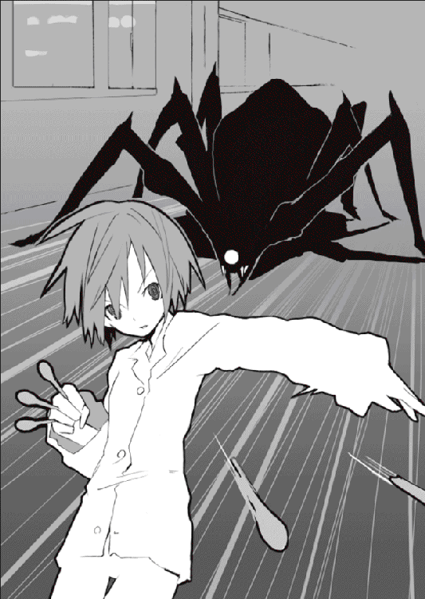
「生意気に喚くな怪物。グリコが眼球えぐっちゃうぞ」
ぶしゅ。
ずぶしゅ。ぶじゅ。
奇怪な音とともに、スプーンが怪物の眼窩に潜り込んでいく。眼漿が舞い、断末魔の悲鳴が高々と夜の高校に響いた。グリコは表情を変えない。哀れな怪物は哀れな生贄の役目を終え暗闇に還っていく。『蟲』と同じように、死ねば亡骸は残らず空気に拡散する。
ぶしゃあ、と、廊下に紫色の体液だけを残して怪物は虚無に消滅した。
その光景を遠くから見ていた占い師の少年はにやりと微笑み、紅い瞳を不気味に煌かせフードを深くかぶった。その手には賢木が落とした拳銃と替えの弾丸が握られている。さきほど怪物に命じて空間を越えここまで運ばせたのだ。この武器が手に入れば計画は最終段階に突入する。胸糞悪い『蟲』のフリをするのもあと少しの辛抱だ。
「......ありがとう。僕の愛しいレギオン・バンダナ。君は本当に僕の思う通りに行動してくれたよ......あわよくば、賢木愚龍は瀕死くらいにはしておきたかったんだけど、意外や意外、人間にしてはなかなか運動能力が達者だね、逃げきってしまった」
微笑して、『彼』は『彼』本来の口調のまま一人つぶやく。
「お楽しみは最後まで取っておけという神様の采配かな。神様。くくく。本当に便利な存在だよね。こうまで僕に都合のいいように運命を創ってくれるんだから」
グリコと賢木から視線を外し、天空を漠然と見つめる『彼』。
「それとも──そんなやつ、いないのかな」
それはありえない考えじゃない。
神様がいるとしたら、自分のような存在はきっと裁かれているだろうから。
「いないんだとしたら──『蟲』のみなさんもお疲れさま」
ばさりとローブをひらめかせ、『彼』は悠然と夜の学校を去る。
「そろそろ夢界獣も孵化するころかな......」
ならばあとは終わらせるだけだ。
「念願成就の日も近い......」
最後に──『彼』は二人を振り仰いだ。
「それまでは、せいぜい幸せな夢を──」
遥かな昔、原始の人類をそそのかし禁断の果実を盗ませた存在がいた。
あらゆる生物の中で最も狡猾、そして最も醜悪なその生物の名は──
「見ないで」
序幕。物語を進める前に、まずは宇佐川鈴音の住んでいるアパートに視線を向けてみよう。どんな不動産でも取り扱っていないようなまさに幽霊の温床のような寂れた景観、茶けた壁、燃えたわけでもないのに煤けた廊下を進む。
『１Ａ』とプレートが下がった扉には不必要なインターフォン。開けるときにちょっとコツがいる木製の扉を越えて、狭い部屋の中央でぐっすりと眠る二人の少女に視線を移す。一人はこの部屋の持ち主である宇佐川鈴音。清潔そうなショートカット。雪のように白い肌。その宇佐川鈴音にしがみつくようにして悪夢と戦っているのはグリコ。眼球抉子と名乗っている彼女は寝汗を浮かべて小さくうなされている。
しかし彼女も鈴音との暮らしであまり悪夢には悩まされなくなっていた。千年間の放浪により病みついたグリコの心も、宇佐川鈴音の優しさに触れてちょっとずつでも癒されているものか。どれだけ櫛を入れても直らない彼女のオオカミヘアは布団に広がっている。
見たかぎりではとても微笑ましい、幸せをそのままカタチにしたような姿だった。しかし、互いに寄り添うようにして眠っている二人の少女はまだ知らない。その幸せを破壊するために送りこまれた存在が彼女らの枕元に転がっていることを。
ぴし。ぴしり。
静かに、夢界獣の卵に亀裂がはしる。
巨大な、人間の頭部ほどもある真っ白な卵。しかしその卵には色鮮やかな幾何学模様が散りばめられている。地球上のどの生物の卵とも違う、グリコが先日、夜の学校で倒したレギオン・バンダナと同種類の生き物の卵。平穏な人間の世界には存在してはいけない禁じられた卵。卵は宇佐川鈴音とグリコ、二人の『夢』を食らい栄養とし、ゆっくりと孵化に備えて力を蓄えていた。
賢木は『蟲』からもらったものだから危険かもしれない、捨てるか割るかしてしまえと鈴音に言っていたのだが、心優しい鈴音がそんなことできるわけもなかった。グリコも特に危険な生物の卵ではないはずだと楽観した発言をしていた。
しかしグリコ、おまえの考えは甘すぎる。確かに夢界獣は危険な生物ではない。しかしその夢界獣に栄養を与えたグリコ、おまえは危険な生物だろう。
孵化の時は近い。後悔しても遅すぎる。全ては彼女らにとって最悪の展開に流れて動いている。しかし彼女らはそれを知らない。ただ安穏と夢を貪る。
──今は、せいぜい夢を見るがいい。幸せな夢を。
夢から覚めれば終わりはすぐそこだ。
ほうら、夢界獣が外に出たいと殻を突っつく音がする。
ごとごと。ごとごと。
その日はいつもより空が晴れわたっていたように思う。ここのところずっとぐずついていた雨雲も綺麗に消え果てて、太陽は高く風もなく、外出するには最適な空模様だった。気温もそれほど低くはなかったので手袋も必要はなく、歩いているうちに暑くなってきたのでコートもすぐに脱いでしまった。ぽかぽかとして、草も木も何か嬉しそうに青々と茂り、人々の表情もどこか明るく幸せに満ちていた。
宇佐川鈴音は脱いだコートを片手に引っかけて、自分の服装はおかしくないかと何度もグリコに確認していた。量販店で二時間も悩んで選んだ服なので似合っている自信はあるのだが、それも独りよがりの結論ではないという可能性はない。しかしファッションセンスにおいてはまるで無能なグリコは尋ねてもきょとんとして、服など肌が隠れればなんでもいいじゃないかとか信じられない発言をした。
ちなみに彼女の服装は学校の制服、セーラー服である。グリコは外出用の服をこれしか持っていなかった。普段は鈴音の部屋着などを着ていたのだがさすがにそれで外に出られたら困る。この前も黒いパジャマ姿で夜の町へ飛びだして鈴音を仰天させた。どうも彼女には微妙な部分で一般常識がなくて困る。
「どんな服を着ていても」
呆れたように、グリコはひたすら服装を気にしている鈴音につぶやいた。
「賢木は気にしないと思うぞ」
「そうだろうけど。だけど......」
困った顔をする鈴音に、グリコは疲れたふうに嘆息した。
「乙女心か。グリコにはわからんな......。とにかくどれだけ悩んでいてももう服を着替える時間はないんだし、ならば悩むだけ損だとグリコは思うんだが」
「うー......」
突き放すような口調のグリコに困った顔をする鈴音。別にグリコは怒っているわけではない、これでいつも通りなのだが、それでもやっぱりもうちょっと違う言いかたができるんじゃないかと思う。ぶっきらぼうで不器用なグリコだった。
学校での期末テストが終わり、賢木の熱心な授業により（若干一名を除いて）高得点をおさめた一年Ｂ組の生徒たち、彼らは好成績を親に自慢しながら目下冬休みの真っ最中である。好成績を親に自慢できない鈴音も悪成績を親に叱られない若干一名（グリコ）もそれは同じで、今日から二週間は冬休み、未来に不安はあるけれどどこかほっとしていた。
そして本日は、以前になんとなくほのめかしていた三人でのおでかけの日である。グリコと賢木を仲良くさせよう、そして親睦を深めようと鈴音が企画立案した一日がけのお楽しみタイム。三人で日が暮れるまで遊んで、賢木がなんとなくグリコに抱いている警戒心とか、グリコが賢木に張っている意地とかを吹っ飛ばしてしまおうという思考である。
みんな仲良くてみんな幸せなのがいちばん、それが鈴音の哲学だった。
とにもかくにも。
「先生ー」
駅前の喫茶店に入り客の視線を独り占めにしていた賢木に声をかけて、仏頂面のグリコとともに彼の正面に腰掛ける鈴音。店内は暖房が効いていてとても暑い。賢木は今日も芸能人みたいな派手な格好をしていた。けっこう気合を入れている。しかし彼がお洒落をすればするほど鈴音の貧相さが際立って困ってしまうのだが。
なんにせよ、自分のために賢木がおめかししてくれている──という事実は、鈴音にはくすぐったくて、そしてけっこう幸せなことなのだった。信頼と約束。鈴音は自分が賢木に不釣り合いなんじゃないかとかそういうことを思わない。賢木は確かに自分を愛してくれている。ならばこちらも気後れせずに精一杯の愛情を返そう。
鈴音はそう思っている。
「うむ、閣下、時間通りだな」
「待った？」
「いや、私も今さっき来たところだ」
それにしては喫茶店の周辺に人だかりが増えすぎだと思うが。
普通ならそんな周囲からの視線が気になって萎縮してしまうところだろうが、鈴音も賢木も慣れているので極めて普通に振舞っていた。賢木はどうしようもなく人目をひいてしまう容姿をしているのである。いちいち気にしていても疲れてしまうだけだ。
賢木はがんばって服を選んだ鈴音が報われるような発言をする。
「閣下、今日はまた一段と可愛い格好をしているな。妖精かと思った」
誉めすぎ。
鈴音は照れて真っ赤になる。
「先生も格好いいよ」
「ありがとう。......貴様は普段とまるで変わらんな」
グリコに視線を向ける賢木。グリコは憮然とする。
「うるさいな。なんでグリコがおまえのために着飾らなくちゃいけないんだ」
「グ、グリコちゃん、いきなりギスギスしないでよ......。先生も、今日は楽しい日なんだから、ね？ あんまり挑発するような発言は......」
火花を散らす二人に困った顔をする苦労人宇佐川鈴音。
そんな彼女に嘆息し、仕方なくといった感じで妥協をする二人。
「......鈴音の頼みだ、グリコはできるかぎりでおまえと仲良くしようと思う。しかしグリコはグリコでこんな性格だし、おまえもそんなに器用じゃないだろう。しばらくは──」
グリコは純真な声で告げた。
「──このままでいいと思う。そして、グリコはなるべく怒らないことにする」
「ならば私もそうしよう。私もなるべく気を許してやる」
妙な会話をする二人に、鈴音はなんとなく可笑しくなってくすりと失笑した。
「似ているなぁ。この二人。ほんと、仲良くできると思うんだけど......」
仲良くできたらいいな、と鈴音は和やかな気持ちで思った。
鈴音のその願いはすぐに叶うことになる。似た者同士の二人、意地と警戒を取り去ってしまえば意外なほどに馬が合い、最初はどこかぎこちなかったがだんだんと互いのことを理解できたようで、賢木の高慢さに隠された優しさをグリコは理解したし、グリコの不器用さに歪められていた良い部分にも賢木は気づくことができた。もちろん宇佐川鈴音の細かい気配りがそんな二人のわだかまりを解かしていったのは言うまでもない。
語られたグリコの過去に賢木は本気で同情しているようだったし、理解不能で怪しく思えたグリコの行動にも鈴音が主張していた通り、どうしようもない理由があったのだと納得しこれまでの非礼を謝っていた。グリコもそれを許し、本当にもう、これまでの諍いが嘘だったかのように、二人の間を隔てていた壁のようなものはすぐに瓦解した。
そんな奇跡が五時間ほど続いて。
ぱちゅんぱちゅん、と軽快な音が断続的に響いている。場所は観音逆咲町からちょっと離れた少しだけ賑やかな町。映画館のそばのゲームセンター。二人プレイのシューティングゲームに賢木とグリコは挑戦している。それぞれマシンにつながっているモデルガンを操り、画面の中で暴れ狂うティラノサウルスとかに次々と引き金を引いている。
本格的なガンアクションが体験できるという今では珍しくもない体感型のシューティングゲームである。銃を手にした賢木とグリコ、そして中央で悲鳴をあげている鈴音の三人は車を模した座席に座り、カーテンで区切られた空間で光と音に酔いしれていた。
すでに三人には不思議な一体感のようなものが芽生えていて、遠慮のない態度でそれぞれに接していた。相も変わらず賢木とグリコはじゃれているのか喧嘩しているのかいまいちわからない容赦ない発言を互いにしているが、どうやらそれが彼らなりのコミュニケーションのようで、今では鈴音も二人の暴言を止めることはしなくなっていた。
他人とのつきあいかたは人それぞれ、ナァナァの甘い言葉をかけてもらわなきゃなりたたないような関係よりも、彼らの手加減抜きの言葉のぶつけ合いのほうがずっと正しい関係のように思えた。愛想笑いなんかしなくても人間は仲良くなれるのだ。
宇佐川鈴音は仄かな安堵とともにそんなことを考えていた。
未来にきっと希望はないけど、多分自分たちは負けない。
運命にも、『蟲』にも、負けない。
「グリコ！ さっきから全然貴様の銃弾は敵に当たっていないじゃないか！ ちゃんと狙って撃て！ それは私だ馬鹿者！ 味方を撃つなこの裏切り者めッ！ そして私を撃つときだけはどうして狙いを外さないのだ！ 大概にしておけ！」
「うるさいな。グリコはこんな凄まじいゲームはやったことがないんだ。画像がでたらめに眼球に飛びこんできて気持ち悪いくらいだぞ」
「グリコちゃんファミコンしかやったことがないもんね......」
二人の応酬にやんわりと秩序を与え、鈴音は柔らかく微笑んだ。
ちなみに二人がプレイしているゲームは設定が意味不明で、恐竜が現れたかと思うと宇宙からＵＦＯが攻めてきて、宇宙人を撃滅しているうちに銀行強盗に巻きこまれるなどストーリーに脈絡がない。だから次に何が起こるかわからないので見ているぶんには楽しめた。現在、画面は微生物の世界に突入して二人は白血球と戦っている。
賢木は銃の扱いが上手いので（実弾を日常的に撃っているから当然だけど）、グリコにオウンゴールされないかぎりは滅多に殺されないのだが、グリコはそれはもう派手に死んでいくので次々とコインが目減りしていく。賢木が山のように用意していた一○○円コインも残り少なくなっていた。その甲斐もあってかどうやら二人は最終画面にまで進んだようで、ロボットを操る悪の総帥がまた意味のわからない講釈を述べている。本格的に頭の悪いゲームである。というか頭の悪くなるゲームである。製作者も馬鹿なゲームを作ろうと思って作ったのだろう、知性と感動の傑作と呼ぶには程遠いストーリーだった。
悪の総帥が操るロボットはミサイルポッドから魚介類を放っている。その魚介類を賢木が正確な射撃で撃ちぬき、その隙にグリコがロボットの本体に攻撃をしている。しかしグリコの銃弾は何故だか巨大なロボットに掠りもしないで消えていく。
「グリコ、ちゃんと狙って撃っているのか？」
「狙えば狙うほど外れていく......この機械、壊れているんじゃないのか？」
「機械のせいにするんじゃないよ。って、うわ、また私に当たった！ 貴様どうして巨大なロボットを狙わずに豆粒のような私を狙うのだ。そして何故それが当たるのだ」
「グリコは知らん。指先に訊いてくれ......」
打ち解けた会話をしている二人に鈴音は満足そうな顔をした。グリコと賢木が仲良くなってよかった。自分の好きな人間が自分の好きな人間と喧嘩してるなんてのは嫌だ。これでひとまずそんな事態もなくなることだろう──問題は山積みで、まだちっとも未来に明るい兆しはないけれど、それだけでどこか救われたような気持ちになる。
宇佐川鈴音はこのとき、未来に絶望なんてしていなかった。
どれだけ苦しく救いようのない未来が待ちうけていようとも、彼女なりの健やかな明るさで乗りきっていけたろう。あるいは幸せにいつまでも生きていけたかもしれない。生きていける強さが彼女にはあったし、グリコもそんな彼女を守ってくれると言った。
賢木愚龍といつまでも、彼の命が尽きるまで。
ずっとそばで笑っていることが、宇佐川鈴音にはできたかもしれない。
しかし。
ぶづ。づうん。ばぢりばぢばぢ。
ブ......ゥうぅン。
刹那。
次々と魚介類を放っていたロボットの姿が消える。というか、画面がいきなりブラック・アウトして何も映さなくなった。割れんばかりの大音量を流していたスピーカーも沈黙する。店内の照明も落ち、カーテンをのけて座席の外を見ると店全体が停電していた。
「なんだ......？」
グリコが不思議そうな顔をする。手にはモデルガンを握りしめたままだ。
「停電か......？」
「珍しいね。発電所で事故でもあったのかな」
現実的な発言をする鈴音。普通に考えればそれしかないだろう。あるいは電線が千切れたか、誰かが悪戯をして店のブレーカーを落としたか。
ジ......ジジ.........。
焼けるような。虫の鳴き声のような。
「賢木......鈴音、おい」
グリコが慌てた声で二人を呼ぶ。外を見ていた二人はグリコに視線を向けた。
「どうした」
「画面がおかしいぞ」
グリコは普通の調子で言う。賢木と鈴音は促されるままに真っ暗だった画面を見た。
そこに。
ジ......ジジジジ......ジジジ.........。
電源を失い、何も映さぬはずの画面に異様な光景が広がっていた。ざわざわと、這いずるように灰色の虫が画面全体に蠢いている。虫？
否。
これは──。
「眼球だ」
グリコが、鋭く言った。
そうそれは無数の眼球だった。生々しい、誰のとも知れぬ白い目玉。それがぬらぬらと眼漿を滴らせ、血管をうねらせてまるで虫のように動きまわっているのだ。
「う......」
あまりの気持ち悪さに鈴音が目をそむける。賢木も顔色をなくしている。グリコはただじっと異様な画面を見つめている。眼球はやがて集まると一つの画像を結んだ。
ジジ......ジジ.........ジジジジ............。
それは一人の少女だった。
否、少女のようなものだった。
ただその体は昆虫のそれだった。巨大な真紅の複眼。昆虫特有の節目だった触角。黒光りをする甲殻に鋭い顎と爪。虫だ。これは虫だ。
その虫は奇妙に愛らしいふりふりのドレスを着ていた。桃色の靴まで履いている。よく見ると触角には大きなリボンまでつけている。しかしそれはどこまでも異様で、まるでちぐはぐな格好だった。
少女のような虫のような存在は胸に熊のぬいぐるみを抱いている。テディベア。シンプルな形をしていて、円らな黒い瞳は縫いあわされたボタンだった。
「こ──」
鈴音が、低くつぶやきを漏らす。
「この、テディベア」
信じられないというような顔だった。
「あたしが欲しかったテディベアだ」
グリコが物凄い勢いで鈴音を振り返る。
「それは──以前、話していた、父にねだって買ってもらえなかったという？」
「そう。あぁ、なんで、何これ、どういう──」
鈴音は錯乱している。グリコも状況を理解していない。
虫の周囲には無数の眼球がひしめきあっている。どれも実際にそこにあるかのように生々しい。色も。形も。ゲーム画面に映しだされているものとはとても思えない。ちろりと、眼球に包まれた少女のような虫のような存在は触角を動かして低く声をあげる。
《......蟲と眼球とテディベア》
瞬間──周囲の空気が凍ったような気がした。
誰も何も言えない。指先すら動かせない。目の前の怪異に飲まれていた。
悪趣味な怪物は可憐な少女の声で続けた。
《......そう、あなたたちが恐れ、そして求めているモノ。あなたたちの命の中核に存在しているモノ。あたしは『それ』から生まれた。『それ』を食らって生まれた》
冷えきった、ざわざわと這い上がるようにおぞましい声音だった。
《......初めまして。お母さん。あたしは夢界獣。あたしに栄養を与えこの世に生みだしてくれてありがとう。あなたたちのおかげであたしはこんなに強い力を手に入れた》
「夢界......獣」
賢木が小さく声をあげる。
「おまえは──あの、卵の」
夢界獣は賢木を無視するようにただ鈴音とグリコを見つめていた。
《......夢界獣は人間の『夢』を食べて成長する。『夢』には人間の命の本質が溶けこんでいるから、とても栄養がある。あたしのような生物ですらない怪物にはね。そして林檎を食べたあなたたちの『夢』はとても──素晴らしく、力があった》
不気味な声で『彼女』は続ける。
《......あたしはあなたたちの『望み』にして『恐れ』。命の最も本質にあるモノ。あたしをこんな姿にしたのはあなたたち。蟲と眼球とテディベア──》
確かに、こいつはその通りの外見をしている。
《......これが、あなたたちの本質。二人の『夢』が混じってしまってこんな姿になったけど、あたしは喜んでいる。だってこんなに強力な体を手に入れることができたんだもの》
「グリコの──そして鈴音の本質、だと？」
こんなおぞましい怪物が。
《......そう。あたしの姿がそのままあなたたちの『望み』にして『恐れ』》
すう、と、夢界獣はグリコを手で示した。
《......あなたは蟲を恐れている。決して相容れることのない自分にとっての敵、倒しても倒しても諦めず殺しても殺しても湧いてくる蟲を。家族を殺した存在を──》
きちきち、と夢界獣は小鳥の囀るような声で鳴いた。
《......そして同時に求めている。蟲を殺すことこそがあなたの生きる意味。蟲がいなくなればあなたは生きていく目的を失う。だからあなたは蟲を恐れ、同時に望んでいる》
グリコは答えなかった。ただ口をきつく結んで夢界獣を睨みつけている。
夢界獣は次に鈴音を見た。
《......あなたも》
鈴音はびくりとする。
《......あなたも、あなたの人生を決定的に変えてしまったテディベアを恐れている。テディベアとはここでは単なる喩えでしかない。それは『あなたの欲しいモノ』。あなたは欲しいモノを与えられずに一五才まで生きていた。しかしいつでも求めていた、あなたの望むモノを与えてくれる存在を。そして同時に恐れていた。そんな存在が現れないことを》
夢界獣は賢木を見る。
《......そして、そんな存在が現れた今も、あなたは常に恐れている。あなたに望むモノ──それは愛だったり居場所だったり色々だけど──を、与えてくれる存在が、いつかいなくなってしまうことを。あなたは賢木愚龍と別れることを心の底から恐れている。賢木愚龍を心の底から望んでいるがゆえのパラドックス。それがこの、テディベア......》
鈴音はぺたりと座席に座った。がくがくと震えている。自分の本質を不意討ちで指摘されてしまったのだからそれも当然だろう。夢界獣は気にせず続けた。
眼球抉子を真っ直ぐに見つめて。
《......あなたは眼球が好きで嫌いだ》
グリコは言葉を口にしない。
《無限の時を生きるあなたの眼球はすでに光を喪い澱んでいる。だからあなたは綺麗な眼球を抉りたいと思っているんだ。あなたは綺麗な瞳を求め、そして奪いたいと願い、また綺麗な瞳で見られることを恐れてもいる。嫉妬。恐ろしいパラドックス──あなたのその嗜好は人間からは遠すぎる。眼球抉子。なかなか的を射た自称じゃない──》
「さっきから──」
グリコは銃口の瞳で真っ直ぐに前を見つめ、夢界獣に向けて純真な声音で言った。
「──ぐちぐちとやかましいぞ。長々と心理占いをありがとう、それで、そいつを──グリコたちが生みだした化け物を使って、何をするつもりなんだ、『蟲』ッ？」
《......おやおや》
声が。
《気づいていたんですかぁ。なかなかどうして勘の鋭い》
男の裏声のような、女の低声のような、不気味に響く魔性の声。
──に、変わった。
グリコは画面を睨みつけている。
「生まれたばかりの赤子がグリコたちのことをこうまで詳しく知っているわけがないだろう。人間だろうが動物だろうが怪物だろうが赤子は赤子だ、グリコたちの『夢』を食って成長したとはいえ、生まれたばかりの赤子にその『夢』の解釈などできるものか！ そんなこと──ずっとグリコたちを観察していたおまえらくらいにしかできん！」
《......ご明察》
声は愉快そうにつぶやいた。
《確かにこの夢界獣はまだ右と左の区別もつかない赤子でしかありませんよ。僕が簡単に操れるくらいの未熟な知能しか持ってませんねぇ。しかし──くく、ちょっと訂正があるとすれば、この怪物を使って悪いことをしようとしているのは『僕ら』などではなく......》
ブヅン、と画面にノイズがはしった。
《......『僕』個人なんですよぅ。おわかりいただけます、この意味？》
メリ。
メリ。バリリ。メリリリッリ。ビシリバシリビキリ。
何かが崩れるような音。地球に亀裂がはしっていくみたいな、耳に痛い騒音。
それはゲームセンター全体から聞こえた。
「────」
まるで、この建物が押し潰されようとしているかのような──。
「おのれ......！」
グリコは短く叫び、賢木と鈴音の腕を掴むと凄まじい勢いで走った。客を蹴散らし二人を引きずり信じられない速度で駆ける。そして彼女がゲームセンターを脱出すると同時に──狙いすましたかのように、建物はあっさりと支柱ごと真上から押し潰された。
グリコは破片を両手で弾き飛ばし、太陽を背に立つ巨大な怪物を見た。
建物を片足で踏み潰せるほどの巨大な体躯。真紅の複眼、そして鋭い顎はゲームセンターの画面で見た通り。ふりふりのドレスは着ていない。周囲に眼球も蠢いていない。しかしそれは確かにさきほど画面に現れた夢界獣の姿だった。
グリコは規格外に巨大な怪物を見て思わず悪態をついた。
「化け物め......！」
それが二人の夢を食い、孵化をした夢界獣の本当の姿だった。
さても迂闊だったか、と眼球抉子は町を破壊する夢界獣を見上げながら思っていた。あんな──巨大な、そして強力な怪物の存在に気づかなかったなんて。ゲームに熱中しすぎていたのか、否、違う──こうして両目で夢界獣の姿を眺めても、これといって警戒に値するような不穏な気配は感じとれない。片手を振るうとビルが抉れ、易々と商店を踏み潰しているあの恐ろしいまでの戦闘力を持つ怪物が、警戒に値しないわけもないのに。
考えて──理解する。あの怪物は自分と鈴音の『夢』を食って生まれたのだという。ならば夢界獣からは自分と鈴音の気配しかしないはずで──しないのだろう、もちろんグリコにとっては自分も鈴音も警戒対象ではないから、気配が感じとれないのだ。
そんなことはどうでもいい。
「賢木」
グリコは、賢木と鈴音とともに夢界獣から遠ざかりながら言った。
先を進んでいた賢木はグリコを振り返って答える。
「どうした」
「鈴音を──守ってやってくれ」
グリコはすでに心を決めていた。千年前から死に場所を求め、大切なものなんてどこにもなく、生きていても生きていなくても変わらなくなっていたというのに、誰かのために──誰かを、守るために、戦おうという決断ができるほど人間性を取り戻していた。
鈴音が気づいて蒼白になる。
「グリコ......ちゃん、まさか」
グリコは優しく微笑んだ。
「鈴音、おまえは必ず生き延びてくれ。おまえにはその価値がある」
「グリコちゃん......？」
鈴音は泣きそうな顔をする。
「大丈夫。死なないさ。そういうふうにできている」
グリコは瞬間、踵を返して二人から視線をそらし、制服のポケットに忍ばせておいたスプーンを三本抜き放った。陽光に照らされて美しく光る銀色。グリコは避難する人々を軽快な動きで避けながら商店の屋根まで駆けあがり、その場に仁王立ちするとちらりと遠ざかる二人を見た。鈴音はこちらを見つめていた。グリコは小さくつぶやいた。
「ごめんね......」
そして夢界獣を振り仰ぎ、震える体を自覚しつつ続けた。
「......いくら不死身っていっても、体が完全に破壊されれば再生するまで何年もかかる──グリコは、おまえとしばらく会えなくなることが寂しい」
ふと、口元を押さえて。
「寂しい......のか、グリコは」
夢界獣はグリコに気づいて虫が鳴くような声をあげた。ぎちちちちち。ぎちちちちち。
『彼女』はグリコを真っ直ぐに見据えていた。グリコたち三人を襲うようにと『蟲』に命令されているのだろう。グリコが足止めしておかないと次に狙われるのは二人だ。
「なんて人間みたいなんだろう。ありがとう......鈴音、賢木」
言葉はそれで終わりだった。これからの展開に言葉は必要ない。
グリコは迫りくる巨大な夢界獣にも怯まずただ正面を見つめていた。本来は夢界獣もほとんど破壊力を持たない無害な生物だったのだろう。グリコと鈴音が変えてしまった。因果を捻じ曲げ奇跡を起こす二人が食べたエデンの林檎は、夢界獣の体組織をもこんなに変貌させてしまった。ならば責任はとらなくてはいけない。優しいあの子の代わりに、グリコがケジメをつけなくてはならない。
《お母......さん》
反響する夢界獣の鳴き声はそのように聞こえた。気のせいかもしれないが、きっと気のせいではないのだろう。『蟲』に支配され母親と戦わなくてはならないこの哀れな赤子は、せめて声だけは我がままにとひたすらに繰り返しているのだ。
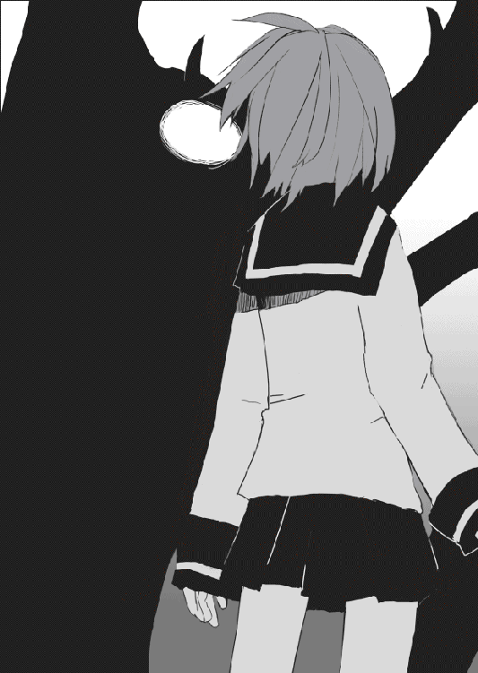
《お母......さん。お母......さん》
「すまないな」
グリコは、拳をかたく握りしめながらつぶやいた。
「お母さんは──おまえを殺さなくちゃならない」
《お母......さん》
そして殺劇が始まった。迅速な勢いで人々が避難したので周囲には人影がない。ばらばらと崩れた瓦礫が雨のように降り注いでいる。太陽を覆い隠すかのように巨大な夢界獣と相対して、グリコはたった一人で威風堂々と立っていた。夢界獣をこの場に足止めしているのは間違いなくグリコだった。
ぶおう、と夢界獣が躊躇いもなく巨大な前足を振りおろす。もちろん直撃すればグリコといえどもぺっちゃんこである。グリコは商店の屋根を飛びまわって華麗にかわし、そのまま夢界獣の振りおろされた腕に跳び移って肩まで一気に走りぬけた。夢界獣もこれには驚いたようで慌ててもう一方の前足で払い落とそうとする。グリコはそれすらも避けて、小さな商店ほどの大きさはある夢界獣の顔面に着地した。触角にぶらさがってどこを狙うか考えている。夢界獣は慌ててぎちぎちと鳴き暴れている。
──食らえ。
グリコは遠慮のない勢いで手に持つスプーンを投げた。しかしそれらは強靭な夢界獣の甲殻に弾かれて地に落下していく。グリコは舌打ちし、ターザンの要領で振り子運動をすると夢界獣の複眼に向かい跳んだ。手にはこれまたスプーンが握られている。自分の武器はこれしかなかった。ゆえに、この攻撃すら通じないようなら自分に勝ち目はないのだった。グリコは加速とともに力いっぱいスプーンを複眼に突き立てた。
ぐさり。手応え。しかし思ったよりも深く刺さらない。昆虫の複眼は哺乳類のそれとは違い堅い材質でできている。いかなグリコの豪力といえど突き破るのがやっとだった。
そして自分の体を傷つけられた夢界獣はあっさりと逆上した。
「────」
夢界獣は自分の顔が傷つくのにも構わず激しい勢いでグリコを殴った。グリコも瞬時に身をそらしたが距離が足りない。直撃し、全身にはしる激しい衝撃を感じながら吹っ飛んで、地面に叩きつけられるとゲブリと血を吐いた。
「くお......」
全身が壊滅状態だった。破壊力が違いすぎる。グリコはそれでもなんとか血を拭うと塀に体重を預け、ふらふらと立ちあがり、どうにか足の骨が無事だったのを確かめるとキッと夢界獣を睨みつけた。血まみれになりながらグリコはまだ戦いを諦めていなかった。
「この程度で......グリコを殺せると思うな！」
そして不屈の闘志を瞳にこめて夢界獣に叫ぶのだ。
「さぁ来い！ グリコはまだ生きているぞ！」
しかし──彼女は知らなかった。
彼女がそうして戦っているうちにも最悪の展開が進行していることに。彼女が夢界獣を倒そうが倒せまいが、そんなことに少しも未来を変える力なんてないことに。グリコは気づいていなかった。気づいていなかったところに彼女の不幸があった。
最後の時間が始まる。全てはこの救いようもない終末に向けてお膳立てされた展開に過ぎない。鈴音がグリコと出会ったのも。グリコが賢木にキスをしたのも。レギオン・バンダナが暴れたのも。夢界獣が孵化したのも。みんな──たった一つの最悪存在がある目的のために用意したシナリオだった。そのシナリオで幸せになれるのはそのシナリオの製作者のみ。『蟲』を操り夢界獣を操り林檎を狙う醜悪な生物のみ。
「あなたは──神を信じますか？」
その少年は極めて唐突に何気ない動作で現れた。何故だか周囲にあれほどいたはずの避難する人々の姿はなく、奇妙に静まりかえっていて、その少年の男の裏声のような女の低声のような不気味な声音が異常なまでに響いた。紫色のオーバーローブ。手には大きな水晶玉。フードを脱いだ少年の瞳は薄く紅色に煌いていた。
賢木愚龍と宇佐川鈴音は同時に凍りつく。すでに賢木はこの少年が敵だということを確信しているし、鈴音に至ってはこの少年とその仲間たちに首を絞められ殺されかけたのだ。警戒するのも無理はない。しかし警戒に意味はない。少年はよく理解していた。だから悠然と言葉を続けた。
「信じていても、信じていなくても、この場合はあまり関係ないんですねぇ。神という存在は確かにいます。今はわかりませんけどねぇ、過去にはちゃんといたんですよ。神と呼ばれる絶対的な存在が。しかし、神といえども生物は生物、怪我もする病気にもなる。もちろん寿命もありますねぇ。生物は宿命的に死というものから逃れられません。神といえどもそれは同じ。神はいつかくる死に怯え死を遠ざけようとしました」
『蟲』は静かに二人に近づいてくる。賢木は鈴音を背中にかばうようにして立った。
「そして神はその全知と全能を駆使してある禁断の果実を生みだします。神は自分の魂のおよそ半分を用いてエデンの園に林檎の樹を生やしました。林檎はやがて芽吹き成長し赤々とした果実を結ぶでしょう。その果実には地球の栄養を吸い膨張した神の魂が含まれています。一つの種から百の種が、百の種からは一万の種が、そうして神は自分の魂を増殖させようと目論んだんですねぇ。神の寿命が千年だとして、林檎の樹を作るのに使用した魂は五百年分の寿命を含んでいる。しかし林檎は増殖しますねぇ。百年もすれば林檎の樹はその千倍にも増えていることでしょう。そこから収穫した林檎を食べれば神の寿命も千倍に。それを続けていけば神はまさしく無限の命を手に入れることができます」
しかし──と、占い師は賢木の正面で立ち止まって笑った。
「林檎の樹に最初の果実が実ったときのことです。事件が起きました。林檎の樹を守らせていた人間の二人──アダムとイヴがその最初の林檎を食べてしまったのです。神の五百年分の寿命を、食べてしまったのです。もちろん神の寿命が千年だというのは予想であって本当のところはわかりません、一万年だったのかもしれない、十万年だったのかもしれない。それはわかりませんけどねぇ、しかし、アダムとイヴはその半分をあろうことか食べてしまったのです。神は怒り狂って二人を八つ裂きにしようと襲いかかりますが、二人はある存在の助けを借りてなんとか神から逃れることに成功します」
にやにやと、笑っていた。
「その存在はなんだったと思います？」
これは──『蟲』ではない。『蟲』にこんな表情はない。こんなに狡猾で、こんなに醜悪な笑顔を『蟲』は持たない。賢木は彼を正面から睨みつけて叫んだ。
「貴様は──」
「その存在はヘビと言いました」
獲物を飲みこむヘビの笑顔で、占い師の少年は静かにその名を口にした。
「ヘビは不老長寿に憧れていました。いやいや、全ての生物が等しく不死への願望を持っているんですけどねぇ。ヘビのそれは度を逸していた。死にたくない。長く生きたい。老いたくない。不死になりたい。そう願っていたヘビにとってエデンの林檎は喉から手が出るほど欲しくてたまらないモノ。だからヘビはそそのかしたんです。エデンの園で林檎を守っている二人にねぇ。林檎を盗んでしまえって、もっともらしい口調でねぇ」
くつくつと占い師は笑った。
「見事に騙されてアダムとイヴは林檎を盗みます。もちろんヘビに渡すためにねぇ。ヘビは自分の他に不死者がいるのはたまらないとそして林檎の樹を焼き払います。林檎には五百年だか五千年だかの寿命が含まれているはずで、ならばそれを食べたあとにでも神と同じこと──林檎の栽培をして、自分も不死になろうとヘビはそう思ったんですねぇ」
しかし──。
「そこでヘビにとって予想外の事態が起きます。なんとヘビが林檎の樹を燃やしている間に、アダムとイヴは半分こして林檎を食べちゃっていたんですよぅ。ヘビはどうしようもなくなってひとまずアダムとイヴをエデンの園から逃がし、彼らから林檎を奪う方法を考えようと自分もエデンの園から去ります。彼は不老不死を諦めていなかったんですねぇ。しかし、ほとんど無限に生きる二人と違ってヘビの寿命は短かった。彼は無念無念と子供たちに言い残しながら死んでいきました。もちろん子供たちが彼の遺志を引き継ぎます。......今も、ヘビの子孫はエデンの林檎を求めて活動を続けているのです」
自分のことのように占い師は流暢に語った。
まさか──と賢木は思う。
まさか、こいつが。
「ヘビのことは置いといて、林檎を食べて不死となったアダムとイヴはというと、彼らは林檎を自分たちの子孫にも残そうと考えました。そして二人は作ったのです。生と死の境目、人間だけが辿りつくことのできる領域にエデンの園を。二人はそこに林檎を埋めて樹を育てました。今もその場所に林檎の樹はあります。宇佐川鈴音さん──」
占い師は鈴音を見つめた。鈴音はびくりと反応した。
「──あなたが死にかけて辿りついた、林檎の樹こそがまさにそれです」
「ああ──」
鈴音は、悲鳴をあげてその場に崩れた。まさかそんなに壮大な背景をもつ樹だったなんて。恐ろしい。途方もない歴史の重みに鈴音は潰れてしまいそうだった。神の、ヘビの、アダムとイヴの妄念が求めた禁断の果実。それを──鈴音は食べてしまったのだ。
なるほど罪深い。
「林檎の樹を見つけることができる可能性はとても低く、さらにその林檎を食べることができる人間はとても少ないようです。成長の遅いエデンの林檎は滅多なことでは実らないし、林檎は高い位置に実るので樹をのぼってまで手に入れようとはあまりしない」
「喉が──渇いていたから」
鈴音は掠れた声で、虚空を凝視しながらつぶやいた。
「林檎が──無性に欲しかったんだ」
「つまりあなたは『生きたかった』のでしょう。幸せなことが何もなかった人生、やるせなくて、あなたはもっと幸せに生きていたかった。その願いが『喉の渇き』として顕れたんでしょうねぇ。エデンの園は精神世界に位置していますから......心の動きが体の動きとして如実に顕れてくる。なるほど興味深い」
占い師はどこか歯痒そうに言った。
「そこまでわかっていても、我々はエデンの園に近づくことすらできない。人間の精神世界には人間しか入れないんですねぇ。それは神も同じ。神は残された半分の魂を細々と増殖してどうにか生き延び、人間たちが盗んでいった林檎を取り返そうと誓いました」
そのために創られたのが『蟲』です──と占い師は笑った。
「過去、『蟲』たちは様々な姿で人間の前に現れました。天使とも呼ばれた。悪魔とも呼ばれた。悪魔が人間の願いを叶える代わりに魂を持っていく──というのは、わりとありふれた話でしょう？ その話に登場する悪魔というのが『蟲』です。林檎は魂に根を張りますからねぇ。奪うには魂ごと奪うしかないんですよぅ。そして魂は所有者が手放そうとしないかぎり肉体から抜けてくれません。しかし『こんなものいらない』とちょっと思うだけで、魂は人間から抜けていきます。願いを叶えるのはそれが理由。契約にのっとった要求に魂は逆らうことができません。だから悪魔──『蟲』は人間の願いを叶え、その見返りとして魂を奪っていくのです。そこに含まれる林檎もろともに」
占い師はザバリと動いて、水晶玉をその場に置くと笑った。
「それが本来の『蟲』の仕事──『蟲』は、そのために創られた生物なんですよぅ。彼らの目的は唯一エデンの林檎を取り返すこと。そして偉大なる創造主様に食べていただくこと。健気で、なんとも美しいじゃありませんか。そしてなんとも哀れじゃありませんかねぇ。不死を与えてくれる林檎を──みすみす手放すなんて」
占い師の表情には明確な侮蔑が顕れていた。
「馬鹿ですねぇ。愚かですねぇ。『僕』ならそんなことはしない。いるかいないかもわからない──すでに死んでいるかもしれない、神に、あの素晴らしい林檎を捧げるくらいなら──『僕』は自分で林檎を食べる」
「貴様は──」
賢木は再び同じ言葉を叫んだ。
「もちろん『僕』はヘビですよ」
言葉と同時にヘビはローブから手を抜き放つ。その手には先日、夜の学校で賢木から奪った小型拳銃が握られていた。鈴音が叫ぶ。賢木はしまったと思った。怪物相手なら逃げれば済むが銃ではそうもいかない。ヘビはまさにそのために賢木の銃を奪ったのだ。
「閣下、逃げ──」
たん。たん。たん。
ぶしゃ、と賢木に三発の銃弾が潜り込み血飛沫が盛大にあがる。賢木は鈴音を巻きこんで後方に倒れた。自分の顔に振りかかる賢木の血に鈴音がねじくれた悲鳴をあげた。
血が。血が。どんどん血が。止まらない。流れる。命とともに。
血が。
「......大丈夫。死にはしないよ。死ぬほど苦しむけどね」
ヘビは静かにそう言った。鈴音は意識を失った賢木に意味のない言葉を喚いている。
遠くではグリコと夢界獣が激しい戦闘を続けている。助けはない。希望もない。
鈴音はひたすらに泣きじゃくっている。
呼びかける声に賢木は答えなかった。
「......僕が『蟲』のフリをしているのは色々と便利だからさ。僕はね、五○年くらい前だったかな、偶然、林檎を持っている人間を発見してその林檎を奪った。林檎には因果を捻じ曲げ奇跡を起こす力がある。『蟲』はほとんど思考能力を持たないからね、ちょっと林檎の力を応用すれば簡単に騙せるのさ。例えば──」
ヘビの瞳から紅色が消える。縦に割れた金色の爬虫類の瞳が現れる。
「眼の色をいじくったり、声を変えたりね、それだけで連中は僕を仲間だと思いこむ。思いこませたらあとは簡単さ。あることないこと連中に教えて操ることもできるし、逆に林檎の持ち主を見つけたとかそういう情報を入手することもできる。僕の目的は林檎をたくさん食べて永遠に生きることだからね......『蟲』の姿をしていると、そういう意味ではとても便利なのさ。あの喋りかただけはちょっと慣れなかったけど」
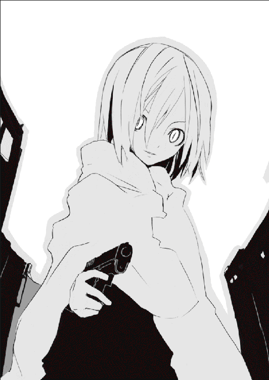
にこにこと笑って、とても邪悪に笑って、ヘビは血まみれの賢木を抱きしめて自分を睨んでいる鈴音を見た。激しい哀しみと怒り。アスファルトの地面に膝をつき、何も言わずにこちらを睨む鈴音にヘビは機嫌を損ねた。
「何を睨んでいるのかな、ん？ そのひとが撃たれたのが哀しい？ あはは寝惚けちゃいけないよ。そのひとが撃たれたのは──あなたのせいだってのに」
「あたしの──」
鈴音は震える声でつぶやく。とめどなく涙が溢れている。
「そう、あなたのせい。あなたが賢木愚龍を愛していなければ──彼は決して今日ここで僕に撃たれてはいなかったろうし、きっと幸せに暮らすこともできたろう」
「あたしの──あたしの」
鈴音は動転している。ヘビは畳みかけるように言った。
「つまりあなたが賢木愚龍を不幸にしたんだ。あなたのせいで彼は死ぬんだ。あなたとさえ出会わなければ、あなたなんか助けなければ、あなたなんかに愛されなければ、賢木愚龍は死ななかったんだ。あなたが賢木愚龍を不幸にした」
同じ言葉を繰り返して、ヘビはがくがくと震えている鈴音に緩やかな動作で近づいた。鈴音は愛する人が銃で撃たれて混乱している。本当に、全て自分が悪いんじゃないかと思い始めているはずだ。そこに付け入る隙がある。
ヘビは狡猾に笑った。
「あなたの魂をくれないかな？」
「────」
鈴音は理解できなくて──ぽかんとして、ただ沈黙した。ヘビはそんな彼女に顔を近づけてにっこりと笑う。天使のように悪魔のように、笑う。
「それが、賢木愚龍を救ける唯一の方法だよ」
鈴音は目を見開く。彼女は賢木を愛している。自分の命よりも、魂よりも大切に思っている。ならばその大切なものを人質にして脅せばいい。
ヘビは優しげな声で言った。
「簡単な話さ。あなたの魂には奇跡の林檎が含まれている。食べたとたんに死にかけていた人間が生き返るくらいにね。それはあなたも身をもって知っているだろう──」
一年前。
鈴音は死にかけて、しかし林檎を食べることにより命をとりとめた。
「あなたは僕に魂を渡すだけでいい。なに、簡単さ、声に出して『あなたにあたしの魂をあげます』と言うだけでいい。心からそれを認めるだけでいい。魂の所有権はそうしてあなたから僕に移る。僕はその魂を使って賢木愚龍を蘇らせると誓おう」
「閣下......」
意識を取り戻したか、薄目を開いて賢木が苦しそうな声をあげた。
「先生！ せんせぇッ！」
鈴音は泣き声で叫んだ。賢木は精一杯の声をふりしぼって言う。
「......駄目だ。こいつの話に耳を傾けるな。あいつはグリコが悪魔だと語っていたが、私はこいつこそが悪魔なのだと思う。こいつは閣下の魂を手に入れたいだけだ。......騙されるな。私など、見捨ててくれて構わない。閣下一人ならおそらく逃げられる。逃げて──生き延びて、くれ。私は......それだけで──」
たん。たんたん。
血飛沫。
「嫌ぁッ！」
鈴音は叫んだ。再び放たれた弾丸が賢木の体を震動させる。致命傷を避け、無限の苦しみを与える銃弾の位置。賢木は痛みに呻いた。鈴音の服がじゅくじゅくと血に染まる。鈴音はでたらめにヘビのことを叩いた。ばしばしと力いっぱい叩いた。
「やめて！ やめてよう！ なんでこんな──馬鹿ッ！」
がし、とヘビは鈴音の手を掴んだ。そしてもう一方の手で鈴音の頬を殴る。
鈴音は激しい勢いでアスファルトの地面に叩きつけられた。こめかみが割れて、血が染みだしてくる。痛い。だけど賢木はもっと痛いんだ。そして彼が痛いのは──。
ぜんぶ、自分のせいなんだ。
「......『蟲』を操り弁当に毒を仕込んだのも、レギオン・バンダナに命令をして彼を襲わせたのも、みんな、彼を瀕死の重傷にまで追いこみたかったからなんだよ」
ヘビはにやにやと笑っていた。
「僕はあなたではなく賢木愚龍を狙っていた。毒は致死量じゃなかったし、レギオンが賢木を殺してしまいそうになったら僕が助けに入るつもりでいた。結局はどっちも眼球抉子に邪魔されてうまくいかなかったけどね......まぁ、あの二つは成功したらそれでいいやという感じのものだったんだけど。ちなみに空き地であなたを襲ったのは確認のためね。あなたの林檎が成長してなくてあなたが死ぬようだったら──殺そう、とね、だってそれならこんなに面倒臭いことしなくて済むんだもん。殺して魂を奪えば終わり。結局はそれも失敗だったけど──今日、こうして目的を達成できたからそれで良しとするよ」
血だらけの賢木を見下ろしてヘビは邪悪に微笑んだ。
「さぁ、僕に魂をちょうだい。賢木に死んで欲しくないならね。もちろん僕を信じられないのなら魂をくれなくてもいい。賢木が死ぬだけだもんね。あなたにとっちゃ家族でもない他人が一人死んでしまうだけだ。痛くも痒くもない。それが他人ならね──」
他人。
他人──なんかじゃない。
鈴音は賢木を見つめた。血を失い、白くなっていく賢木の顔。叫びだしたい感覚。眩暈。頭がくらくらする。嫌だ。こんなのは嫌だ。
賢木が死ぬのは嫌だ。そんなのは間違っている。
鈴音は賢木を愛している。
「先生......先生」
そんな鈴音の純情を利用して──ヘビは、彼女の魂を奪おうとしているのだ。それが彼の考えた策。宇佐川鈴音の魂を奪うのに最も効果的な策。
鈴音の迷いは短かった。
確実に死に向かう賢木を前に、この優しすぎる女の子が他の選択肢を選べるわけもない。
鈴音は静かに宣言した。
「......あなたに、あたしの魂をあげます」
ふふ、とヘビは笑った。
ふふ、ふふふ、と笑った。
それはとても邪悪な笑い。世界で最も狡猾で醜悪な笑い。
鈴音はぽろりと涙を零し、最後に賢木を見つめて囁いた。
「......先生。あたしはずっと返したかった。あなたにもらった恩を。あなたにもらった命を。あなたにもらった愛を。あたしは──返せたかな。先生、愚龍さん──」
鈴音は賢木に唇を重ねた。
「──好きでした。ありがとう」
そしてそのまま倒れた。宇佐川鈴音は動かなくなった。
──もちろん、ヘビは宇佐川鈴音になんの同情もしていなかったし、彼女にかけた言葉も嘘に決まっていた。彼には賢木を助ける気など全くない。せっかく手に入れた林檎を──そんな馬鹿なことに使えるか。なんとも、どうしようもないお人好し。そして同時にどうしようもない愚か者。宇佐川鈴音。本当に──賢木のために魂を捧げるとは。ヘビは壊れたようにゲラゲラと笑った。可笑しくて可笑しくてたまらなかった。なんていう悲劇──なんていう美しい愛だろう。素晴らしい！ 感動した！
おかげで自分は二つ目の林檎を手に入れることができた。
これで永遠にまた一歩近づいたのだ。
ヘビはひとしきり笑うと鈴音から奪った魂を林檎ごとあっさりと食べ、死にかけの賢木愚龍に近づくと躊躇いもなく銃口を向けた。約束なんか守るわけもない。宇佐川鈴音は無駄死にだ。全く──少しでも、ヘビが賢木を助けると思ったのだろうか？
「お生憎さま。僕は──それほどロマンチストじゃない」
気絶している賢木の額にしっかり狙いをつけて、ヘビは心底楽しそうに笑った。
「ばーん」
ばーん、と、ヘビの手にした銃がばらばらに吹き飛んだ。
「────」
未だ痛覚を忘れていないヘビの顔に苦痛の色が混じる。銃を破壊しただけでは飽きたらず手の甲にまで潜り込んだその飛来物は、深々と突き刺さり強烈な痛みを招いた。
「ぐ......」
ヘビは慌てて攻撃のきた方向を仰いだ。仰がなくてもそこに誰がいるかはわかっていたのだが。己の手の甲を突き破り血を滴らせる凶器はスプーン。こんなもの、主力武器に使っているのはヘビの知るかぎり一人しかいない。
「眼球......抉子」
「......話はだいたい聞かせてもらったぞ。グリコは耳がいいのでな」
突き刺すような声音で告げて、道の向こうから歩いてくるのは眼球抉子。血にまみれた顔。セーラー服も紅く染まっている。睨みつけるは銃口の瞳。特徴的なオオカミヘア。
グリコは怒りに満ちた声で言った。
「下衆が......おまえの眼球はえぐる気にもならん」
「む......夢界獣は」
こんなに早くグリコが現れることは予想外だったのだろう、ヘビは痛みよりも驚愕に揺れているようだった。グリコは推測する。ヘビの予定ではまず鈴音から林檎を奪い、夢界獣に苦戦しているグリコを攻撃し、再生が追いつかないほど痛めつけ、それからゆっくり魂を奪う方法を考える──そんなところだったのだろう。
下らない。
ヘビは空を仰いだ。さきほどまで町で破壊のかぎりを尽くしていた夢界獣はどこにもいない。目を見開き、信じられないというように彼は叫んだ。
「まさか──まさか倒されてしまったのかッ？」
グリコは静かに嘆息する。
「気づいていなかったのか。悪趣味な遊びに夢中で周囲への注意がおろそかになっていたな。夢界獣は滅んだぞ。爆弾で焼き尽くされてな」
「ば、爆弾......」
「賢木が呼んでいたのだろう。在日米軍だか自衛隊だか知らんが空軍が現れてな、爆弾を落としたので夢界獣は死んだ。威力が抑えられていたのかあまり音もなく、爆発もしなかったから──焼夷弾とか呼ばれるものだったのかもしれない。最新の軍事については詳しくないが──この国で戦争が起きたときにも同じような爆弾が落とされていたものだ」
正確には爆弾と呼ばないのだが、そんなことグリコにはわからなかった。ただ夢界獣がいともあっけなく殺されたのはわかった。お母さんお母さんと叫びながら夢界獣は死んだ。グリコはそれを思うとあの怪物が不憫でならない。
「どれだけ不幸を生むつもりなんだ──ヘビ、だったな、今まで事件の裏に見え隠れしていた黒幕がおまえか。どうにも『蟲』が多いと思ったら──おまえが呼び寄せていたんだな。全ての謎が解けたよ──少し、遅かったけど」
グリコは哀しみに目を細めながら言って、横たわる賢木と鈴音を見つめた。
「......すまない。守れなかった」
ヘビが何かを叫んでいたがグリコは完全に黙殺した。そして二人に緩やかに歩み寄ると、そっと、そばで中腰になった。全身は血にまみれていた。左腕が妙な方向に折れていた。全身からとめどなく血が流れていた。流れる血はグリコの目から溢れる涙と混ざり、さながら血の涙のように頬を伝っている。
グリコはひとしきり泣くと、自分らしくない行動に苦笑しながら手を振った。
ぽう、と、奇妙な音がした。少なくともグリコにはそう聞こえた。しかしすぐに、魂が抜けて動かなかった鈴音がぱちくりと目を開き、銃弾に全身を貫かれた賢木の傷も徐々に消えていく。二人は呆然とした顔ですぐそばのグリコの顔を見ていた。
「グリコ......ちゃん」
鈴音が鈴を転がすような、ちょっとだけ金属質な声でつぶやく。
「あれ──あたし、なんで、死んだんじゃ......」
賢木も不思議そうな顔をしている。
「傷が──治る、まさか、これは──」
「あははははははは！」
誰かが笑った。
「あははは。はは。あはははははははは！ はははははは！ あははははは！」
笑っているのはヘビだった。
「ふふあははは！ あは──―あっはあああ！ はははは！ はは！ はははは！」
嘲るような声だった。
「馬鹿だ。愚かだ。可笑しい。間抜けめ！ そんな──あはは。そんなことをあなたがするとはね！ まさか、そこまで腑抜けて──そこまで愚かになっているとは！」
「グリコが愚かだというのならきっとそうなんだろう」
静かに、グリコはつぶやいた。
「だけどおまえにグリコを笑う権利なんかない」
「笑うよ。笑うとも！ だって滑稽じゃないか！ あなたはとても滑稽なことをしたんだ！ 火事の現場に突入しようとして水と間違えて油をかぶるみたいな！ とんでもなく間抜けで愚かなことをしたんだよ！ 笑わないわけがないじゃないか！」
あはははははははとヘビは高らかに笑った。
グリコは彼を無視した。
そして決意を秘めた真摯な顔で二人を見つめるのだ。
「今、おまえたちに林檎を食べさせた。グリコがずっと守ってきた、グリコの仲間たちの林檎だ。心は肉体に宿るから鈴音は鈴音のままだし、賢木も──」
ごふ、とグリコは盛大に血を吐いた。林檎の力が弱まって再生力が落ちている。
騒ぐ鈴音と賢木を安心させるように微笑んで、グリコは続けた。
「林檎はな、宿主が重傷──命に関わるほどの傷を負うと本来の力を発揮する。宿主の傷を治し痛みを和らげるんだ。それはもともと神の力だったのだろう。おまえらが食べたのは神の魂の半分だ。奇跡を起こすのも因果を捻じ曲げるのもみんな神の力なんだろう。......ヘビの言葉を信じるとすればな」
グリコは夢界獣と戦いながらちゃんとこっちの話も聞いていた。林檎の力で異常に増幅された身体能力の効果である。
「......その神の力があれば、賢木、おまえは死なない。銃弾は消えないので自分でぶっこ抜け。痛いが我慢。鈴音の再生力が強まったのも、食欲がなくなったのも、グリコが眼球をえぐったからだ。おまえの林檎はあそこで大きく成長していたんだな」
あの日から随分と時間が経った気がする。まだ二ヶ月も経っていないのに。グリコにとってはずっと昔のことのように思える。それは自分があのころよりも成長したからなのかもしれない。宇佐川鈴音と出会って──停滞していたグリコはちょっとだけ大人になれたのだ。この林檎はその恩返し。グリコは溢れる血を拭いもせずに言った。
「おまえらを、グリコの大切なひとだと思っていてもいいか？」
それはグリコの本当の気持ち。そしていつか鈴音がした問いかけの答え。
「グリコはおまえらが好きだ。おまえらを大切に思う。それは千年前に置き忘れてきた大切な感情だ。ずっと屍のようだった。なんの目的もなく生きてきた。ただ『蟲』を殺し眼球をえぐり怪物のように生きていた。しかしおまえらと出会って、おんなじ時をちょっとでも過ごせて、グリコは生きていてよかったと心から思えたんだ。......千年間、ずっとグリコはおまえらを探していた。おまえらに会えて報われた」
ぱたた、と血が地面に落ちた。
「......グリコは、生きていてよかった」
カラリ、とスプーンが落ちた。
「......グリコちゃん？」
鈴音は儚くなってグリコに声をかけた。どこか遠くへ行ってしまうような気がしたのだ。 鈴音は下からグリコを抱きしめた。賢木も鈴音ごとグリコを抱きしめた。
言葉はなかったけれど、それがグリコの問いへの答えになると思った。
「......ありがとう。二人とも。嬉しいよ。幸せ──」
彼女はゆっくりと二人を振りほどき、真っ直ぐにヘビと相対した。
「──グリコは大切なものを見つけた。大切なひとと出会えた。それだけで千年生きてきた意味はあった。ありがとう......鈴音、賢木」
グリコは混じり物のない純真な声でそう告げて。
「さよなら」
振り返らず、静かにそれだけを口にした。
どういう意味かはわからなかった。
ヘビはにたにたと笑っている。馬鹿にするような顔だった。
「あなたはとても愚かな選択をしたよ、眼球抉子。林檎を持っていても、魂を奪う方法なんてのはいくらでもあるんだ。そうだねまずはあなたを八つ裂きにしてしまおう、首だけ残して置いといて、それから賢木愚龍と宇佐川鈴音を切り刻んでしまおう。二人にはまだ痛覚があるからね、自分から殺してください終わらせてくださいと懇願するまで徹底的に痛めつけよう。二人が魂を僕に渡したら絶望してあなたも──」
「哀れだな」
「なに──」
グリコの発言にヘビは口上を中断して表情を歪める。
「なんて──言った？」
「......哀れだなと言ったんだ。ヘビ。間抜けとはおまえのことだ。愚かとはおまえのことじゃないか。他人を笑う権利などおまえにはない。おまえがいちばん滑稽じゃないか。いちばん滑稽な存在がどうして他人を笑えるんだ？ ふざけるのも大概にしろ──」
グリコは静かな口調で言った。
「おまえも結局のところ、おまえが馬鹿にした『蟲』と同じじゃないか。おまえは先祖の悲願を達成するために林檎を探しているんだろう。何百代前のおじいちゃんの遺志なのか知らないが、そいつのために林檎を探して、一つ見つけてもまたもう一つ、馬鹿だな──どれだけ林檎を見つけても、誰もおまえのことなんか誉めちゃくれないぞ」
「な──」
ヘビは侮辱されたというように眉毛を吊りあげた。
グリコは威風堂々と叫んだ。
「どこにおまえの意志がある？ どこにおまえの目的があるんだ？ おまえは先祖が林檎を探していたというただそれだけの理由で、こんなに汚い真似をしてまで林檎を探しているんだろう。他人に与えられた目的にそって行動して、その目的を達成して喜んで──愚かで間抜けで哀れだ、ヘビよ。グリコもいいかげん最低の生物だが、自分の汚いところを他人のせいにしないからおまえよりもまだ少しはマシだ」
世界に浸透する美しい声。
「鈴音の魂を奪う前、おまえは長々と講釈を垂れたな。あれはなんのためだったんだ？ 免罪符のつもりか？ どれだけ高尚な、重い歴史を背負った理由であろうとも、おまえのやっていることはただの悪魔の所業だぞ。人間を騙して殺して魂を奪って、それだけだ。どれだけ格好をつけてもおまえはただの怪物でしかない。しかもその怪物は誰かの操る将棋の駒だ。自分の意志なんてない──王将を取ろうが金将を取ろうがおまえの勝手だが、結局おまえはその盤上から抜けることもできないただの間抜けじゃないか」
「間抜け......」
ヘビの顔が引きつる。グリコは怯まずに断言した。
「間抜けだ。先祖代々林檎を求めて我ら一族は戦ってきたんだ──けっこうけっこう、格好いいじゃないか、で？『僕』の目的『僕』の目的と散々やかましかったが、それで『おまえ』の目的というのはなんなんだ？ 林檎を手に入れることか、それは『先祖』の目的だろう、『おまえ』の目的はなんなんだ？『おまえ』はいったい誰なんだ？ 答えてみろ、答えられないじゃないかこの間抜けが！」
グリコは叫んだ。ヘビはびくりと背筋を震わせた。
「僕は──」
最後まで言わせず眼球抉子は述べる。
「哀れな名もなきヘビよ、おまえも結局は『蟲』と同じでただ過去の伝統という神様に林檎を届けていただけだ。林檎を見つけて探して手に入れて、それでもおまえは虚しかっただろう。当たり前だ。それはおまえの目的じゃない。金将を取っても喜ぶのは駒でなくそれを操る棋士だけだ。棋士とは『先祖』だ。そして『おまえ』はただの駒でしかない。過去の怨念に操られ罪を重ねる哀れな駒よ、悔い改めろ！」
グリコは激怒をこめて叫んだ。
「よくもそんな下らない理由で何人もの人間の命を奪ったな。たくさんの不幸を生んで町を破壊し平和を乱し、あまつさえ鈴音と賢木の絆まで断ち切ろうとした。鈴音の純情を食い破り賢木の愛情を利用したおまえはなるほどヘビだ、下らない！」
「く──」
ヘビは、ヘビはぐらりと揺れて、それでも精一杯の声で怒鳴った。
「く、下らない、だと。僕の目的を──ゆ、夢を。不老不死の」
「それは『先祖』の夢だ！ 操られていることにまだ気づかんかッ！」
揺れるヘビにグリコは真っ直ぐな声で叫んだ。
「『おまえ』には目的などない、ましてや『夢』なんてものもない！ ただなんとなく先祖の悲願を達成すれば幸せになれると思っているだけだ！ 幸せというのはそんなものではない！ おまえのことなど誰も誉めちゃくれないぞ！ 大切なものを持たないおまえが他人の大切を奪うなど言語道断だ！」
「う──うるさい、うるさいうるさいうるさい、黙れ！ ぼ、僕はずっと──林檎を探して生きてきたんだ。お父さんも、お祖父ちゃんも、そうして死んで──僕の一族は」
ヘビはぐらぐらと揺れていた。なんとも哀れな姿だった。一族の悲願という中身のない偶像に一生を捧げ、いつからか彼は見失っていたのだろう、幸せということの本当の意味を。だから彼はこんなにも孤独なのだ。だから彼はこんなにもがらんどうなのだ。
ヘビは乱れながらも強がって叫んだ。
「て、適当な言葉を並べて、僕を言い負かそうたってそうはいかないぞ！ 僕は僕の正しさを信じているしあなたたちの林檎も諦めない！ そうだ、三つの林檎だ、あなたたちの林檎を奪ってまた僕は永遠に近づくんだ！ それで──それで、それで」
「それで、どうする？」
グリコは静かにそう言った。ヘビは逆上して叫んだ。
「あああああ！ うるさいなぁ！ うるさいよぅ！ それからのことはそれから考えるんだ！ 今はとにかくあなたたちの林檎が欲しい、よこせッ！」
ぐわん、とヘビは獣のような勢いでグリコに襲いかかった。右拳。グリコはもろに食らって後方に吹っ飛んだ。林檎を二つも失い彼女も弱っているのかもしれない。
ふう、ふう、と泣きそうな顔でグリコを睨みつけるヘビ。
グリコは鼻血を手で拭って、呆然としている賢木と鈴音に小さな声で告げた。
「賢木、鈴音、ここはグリコに任せておまえたちは逃げてくれ。この哀れな生き物の始末はグリコがする。おまえたちの非日常も終わりだ。平穏に──帰れ」
賢木は言葉を返せない。鈴音は必死な顔で叫んだ。
「グリコちゃん、何を──」
「賢木」
鈴音がテコでもここを動かないという顔をすると、グリコは賢木に呼びかけた。
「鈴音をつれてなるべくグリコから遠ざかってくれ。愛しているんだろう、ずっと守ってやるんだぞ。生きることに飽きたら林檎は『蟲』たちにくれてやれ」
そして彼女は噛みしめるようにつぶやいた。
「永遠の命なんて──つまらないものだからな」
それは賢木にというより、ヘビに向けて放たれた言葉のようだった。
「......な、何をさっきからごちゃごちゃと。逃がさないよ。あなたたちはみんな今から僕が八つ裂きにするんだから。僕は林檎を二つも持っている。一つしかないあなたじゃ僕は止められないよ。無駄な抵抗はやめて──」
「素人が」
グリコは短くつぶやいた。ヘビの表情が変わる。
「し──」
「林檎の力の強さは個数だけで決まるんじゃないぞ。青臭い未熟な林檎を二つ並べてどうなるものでもない。自慢じゃないがグリコの林檎は千年かけて熟しているんだ。五○年の林檎と一年の林檎、そんなもの──何個持っていても力が強まるものか」
「しかし！」
ヘビは叫んだ。
「林檎を一つ持っていた時点で、僕の戦闘力はおそらくあなたと同程度だった。そこに宇佐川鈴音の林檎が加わったんだ、僕はきっとあなたより──」
「賢木、鈴音」
グリコはまたもヘビを無視して、動こうとしない二人に優しくつぶやいた。
「早くここから去ってくれ。お願いだから......早く」
「グリコ？」
「頼む」
ぴしり。ぱし。ぴしぴし。
ぱきり。
と。
何かが折れるような音がした。あるいは亀裂がはしるような音。それはグリコから聞こえてきているような気がした。見ると、グリコの背中が真っ赤になっていた。
「────」
真紅の花が、咲いた。
グリコの背中を突き破り生えてきたのは真紅の翼。硬質的でさながら戦闘機の羽のように見える。ただ細くて、触れれば折れそうで、しかし無数に生えてきていた。次から次へと生えてきてそれは大きな翼の形を紡いだ。ばさり、と羽ばたく。
「......どうして、グリコが戦闘のときにスプーンしか使わないか教えてやろう」
驚愕に声も出せないヘビに、グリコは静かな声で告げた。
「銃だの剣だの、戦いに使うにはもっと効率的な武器があるのにな......。何故かグリコはスプーンしか使わない。何故だかわかるか？ 考えたこともないか？」
彼女は誰に向けて言葉を口にしているのか。
「......怖いんだよ。人を殺すための武器を持つと、グリコの心にどうしようもなく存在している獰猛な部分が解き放たれるような気がしてな。だからグリコにとってスプーンは自分に許せる限界の武器だったんだ。短くすぐ折れるスプーンが──戒めだった」
語るうちにもグリコの体は異形の姿へ変貌していく。特徴的なオオカミヘアが血で染めたように紅くなる。セーラー服がびりびりと破れ甲殻類のような肌が覗く。足が伸び腕が伸び背丈が一気に倍増した。全身を真紅に染めた禍々しくも美しい姿。
これが──神の姿か。
グリコは低く嘲笑した。
「......おまえがグリコと同程度の戦闘力を持っている？ おいおい、笑わせてくれるな、解放すれば自分でも制御できないこんな恐ろしい力と同程度だと？」
ぶわ、とグリコの翼が膨らみ、次の瞬間には大きく羽ばたいている。
ヘビはその風圧に耐えられずあっけなく吹っ飛んで商店に突っ込んだ。
「おまえが二人にやろうとしていたことをこれからグリコが実行してやろう。殺してください終わらせてくださいと懇願するまで痛めつけてやる」
悲鳴が聞こえた。ヘビの──恐怖の叫び声。とても哀れな声だった。
「賢木」
グリコは、最後に小さくつぶやいた。
とても哀しそうな、寂しそうな声だった。
「......まだいたのか。鈴音をつれて逃げてくれと言ったはずだろう」
賢木はグリコを見つめている。鈴音はただ彼女の名前を叫んでいる。
理屈ではなく、これでグリコとはお別れなのだとわかった。
「早く──行ってくれ。もう、グリコには自分が抑えられない」
声もすでにあどけない少女のものではなくなっていた。
「......グリコの本性はこれだ。人ではない怪物だ。その怪物はしかしおまえらと一緒に過ごせて少しでも幸せだったよ。ありがとう──さよなら。おまえらはおまえらの日常に帰ってくれ。全ての非日常は──眼球抉子が責任をもって回収する」
完全に異形へと姿を変えたグリコはそれだけつぶやいて。
最後に、賢木と鈴音を肩越しに見た。
つう──と、グリコの眼からは涙が流れていた。
「......見ないで」
冬休みが終わり、当たり前のように始まった新学期にしかし眼球抉子という名前の女の子の姿はなかった。彼女が使用していた机も冬休みの間に撤去されていたし、出席簿を見ても一一番の位置に彼女の名前はなかった。わかっていたことだけれど、それを確認したとたんに賢木愚龍は切なくなってしまった。
眼球抉子は二人の前から完全に姿を消してしまった。
理由はわからない。
まるで彼女はその存在それ自体が夢だったかのように、賢木の平凡な日常から綺麗にいなくなってしまった。グリコがどうなったのか。ヘビがどうなったのか。『蟲』がどうなったのか。そんなことは賢木にわかるわけもない。夢界獣が破壊した町も冬休みの間に修復されたので、彼女の残したものといったら思い出と──あとは二つの林檎だけだった。
二つの林檎は今も賢木、そして鈴音の魂に根を張っているのだろう。賢木の食欲は確実に落ちているし、たまに『蟲』らしき人間が紅い瞳で自分を見ていることもある。当分は気が抜けそうもないが、『蟲』も何をしてくるわけでもないので賢木はわりと安心していた。鈴音と二人なら、永遠に生きていくのもいいんじゃないのかと思っている。
二年後には鈴音も高校を卒業する。それまでは未来のことを考えず、楽観的に生きていくことに決めた。せいぜい人生を楽しんで飽きるまで生きていこう。グリコとの思い出を胸に抱き、ずっと生きていく。きっと地球のどこかでグリコも同じことを考えている。
そう思うとちょっとだけ勇気がでた。
自分は一人じゃない。大切なひとたちがいる。グリコと──そして宇佐川鈴音が。
グリコがいなくなったので鈴音もまた一人暮らしに逆戻りである。寂しがっているだろうに、彼女は決して弱音を吐かない。鈴音は随分とたくましくなったように思う。自分はどうだろうかと考える。ちょっとは強く成長できただろうか。
成長できていようが、いまいが。
賢木は──彼女と会えてよかったと思う。
私立観音逆咲高等学校一年Ｂ組担当教師賢木愚龍は冬休みボケしている生徒たちに朝、今日の予定やら今後の予定やらを伝えていた。以前と同じ平凡な朝。またこうして普通の生活に戻れるなんて思わなかった。全てはグリコのおかげである。彼女は今どうしているのだろうか。またどこか賢木の知らないところで誰かを救っているものか。
そんなことを考えながら賢木が教壇でぼんやりしていると。
がらり、と唐突に教室の前扉が開いた。
賢木は絶句したし鈴音も絶句したしもちろん他の生徒たちも絶句していた。どうしてこうもこいつは普通の登場ができないのか。前扉を開けたまま閉めもせずにその人物はずかずかと歩き、何も言わずにいきなり黒板に乱雑な文字でこう書いた。
転校生。真・眼球抉子。
あまりのわけのわからなさにさすがの賢木も言葉がでない。特徴的なオオカミヘア。着ている服はセーラー服。未だにうまく結べないのか靴紐が団子になっている。世界の全てに挑戦しているかのような高圧的な仏頂面。瞳にはどこかしてやったりという満足そうな光がある。以前のグリコにはなかった人間的な瞳の光。
突き刺すような口調で彼女はさも当たり前のように名乗りをあげた。
「転校生の真・眼球抉子だ」
「ちょっと待て」
さすがに賢木がそこで止める。グリコは憮然とした表情で賢木を見た。
「どうした」
「どうしたじゃない。......グリコ、いったいなんなのだ『真』ってのは」
ちなみに二人は教壇に隠れるようにして小声で会話している。
生徒たちには怪しまれているようだがそんなことはどうでもいい。
「『新』にしようかとも思ったんだがな、ちょっと格好悪いかと思って」
「貴様はゲッターロボか。めちゃくちゃ怪しいだろうが。どこの世界にそんな名前の女子高生がいるんだ。普通に眼球抉子と名乗ればいいだろうに。......というか、どうしてわざわざまた転校してくるのだ。貴様の学籍はちゃんとあるんだから普通に登校してこい」
「ないぞ」
グリコはあっさりとそう答えた。
どういうことだと賢木は問い返す。
「グリコがヘビと戦った日にな、グリコは林檎の力を使い果たしてしまったんだ。神の力を解放したんだから仕方ないんだが、その影響で、林檎の力でいじくっていた学校でのグリコの居場所とか、でっちあげたグリコの戸籍とかがまとめて消滅してしまったんだな。他の二つの林檎もおまえらにあげちゃってたし。そいで仕方なく、こうしてまた新たに手に入れた林檎の力で転校してきたというわけだ」
「新たな──林檎？」
「ヘビから奪ったやつ」
あぁ、と賢木は納得する。
「結局奪ったのか。あいつも可哀想に」
「可哀想なものか自業自得だ。それに──グリコも鬼じゃない、ヘビ本体の魂は奪わずに見逃してやったよ。その正体がなんと本当にヘビだったんだな。林檎の力で人間の姿をとっていたみたいだが──まぁ、また偶然に林檎を手に入れでもしないかぎり、あいつが悪さを働くことは物理的に不可能だろう。それに心配しないでも大丈夫だ。たぁっぷり恐怖を刻みこんでやったからな。あいつは二度とおまえらの前に現れることはあるまいよ」
「何をやったんだ......」
「さぁな。知らぬが花だ。ただあいつを苛めているうちになんか二週間ほど経過してたんで結局、鈴音の家には今日まで戻れなかったんだ。......心配かけてすまなかったな」
グリコはちょっとだけ申し訳なさそうに言った。二週間もかけて苛めたっていったいどんな苛めだったんだろう。興味はあったがなんか怖いので考えないことにした。
グリコは恥ずかしそうに言う。
「......本当は二度とおまえらの前に姿を見せないつもりだったんだがな。我ながら女々しいよ。駄目だな、たった二週間でこんなに会いたくなる。グリコはどうやらおまえたちと離れていたくない。生きるのに飽きるまで──一緒にいてくれ、賢木」
「うむ......」
賢木は思わず納得しかけたが、まだ気になることがあったので尋ねた。
「おいグリコ、そういうことなら名前は『眼球抉子』のままでよかったんじゃないか？ 新しく学籍を作るっていっても前の記録は消えているんだから──」
「記録は消えても記憶は消せぬよ。短い間だったとはいえ、グリコの名前を覚えたクラスメイトも少しはいるだろう。同姓同名の転校生が二回も来るというのは異常な事態だしな。しかし『真・眼球抉子』を名乗ることによりそうした連中の疑団も見事に解消、『よく似た名前の別人だなぁ』となるほど納得し──」
「納得するか。だいたい貴様はインパクト強かったから全員が覚えているぞ」
「なに。馬鹿な」
「貴様はもうちょっと自分の特異さを自覚するべきだな......」
賢木は呆れ、それでも彼女と再会できた喜びから笑顔になって言った。
「ま、そういうことは後々考えていけばいいさ。お帰りグリコ。色々と話したいことはあるが──まずは、転校生として自己紹介くらい済ませとけ」
そうしてようやく賢木は隠れていた教壇から立ちあがった。グリコもそれに続いて、まだ呆然としているクラスメイトたちにぶっきらぼうな調子で告げた。
「改めて。転校生の真・眼球抉子だ。ただ呼ぶときはグリコと呼べ。真・グリコでも一向に構わない。呼びたくなければ呼ぶな。むしろ話しかけるな。何もちょっかい出さずに放置してもらえれば別に危害は加えないから、そのつもりでグリコにはなるべく話しかけたりちょっかい出したりするな。グリコを不愉快にさせた人間は無差別で眼球えぐっちゃうぞ。おまえら目玉が大切だったらグリコの機嫌を損ねぬように。お喋りは死ね。野次馬も死ね。おせっかい焼きも死んでしまえ。以上──」
と。
前回のリプレイのような自己紹介を一気に並べたて、前を見たグリコと鈴音の目があった。鈴音は柔らかい表情をしていた。しょうがないなぁグリコちゃんは、という顔だ。《......そうじゃないでしょう、そんなふうに他人を遠ざけようとしちゃ駄目だよ、みんな本当はグリコちゃんと喋りたいと思っているし、グリコちゃんだって本当はみんなと仲良くしたいと思ってるんでしょう？》鈴音が以前にグリコに向けて語ってくれた言葉。
思いだし、しばらく悩むような顔をして、やがてグリコは決断した。
怪物のように生きていた彼女はそして人間に戻ったのだろう。
「──と、言おうと思っていたんだが......」
急に勢いをなくし、うつむいてしまうグリコ。
「そういうのはなんだ、お互い気分が悪いだろう。グリコもあんまり周囲が不快になるのは好きじゃない。だから──えぇと、なんと言えばいいか──」
言葉が出てこないらしい。クラスメイトたちはざわついている。鈴音はがんばれグリコちゃんという顔をしている。賢木も前に進もうとしているグリコを温かく見守っている。
グリコはやがてペコリとお辞儀し、小さな声でつぶやいた。
「──とにかく、よ、よろしくおねがいします......」
瞬間、割れるような拍手が教室に響いた。
グリコはびっくりした顔をしている。
──ほら、ちゃんと心を開けば、みんな優しさを返してくれる。それは人間の素晴らしさである。人間はこうして支え合い、愛し合って生きているのだ。
千年前に死んだ女の子は千年間の放浪の果て、大切な人たちを見つけ、素晴らしい居場所を手に入れた。もう不幸になるのは自分だけでいいなんて言葉を彼女は口にしないだろう。グリコは不幸なんかじゃなく、こうして幸福になれたのだから。
こんにちは。日日日です。この「蟲と眼球とテディベア」という小説は『五冊目』の『一冊目』ということで、個人的には節目となるものです。まぁそんな作者側の立場はどうでもいいとして、読者の皆さんは独立した一つの話としてお楽しみくださいな。
さて、このあとがきを読んでくださっている読者の皆さんがどのような立場にいるのか、僕にはわかりません。まぁ仮定として本文を全て読み終わった状態とします。如何だったでしょう、まず粗筋と内容の雰囲気がかなり違うことに気づいていただけたはずです。しかしそれは粗筋を制作してくださった担当さんのせいではなく、全て僕のせいなのですわ。
そもそもこの小説は最初コメディにするつもりで書き始めたのです。あのころ僕はコメディに憑かれていて、いかに阿呆な話が書けるかという阿呆な挑戦に心血をそそいでいました。「蟲と眼球とテディベア」も、そういった流れの一環として書いていこうと決めたのです。そもそも最初の題名は「一年Ｂ組眼球抉子ちゃんの日常」でしたし。
なので登場人物の名前も「眼球抉子」だとか「うさりん閣下」だとか、とことん阿呆です。最初に隕石が落ちるはずでしたし、最後に巨大テディベアが町を蹂躙する予定でした。しかしいざ書き始めてみるとコメディのはずがどんどんシリアスに......あれれ。
これはもちろん僕の力量不足が招いた結果なのですが、これはこれで良かったかもしれません。コメディの舞台と設定でシリアスな話を書くという滅多にできない経験ができましたし、幸運なことに編集長特別賞までいただけました。この作品がこれからどうなっていくのかはわかりませんが、とりあえず、少しでも読者の皆さんの心に届けば幸いです。
では最後に、この小説に関わっていただいた全ての方に心よりの謝辞を送ります。
まずは、生まれて初めて出版社に招かれ、緊張しまくっていた僕を「......面白かったよ？」という一言で救ってくれた担当の金田一さん。卒業式に花束を贈ってくれたり、さりげない心配りに感謝しております。
そして、絵師の三月まうすさん。他シリーズに比べれば地味めなキャラが多いこの作品を、独特の妖艶なイラストで飾っていただきました。正直に告白すると、僕は三月さんの絵を見るまでグリコが嫌いでした。今は大好きです。おどろおどろしい、妖怪みたいなやつかと思っていたら、意外に可愛くてびっくりしました。
最後に、読者の皆さん。
小説というのはただの文字ですが、それでも、あなたたちがその文字を読んでいる間、あなたたちの人生の貴重な時間を消費していただいているわけです。作者としては、その時間が「浪費」にならないよう、ちょっとでも面白い小説を書いていこうと思います。
日日日。
著者
日日日（あきら）
第１回ＭＦ文庫Ｊライトノベル新人賞、編集長特別賞を受賞。
１９８６年生まれ。
２００４年から２００５年にかけ、合計５社の新人賞を受賞してデビュー。既刊に『ちーちゃんは悠久の向こう』『うそつき』『ピーターパン・エンドロール』（新風舎文庫）、『アンダカの怪造学』シリーズ（角川スニーカー文庫）、『狂乱家族日記』シリーズ（ファミ通文庫）『ギロチンマシン中村奈々子』シリーズ（徳間書店）がある。
イラスト
三月まうす（みつき・まうす）
新進イラストレーター。
蟲と眼球シリーズの挿絵を描きつつ、手袋嵌めて世界を守っている。
趣味はチョコレートパフェを食べる事と散歩なのっ★
ホームページ「でいじーかったー」
蟲と眼球とテディベア
著者名......日日日
発行者......三坂泰二
発行所......株式会社メディアファクトリー
http://www.mediafactory.co.jp/
２００９年３月16日 電子書籍版 ver.1.0.0
無断で複製・複写・放送・データ配信などをすることは、かたくお断りいたします。
©2005 AKIRA